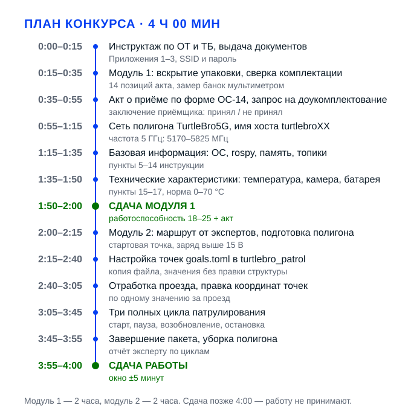
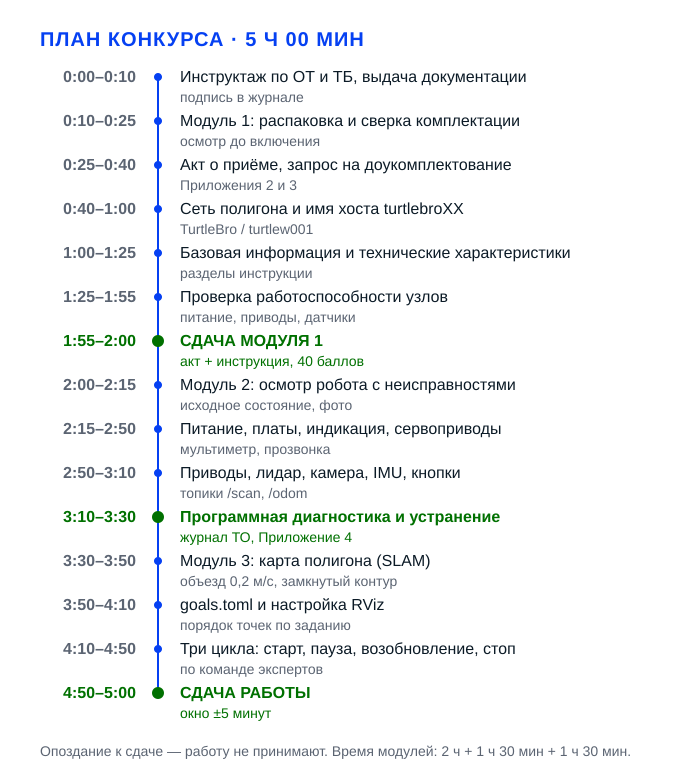
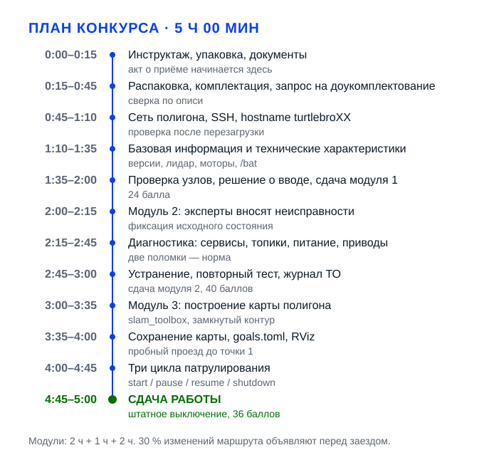

Эксплуатация сервисных роботов (Р)
Задания ниже — официальные файлы «Абилимпикс» (источник: abilympics-russia.ru), разложенные по категориям. Решения написаны по тексту задания, регламенту и критериям оценки; в них указано, что именно проверяет эксперт.
Школьник
14–16 лет, базовый уровень заданияВыдержка из официального конкурсного задания: страницы, относящиеся к категории «Школьник» (стр. 9–10 источника).
Пошаговое решение
Задание категории «Школьники» — принять сервисный робот TurtleBro для учебного класса и настроить его на патрулирование помещения. На всё даётся четыре часа: два на первый модуль и два на второй. В первом модуле вы принимаете упаковку, сверяете комплектацию по четырнадцати позициям акта, оформляете акт о приёме по форме ОС-14, подключаете робота к сети полигона, задаёте имя хоста вида turtlebroXX и заполняете инструкцию по вводу в эксплуатацию: двадцать пять параметров, от дистрибутива Linux и версии rospy до температуры процессора и напряжения сборки. Во втором модуле вы правите файл точек goals.toml в пакете turtlebro_patrol и выполняете три полных цикла патрулирования. Из ста баллов шестьдесят дают за приёмку и сорок за эксплуатацию, поэтому приёмка задаёт тон всей работе. Главные ловушки — перепутанный номер с наклейки, несохранённый файл точек и разряженная сборка перед заездами.

Задача 1. Войти на площадку, получить документы и принять упаковкуМодуль 1 · приёмка робота, 60 баллов из 100
Первые двадцать минут решают, будет ли у вас дальше спокойная работа. Нужно пройти инструктаж и получить допуск, разложить три документа так, чтобы они заполнялись по ходу дела, а не в последние минуты, осмотреть рабочее место и принять у организаторов коробку с роботом, не повредив ни упаковку, ни самого робота. Всё, что вы заметите и запишете здесь, потом пойдёт в акт приёма: приёмка — это не про «достал и включил», а про последовательность и внимательность, которые эксперт видит с первой минуты.
Действие 1.1. Пройти инструктаж и подготовить документы
Шаг 1.1.1
Садимся за стол экспертов и слушаем инструктаж по охране труда до конца, не начиная трогать коробку: на площадке робот с подвижными колёсами и сборкой из четырёх литиевых аккумуляторов, а рабочая зона — примерно 3000 на 1900 мм, где рядом работают ещё три участника. В конце расписываемся в журнале инструктажа, уточняем у эксперта, где аптечка, огнетушитель и ближайший выход, и запоминаем, к кому идём при неисправности, запахе гари или повреждении оборудования.
Без подписи в журнале к выполнению задания не допускают, и это не формальность: по разделу охраны труда участника, нарушившего инструкцию, могут временно отстранить, а постоянное нарушение норм безопасности идёт в личное дело. Дисциплина и безопасность при этом ещё и сквозной критерий оценки — их фиксируют все четыре часа, а не только на входе.
В журнале стоит ваша подпись, вы можете назвать имя технического эксперта и показать рукой на выход и аптечку. Если чего-то из этого не знаете — спрашивайте сразу, до вскрытия коробки: потом эксперт будет занят оцениванием и ответит коротко.
Типичная ошибка — расписаться и не слушать, а потом искать огнетушитель, когда из робота пошёл дым. Вторая — начать распаковку во время инструктажа: эксперт останавливает работу, и вы теряете 10–15 минут из двух часов модуля, а их на приёмке с 25 параметрами и без того впритык.
Эксперт смотрит на поведение в первые минуты: слушаете ли, задаёте ли вопросы по делу, держите ли руки вне упаковки. Это же наблюдение идёт в критерий организации работы и дисциплины.
Шаг 1.1.2
Раскладываем на столе три бумажных приложения и открываем их копии в текстовом редакторе: инструкцию по вводу робота в эксплуатацию (Приложение 1), акт о приёме оборудования по форме ОС-14 (Приложение 2) и запрос на доукомплектование (Приложение 3). Каждый файл сохраняем под своим именем вида turtlebroXX, где XX — номер с наклейки, и держим открытыми в трёх вкладках, чтобы переключаться без поиска. Рядом кладём лист с именем сети полигона и паролем.
Правило конкурсного задания жёсткое: акт заполняется на протяжении всего модуля, а инструкция по вводу — только во время сдачи модуля. Если перепутать порядок и начать заполнять инструкцию в середине работы, эксперт на сдаче увидит несоответствие, а часть баллов за приёмку уйдёт именно за оформление.
Три файла открыты и подписаны номером робота, бумажные бланки лежат слева от клавиатуры, лист с SSID и паролем — на виду. Проверьте, что в шапке каждого файла стоит ваша фамилия и номер робота: именно по ним эксперты разбирают работы.
Частая ошибка — вести черновик на бумаге, а потом переносить в файл: перенос занимает 15–20 минут и почти всегда с ошибками в цифрах. Вторая — сохранить все три документа под именем «Документ1», и на сдаче не найти нужный.
Эксперт проверяет не только содержание, но и то, как организованы файлы: открыты ли они заранее, есть ли имена. Это видно за десять секунд и стоит нескольких баллов.
Шаг 1.1.3
Берём номер с наклейки на корпусе или на упаковке робота и записываем его на стикер, приклеенный к краю стола, а также в шапку всех трёх файлов. Номер — это две цифры, которые превращаются в имя хоста turtlebroXX; тот же номер эксперты используют, чтобы найти вашего робота в сети полигона и отличить его от соседних. Если наклейка стёрта, номер уточняем у эксперта до начала работы.
Имя хоста задаётся строго по шаблону turtlebroXX, и ошибка в одной цифре приводит к тому, что робот с правильным адресом не отвечает на имя, а эксперт не может проверить ни один из 25 параметров. На разборе это выглядит как невыполненный пункт «Сетевая информация», хотя робот работал.
Номер на стикере, в шапке файлов и в будущем выводе hostname совпадают посимвольно. Сверьте вслух: если на наклейке 07, то и в файле, и в команде должно быть 07, а не 7. Сверяйте номер на самой наклейке, а не на экране ноутбука.
Взять номер с соседнего рабочего места или «на глаз» с экрана — самая обидная ошибка: дальше вы настраиваете чужое имя, робот не виден по SSH, и вы теряете время на переименование уже после подключения к сети.
Эксперт сверяет номер на наклейке с именем хоста в момент проверки сети. Несовпадение фиксируется сразу и комментируется вслух. Проверка занимает полминуты и делается в начале модуля.
Действие 1.2. Осмотреть рабочее место и разложить инструмент
Шаг 1.2.1
Проверяем то, что по требованиям охраны труда положено проверить до начала работы: исправность рабочей станции, наличие питания 220 В на столе, устойчивость стола и стула, достаточность освещения. Розетку проверяем сетевым фильтром с индикатором, а не «на ощупь»: если индикатор не горит, зовите эксперта до того, как подключите зарядное устройство аккумуляторов.
Пункт 2.2 инструкции по охране труда требует проверить работоспособность рабочей станции и наличие питания до начала работы, а пункт 2.6 запрещает приступать к заданию при обнаружении неисправности. Замена розетки или фильтра занимает у организаторов минуту, а поиск неисправности в середине модуля — полчаса.
Индикатор сетевого фильтра горит, ноутбук заряжается, стол не качается, свет падает на клавиатуру и на робота, а не в глаза. Если тень от руки закрывает экран — переставьте ноутбук, пока не начали работу.
Сесть так, чтобы свет был сбоку, и потом весь модуль работать в неудобной позе: к третьему часу спина и глаза дают о себе знать, а темп падает. Вторая ошибка — подключить зарядку аккумуляторов в фильтр, который уже перегружен ноутбуками соседей.
Эксперт обходит площадку и отмечает, у кого рабочее место организовано по требованиям, а у кого провода лежат на полу. Осмотр он делает до старта, поэтому всё должно быть готово сразу.
Шаг 1.2.2
Раскладываем инструмент по зонам, оставляя в центре стола свободное место под робота: слева — мультиметр и картридер microSD-USB, справа — блок питания 12 В и зарядное устройство, сзади — ноутбук с мышью. Всё остальное, включая чехлы, коробки и личные вещи, убираем со стола: на площадке размером с письменный стол лишний предмет — это риск уронить робота при переноске.
Порядок на рабочем месте требуется поддерживать на протяжении всех модулей, и это отдельно оценивается. Кроме того, робот весит немного, но падает с высоты стола вместе с лидаром и камерой — ремонт такого падения в рамках конкурса невозможен, а замена оборудования не предусмотрена.
На столе остались только инструмент, документы и робот; провода не свисают со стола; свободная площадка не меньше листа А4 под колёса. Пройдите взглядом по краю стола — ничего не должно свисать. Свободное место под робота — не меньше 25 на 25 сантиметров.
Оставить коробку и упаковочные материалы на рабочей поверхности: они мешают ставить робота и цепляются за колёса. Вторая ошибка — держать мультиметр в чехле и искать его потом пять минут. Третья — держать на столе открытую банку с водой рядом с платой.
Эксперт оценивает организацию места визуально в начале модуля и потом отмечает, поддерживается ли порядок к концу. Он же смотрит, не мешают ли ваши провода соседям по площадке.
Шаг 1.2.3
Проверяем ноутбук до подключения к роботу: заходим в настройки беспроводной сети и убеждаемся, что адаптер видит диапазон 5 ГГц, открываем терминал, проверяем наличие ssh и браузера с доступом на manual.turtlebro.ru. Убеждаемся, что зарядки хватит на два часа: индикатор не ниже половины, а лучше сразу подключить питание. Кабель питания прокладываем за ноутбуком, чтобы не зацепить его рукой.
Сеть полигона работает в двух вариантах, TurtleBro и TurtleBro5G, и на 5 ГГц помех меньше, а допустимый диапазон частот по документам — от 5170 до 5825 МГц. Если адаптер ноутбука видит только 2,4 ГГц, вы весь модуль будете бороться с обрывами SSH вместо работы с роботом.
В списке сетей видна TurtleBro5G, терминал открывается, ssh установлен, страница manual.turtlebro.ru грузится. Проверьте всё это до включения робота, чтобы не искать причину сразу в двух местах. Терминал держим открытым весь модуль: он понадобится постоянно.
Начать с робота, а потом обнаружить, что ноутбук не видит 5 ГГц: двадцать минут уходит на переключение и переподключение, и это время вычитается из приёмки. Вторая ошибка — работать от батареи и потерять ноутбук на середине проверки одометрии.
Эксперт может попросить показать список сетей: это быстрый способ понять, понимает ли участник, в каком диапазоне он работает. Вопрос задаётся в начале, а не после первой неудачи с подключением.
Действие 1.3. Принять упаковку у организаторов
Шаг 1.3.1
Принимаем коробку двумя руками, ставим на стол и осматриваем до вскрытия: вмятины на углах, подтёки, разошедшийся скотч, следы повторного оклеивания. Всё замеченное проговариваем вслух и записываем в акт словами — например, «вмятина на правом нижнем углу, скотч надорван». Фотографировать нельзя: телефоны и смарт-часы на площадку приносить запрещено, поэтому описание в документе и есть ваша фиксация.
Повреждение упаковки — единственная причина, по которой приёмщик вправе не принять оборудование и потребовать замены, и в акте для этого есть отдельная строка «Упаковка не повреждена / повреждена». Если вы вскрыли коробку молча, доказать, что вмятина была до вас, уже невозможно, и ответственность за повреждение переходит на участника.
В акте заполнена строка состояния упаковки, и то, что вы написали, совпадает с тем, что видят эксперты на столе. Если сомневаетесь — позовите технического эксперта до вскрытия, это разрешено и правильно.
Вскрыть коробку «посмотреть, всё ли на месте» и только потом заметить повреждение: доказательств нет, а заключение приёмщика придётся писать по факту, что снижает баллы за приёмку. Вторая ошибка — описать повреждение общими словами вроде «коробка помята» без указания места.
Эксперт подходит к моменту вскрытия и смотрит, осмотрели ли упаковку до того, как в неё заглянули. Если осмотр пропущен, он отмечает это сразу, не дожидаясь сдачи модуля.
Шаг 1.3.2
Вскрываем по клеевому шву, подрезая скотч ножом или ножницами на глубину не больше 5 мм и держа лезвие плашмя к крышке, чтобы не задеть лидар и камеру, которые лежат сверху. Крышку снимаем целиком и отставляем в сторону, а не отгибаем: картон на сгибе ломается, и упаковку потом нельзя использовать для возврата. Нож держим под острым углом к крышке, а не вертикально.
Внутри коробки робот уложен с лидаром высотой около семи сантиметров и камерой на кронштейне, и любое движение ножом вглубь — это риск порезать шлейф или поцарапать крышку лидара. Повреждение при вскрытии в акт приёмки не спишешь, а лидар — самая дорогая часть комплекта после платформы.
Скотч разрезан по шву, крышка снята целиком, внутри ничего не смещено, упаковка сохранила форму. Проверьте, что на верхнем слое нет ваших порезов и что лидар не касался лезвия. Крышку кладём внутренней стороной вверх, чтобы не запачкать стол.
Резать скотч «с размаху» и зацепить камеру — типичная ошибка новичка: камера на гибком кронштейне, её легко погнуть, а после этого она не держится в нужном положении. Вторая — вытряхнуть содержимое, перевернув коробку: аккумуляторы выкатываются и бьются о пол.
Эксперт смотрит на аккуратность вскрытия: это первая операция, где видно, умеет ли участник работать с оборудованием, а не только с клавиатурой. Порезы на упаковке он тоже замечает и учитывает при оценке.
Шаг 1.3.3
Достаём содержимое по одному предмету и выкладываем на стол в том же порядке, в каком они перечислены в акте: платформа, системная плата, Raspberry Pi 4B, microSD, лидар, камера, плата батарейного отсека, аккумуляторы, мотор-редукторы, колёса, крепления, блок питания, зарядное устройство, кабель microUSB. Каждый предмет ставим на своё место и запоминаем, чего не хватает. Пустую упаковку складываем и убираем под стол, а не выбрасываем.
Перечень в акте — это и есть чек-лист комплектности: четырнадцать позиций, по которым приёмщик отвечает подписью. Если упаковку выбросить, а потом обнаружится некомплект, отправлять робота поставщику будет не в чем, и решение по акту придётся принимать в пользу «принял», потеряв баллы за невыявленный некомплект.
Все четырнадцать позиций разложены и пересчитаны, пустая упаковка сложена и лежит под столом, на площадке нет забытых в коробке мелочей вроде креплений колёс. Ещё раз пройдите по дну коробки рукой: там чаще всего остаётся пакетик с винтами.
Вывалить всё в кучу и считать «на глаз»: крепления колёс и кабель microUSB теряются в общей куче, а некомплект по этим позициям стоит баллов и времени на запрос. Вторая ошибка — сразу выбросить упаковку в мусор у выхода, а потом искать её по всей площадке.
Эксперт подходит и сверяет разложенное с перечнем в акте: порядок раскладки позволяет проверить комплектность за минуту. При раскладке в куче проверка занимает у него несколько минут.
Задача 2. Сверить комплектацию и оформить акт о приёме оборудованияМодуль 1 · приёмка робота, 60 баллов из 100
Здесь приёмка превращается в документ. Нужно пересчитать все четырнадцать позиций перечня, проверить каждую на целостность, измерить напряжение аккумуляторов, заполнить акт по форме ОС-14 и, если чего-то не хватает, составить запрос на доукомплектование и показать его эксперту. Именно этот акт с подписью и заключением приёмщика — главный результат первого модуля, и именно по нему видно, принимаете вы робота в учебный класс или отправляете поставщику.
Действие 2.1. Пересчитать и осмотреть комплектацию
Шаг 2.1.1
Идём по перечню акта сверху вниз и называем вслух каждую позицию с количеством: мобильная платформа — один комплект, системная плата TurtleBro — одна, Raspberry Pi 4B — одна, microSD-карта на 16 ГБ — одна, лазерный лидар с обзором 360 градусов — один, камера — одна, плата батарейного отсека — одна, аккумуляторы 18650 — четыре, мотор-редукторы с энкодерами — два, колёса — два, крепления колёс — два, блок питания 12 В — один, зарядное устройство — одно, кабель microUSB — один.
В акте есть две колонки: «по документам организации, поставившей оборудование» и «фактически принято». Первая уже заполнена, вторая — ваша работа, и расхождение между ними и есть основание для запроса на доукомплектование. Если вы пересчитали не всё, расхождение всплывёт на проверке у эксперта, а не в вашу пользу.
Четырнадцать строк заполнены фактическим количеством, и ни в одной нет прочерка. Сверьте количественные позиции отдельно: аккумуляторов четыре, колёс два, мотор-редукторов два, креплений два — именно здесь чаще всего недостача на одну штуку.
Считать «примерно» и записать «4» там, где лежит три: недокомплект по аккумуляторам означает, что робот не поедет, а вы уже подписали приёмку. Вторая ошибка — пропустить крепления колёс, потому что они мелкие и лежат в пакетике.
Эксперт выборочно пересчитывает две-три позиции. Если цифры в акте расходятся с реальностью, доверие к остальным строкам падает. Особенно он смотрит на позиции, где количество больше одного.
Шаг 2.1.2
Берём мультиметр, ставим предел 20 В постоянного тока, проверяем каждый из четырёх аккумуляторов 18650 отдельно: щуп на плюс, щуп на минус, ждём стабилизации показания. Рабочее напряжение заряженного элемента — от 4,1 до 4,2 В, разряженного — около 3,0–3,3 В, а разница между банками в одной сборке не должна превышать 0,2 В. Заодно осматриваем корпуса: вздутие, потёртая изоляция и подтёки — основание не принимать.
Четыре элемента работают последовательно, и слабая банка садится первой: робот проезжает два метра и выключается, а на патрулировании это выглядит как сбой навигации. Замер мультиметром — единственный способ увидеть разбаланс до того, как он проявится в движении, и мультиметр разрешено приносить с собой.
Все четыре банки показывают от 3,9 до 4,2 В, разброс не больше 0,2 В, корпуса целые. Запишите значения на стикер: они пригодятся, когда будете сверять напряжение из топика батареи с реальностью. Значения пишем по порядку номеров банок, чтобы потом не путаться.
Проверить только одну банку и поставить все четыре: разбаланс в 0,4–0,5 В вылезет на патрулировании, и вы будете искать причину в навигации. Вторая ошибка — мерить на пределе 200 В и получить показание 4, что выглядит как «аккумулятор мёртв».
Эксперт может попросить показать замер: важно, чтобы участник держал щупы правильно и называл единицы измерения. Отдельно он отмечает, проверены ли все четыре банки, а не одна.
Шаг 2.1.3
Осматриваем собранные узлы: плата батарейного отсека сидит на своём месте, коннектор XT60 не болтается, microSD-карта на 16 ГБ вставлена до щелчка, лидар закреплён ровно и не шатается при лёгком нажатии, камера смотрит вперёд и держится в кронштейне, колёса и мотор-редукторы не имеют люфта, крепления затянуты. Каждый узел проверяем рукой, а не глазами: люфт на глаз не виден.
Комплектность — это не только наличие, но и установка: по документам поставщика робот приходит частично разобранным, и если плата батарейного отсека не защёлкнута, при первом включении робот просто не запустится. Приёмщик отвечает за то, что оборудование готово к работе, а не только лежит в коробке.
Ни один узел не двигается при нажатии пальцем, карта сидит до щелчка, лидар стоит горизонтально. Проверьте, что колёса прокручиваются от руки без заеданий: если колесо клинит, дальше вы будете искать причину в программе.
Закрепить лидар «потом» и при включении зацепить его рукой: лидар срывается с крепления и падает на пол. Вторая ошибка — вставить карту microSD не до щелчка, после чего робот грузится с ошибками файловой системы.
Эксперт проверяет посадку карты и крепление лидара, потому что это типовые места, где участники экономят время и потом теряют его. Он же смотрит, не осталась ли карта в картридере на столе.
Шаг 2.1.4
Проводим внешний осмотр на повреждения и записываем всё в акт: сколы на корпусе, погнутые кронштейны, трещины на защитном кожухе лидара, перетёртые или оборванные провода, следы перегрева на разъёмах, погнутые штифты разъёмов. Отдельно смотрим плату: потемневшие дорожки и вздутые конденсаторы — признак того, что плату уже включали с переполюсовкой.
Акт содержит раздел «При осмотре оборудования установлено», где отмечается состояние упаковки и комплектность, а заключение приёмщика опирается на осмотр. Скрытый дефект, найденный позже, становится вашей ответственностью: считается, что вы приняли оборудование без замечаний.
Все найденные дефекты перечислены в акте с указанием места, а не общими словами. Если дефектов нет — так и написано: «повреждений не обнаружено», это тоже содержательная запись. Осматриваем при боковом свете: при прямом половина царапин не видна.
Написать «без повреждений», не осмотрев плату и разъёмы: половина дефектов видна только при наклоне и подсветке. Вторая ошибка — увидеть трещину и промолчать, рассчитывая, что «и так сойдёт»: на этапе работоспособности это превратится в незакрытый пункт.
Эксперт открывает акт и читает раздел осмотра. Формулировки вроде «всё нормально» он отмечает как отсутствие работы. Конкретное место повреждения он отличает от общего «есть дефекты».
Действие 2.2. Заполнить акт по форме ОС-14
Шаг 2.2.1
Заполняем шапку акта: организация-получатель — организация проведения чемпионата, организация-поставщик и изготовитель — ООО «Братья Вольт», номер приёмщика, дата составления. В графе «Утверждаю» по форме стоит главный эксперт, а в строке конкурсанта-приёмщика — ваша фамилия и инициалы полностью, без сокращений вроде «Иванов И.». Пишем печатными буквами, чтобы фамилию можно было прочитать без догадок.
Шапка — это идентификация документа: по ней работу находят при разборе и по ней же видно, что акт заполнен вами, а не скопирован у соседа. Ошибки в наименовании поставщика и в дате делают документ формально недействительным, и часть баллов за оформление снимается.
Шапка заполнена полностью, дата совпадает с датой конкурса, фамилия написана разборчиво и так же, как в вашем задании. Сверьте номер приёмщика с номером рабочего места. Дата должна совпадать в шапке акта и в заключении приёмщика.
Оставить пустыми графы поставщика и изготовителя: они есть в образце, и их отсутствие читается как небрежность. Вторая ошибка — поставить дату «на глаз», не сверив с часами площадки. Третья — оставить пустой графу с номером приёмщика.
Эксперт сверяет шапку с образцом: заполненные графы видны сразу, а пропуски он отмечает в оценочном листе. Он же сверяет дату с датой конкурса: ошибка формальная, но заметная.
Шаг 2.2.2
Заполняем раздел «Сведения о времени приёмки оборудования»: место приёмки (наименование пункта — соревновательная площадка), время начала и окончания приёма с точностью до минуты. Время берём по часам площадки, а не по телефону, которого у вас нет. Началом считаем момент, когда вы приняли упаковку, окончанием — момент, когда закончили осмотр и подписали акт.
Время приёмки — единственный измеримый след того, что работа велась последовательно: по нему видно, что вы не «подписали всё в конце». Кроме того, акт заполняется на протяжении всего модуля, и записи с интервалом в две минуты в конце выглядят как заполнение задним числом.
Начало и окончание записаны, интервал соответствует реальной работе: приёмка комплекта занимает от двадцати минут до получаса. Сверьте записанное время с часами на площадке ещё раз перед сдачей. Интервал меньше десяти минут на полную приёмку выглядит неправдоподобно.
Записать одинаковое время начала и окончания: это сразу видно и читается как формальность. Вторая ошибка — тянуть с записью до сдачи модуля и восстанавливать время по памяти. Третья — записать время без минут, только часы.
Эксперт сопоставляет время в акте с общим таймингом модуля. Резкие расхождения он проговаривает на разборе. По времени видно и темп работы: приёмка за пять минут невозможна.
Шаг 2.2.3
Заполняем раздел «Сведения о комплектности»: в левой колонке перечень по документам поставщика уже напечатан, в правой, «фактически принято», вписываем наименование и количество по факту. Если позиция есть — количество, если нет — ноль и пометку в разделе осмотра. Ничего не зачёркиваем: исправления в акте делаются только с подписью «исправленному верить».
Правая колонка — ваша зона ответственности, и именно по ней эксперт понимает, умеете ли вы работать с документом приёмки. Зачёркивания и замазанные цифры в акте приёмки оборудования недопустимы: документ идёт в бухгалтерию организации, и следы правок делают его спорным.
Правая колонка заполнена по всем четырнадцати строкам, исправлений нет, почерк читается. Пройдите по строкам снизу вверх — так легче заметить пропуск, чем сверху вниз по знакомому тексту. Пустых ячеек быть не должно ни в одной из четырнадцати строк.
Заполнить только те строки, где всё в порядке, а проблемные оставить пустыми: пустая строка читается как «не проверял». Вторая ошибка — исправить цифру и не заверить исправление. Третья — вписать количество, не указав наименование позиции.
Эксперт читает правую колонку построчно. Именно здесь чаще всего находятся незаполненные позиции. Он сравнивает колонки построчно, поэтому пропуск виден сразу.
Действие 2.3. Оформить запрос и заключение приёмщика
Шаг 2.3.1
Если обнаружился некомплект или дефект, открываем Приложение 3 и пишем запрос на доукомплектование по форме: адресат — главному эксперту компетенции «Эксплуатация сервисных роботов», от инженера по обслуживанию роботов, с фамилией и инициалами. В теле — фраза «Прошу предоставить» с названием компонента и его количеством, затем причина: «в связи с отсутствием в комплекте» или «в связи с механическим повреждением при транспортировке». Внизу дата и фамилия.
Запрос — отдельный документ, который требуется именно в случае неполной комплектации, и его нужно не просто написать, а продемонстрировать техническому эксперту. Формулировка причины влияет на решение: «отсутствует в комплекте» и «повреждён» ведут к разным действиям поставщика.
Запрос содержит название компонента, количество, причину, дату и подпись, и вы показали его эксперту до того, как закрыли модуль. Держите файл открытым до сдачи: эксперт может вернуться и попросить показать ещё раз.
Написать запрос «для вида», не указав конкретный компонент: эксперт возвращает документ, и время уходит. Вторая ошибка — составить запрос и никому его не показать, тогда работа считается невыполненной, хотя документ есть.
Эксперт читает запрос целиком и проверяет, совпадает ли указанный компонент с тем, чего действительно не хватает в акте. Если запрос написан, но не показан, пункт считается невыполненным.
Шаг 2.3.2
Заполняем раздел «При осмотре оборудования установлено»: отмечаем нужное в строках «упаковка не повреждена / повреждена» и «оборудование поставлено комплектно / некомплектно». Если повреждена или некомплектно — в скобках указываем, что именно: «вмятина на правом нижнем углу», «отсутствуют два аккумулятора 18650», «трещина на кожухе лидара». Пишем так, чтобы человек, не видевший коробку, понял, что произошло.
Это итог осмотра, переведённый в формальные признаки, и от него напрямую зависит заключение приёмщика. Общие слова здесь не работают: строка «некомплектно (указать некомплектность)» требует конкретики, иначе документ возвращается на доработку. Формулировка должна быть проверяемой, а не оценочной.
Отмеченные строки не противоречат тому, что написано в разделе комплектности: если там ноль аккумуляторов, здесь стоит «некомплектно» с уточнением. Прочитайте оба раздела подряд и проверьте, что они согласованы.
Отметить «комплектно», а в перечне оставить нули: внутреннее противоречие в акте — грубая ошибка оформления, и баллы снимаются за оба раздела сразу. Вторая ошибка — написать «повреждена» без указания повреждения.
Эксперт ищет именно противоречия между разделами: это самый быстрый способ проверить, заполнял участник акт по факту или по памяти. Противоречие он обсуждает с участником сразу на месте.
Шаг 2.3.3
Пишем заключение приёмщика: «принял» или «не принял», ставим подпись, расшифровку и дату. Логика решения простая и должна быть видна из документов: если комплектация полная, упаковка целая и дефектов нет — робота можно вводить в эксплуатацию в учебном классе, значит «принял». Если не хватает узла, без которого робот не выполняет заявленную задачу, или есть повреждение — «не принял» и запрос на замену или доукомплектование.
На основании приёма и заполненных документов конкурсант обязан принять решение, можно ли вводить робота в эксплуатацию или его отправляют поставщику на замену либо доукомплектование. Это ключевой смысл модуля: оценивается не аккуратность переписывания, а способность принять обоснованное решение и оформить его.
Заключение согласуется с разделами осмотра и комплектности, подпись и расшифровка на месте, дата стоит. Вы можете вслух объяснить, почему приняли или не приняли: «принял, потому что все четырнадцать позиций на месте, повреждений нет».
Написать «принял» при явном некомплекте, чтобы «не поднимать шум»: дальше робот не выполнит патрулирование, а ответственность за пропущенный дефект будет на приёмщике. Вторая ошибка — «не принял» без запроса: решение без обоснования не принимается.
Эксперт читает заключение вместе с запросом и перечнем. Именно здесь видно, понимает ли участник смысл приёмки, а не только форму документа. Вопрос «почему приняли» задаётся почти всегда, ответ должен быть готов.
Задача 3. Подключить робота к сети, задать имя хоста и снять базовую информациюМодуль 1 · приёмка робота, 60 баллов из 100
Пока робот не в сети, о нём нельзя сказать ничего, кроме того, что он лежит на столе. Поэтому следующий шаг — включить его, подключить к сети полигона, присвоить имя хоста вида turtlebroXX и снять первые тринадцать параметров инструкции: имя в сети, адрес, частоту подключения, дистрибутив и сборку Linux, версии Python3, rospy и пакета turtlebro, прошивку микроконтроллера, серийный номер платы, объём памяти, часовой пояс и наличие топиков. Это самая техническая часть модуля, и здесь теряют время те, кто начинает с команд, не проверив питание и сеть.
Действие 3.1. Включить робота и подключить его к сети полигона
Шаг 3.1.1
Ставим робота на свободную площадку колёсами вниз, проверяем, что выключатель питания в положении «выкл», и вставляем четыре аккумулятора 18650 в отсек по маркировке полярности на плате: плюс к плюсу, минус к минусу, все четыре в одном направлении. Подключаем коннектор XT60 до щелчка, затем переводим выключатель во включение и ждём 40–60 секунд, пока не загорится подсветка и не прекратит мигать индикатор активности.
Переполюсовка одного элемента — это выход из строя платы батарейного отсека и, возможно, системной платы, а запасного комплекта на площадке нет. Выдержка в 40–60 секунд нужна потому, что Raspberry Pi 4B поднимает ROS не мгновенно: если начать проверять сеть раньше, робот просто не отвечает, и участник начинает искать несуществующую неисправность.
Подсветка горит ровно, индикатор не мигает в аварийном режиме, робот стоит неподвижно и не издаёт писка. Через минуту после включения попробуйте найти его в сети — если не находится, вернитесь к питанию, а не к командам.
Вставить аккумуляторы «как лягут» и включить: плата отсека греется, а в худшем случае сгорает предохранитель. Вторая ошибка — начать проверку сети через десять секунд после щелчка выключателя и решить, что робот неисправен.
Эксперт наблюдает за включением: порядок действий с литиевыми элементами — часть требований безопасности, и нарушение фиксируется. Он же смотрит, не оставлены ли аккумуляторы лежать на столе.
Шаг 3.1.2
На ноутбуке подключаемся к сети полигона TurtleBro5G с паролем turtlew001, предварительно убедившись, что выбрана именно 5-гигагерцовая сеть, а не TurtleBro на 2,4 ГГц. После подключения смотрим выданный адрес и маску: командой ip -4 addr show или в свойствах соединения. Адрес ноутбука должен оказаться в той же подсети, что и робот, иначе вы не увидите его ни по имени, ни по IP.
Робот и ноутбук должны быть в одной подсети — это условие любой проверки по SSH и ROS. Диапазон 5 ГГц по документам поставщика лежит в пределах от 5170 до 5825 МГц, и в этом диапазоне меньше помех от соседних площадок, где работают ещё три участника с такими же роботами.
Ноутбук получил адрес вида 192.168.X.Y, сеть отмечена как подключённая, интернет при этом может не работать — это нормально, полигон локальный. Запишите адрес ноутбука: он понадобится, если придётся настраивать статический адрес.
Подключиться к открытой сети с похожим именем: на чемпионате рядом работают несколько точек доступа, и часть из них без пароля. Вторая ошибка — подключиться к TurtleBro на 2,4 ГГц и потом ловить обрывы соединения во время загрузки карты.
Эксперт проверяет, к какой сети подключён ноутбук. Работа в неправильном диапазоне видна по нестабильности соединения. Он может сам назвать сеть и посмотреть, выбрали ли вы именно её.
Шаг 3.1.3
Находим адрес робота: проще всего посмотреть таблицу клиентов роутера полигона вместе с экспертом, а если доступа к роутеру нет — выполнить ping по широковещательному адресу и посмотреть таблицу соседей командой ip neigh, где по MAC-адресу платы виден новый адрес. Затем подключаемся по SSH, используя логин из инструкции на manual.turtlebro.ru, и сразу проверяем, что попали именно на своего робота: hostname и номер с наклейки должны совпасть.
Параметр «IP-адрес робота в сети роутера-полигона» — второй пункт раздела «Сетевая информация», и без него нельзя ни проверить остальные 23 параметра, ни запустить патрулирование во втором модуле. Ошибка адресом на чужого робота приводит к тому, что вы настраиваете goals.toml на соседней машине.
SSH-сессия открыта, приглашение командной строки получено, вывод hostname соответствует номеру на наклейке, в приглашении виден тот же адрес. Проверьте MAC-адрес платы, если сомневаетесь: он записан на наклейке рядом с номером.
Подключиться по адресу, который «был в прошлом году»: адреса выдаются динамически, и робот получит другой. Вторая ошибка — не проверить, чей робот отвечает, и потом искать, почему чужая карта не совпадает с полигоном.
Эксперт подходит и смотрит на экран: имя хоста и адрес — первое, что он проверяет в разделе сетевой информации. Если адрес не записан, дальше он не проверяет ничего.
Действие 3.2. Присвоить имя хоста turtlebroXX
Шаг 3.2.1
В SSH-сессии меняем имя хоста командой sudo hostnamectl set-hostname turtlebroXX, подставляя две цифры с наклейки. Если система отвечает, что команда не найдена, правим файл /etc/hostname вручную через sudo nano, оставляя в нём одну строку с новым именем и убирая старое. После правки проверяем cat /etc/hostname: там должно быть ровно turtlebroXX, без пробелов и лишних символов.
Имя хоста — обязательный пункт задания: оно должно быть вида turtlebroXX, где XX — номер с наклейки. Именно по этому имени эксперт отличает работы участников, а пакет патрулирования во втором модуле обращается к роботу по имени. Латинские буквы и цифры без дефисов — требование к именам хостов в Linux.
Команда выполнена без ошибок, файл /etc/hostname содержит одну строку с нужным именем, старое имя нигде не осталось. Сверьте посимвольно с наклейкой: turtlebro07 и turtlebro7 — разные имена. Заодно проверьте, что после входа в приглашении SSH видно новое имя.
Написать имя с заглавной буквы или через дефис: система принимает, но эксперт фиксирует несоответствие шаблону. Вторая ошибка — поменять имя и не перезагрузиться, после чего hostname показывает старое значение, а участник считает, что всё сломалось.
Эксперт просит показать вывод hostname. Это проверка на две секунды, и она стоит баллов за сетевую информацию. Он сверяет имя с наклейкой, а не только с вашей записью в файле.
Шаг 3.2.2
Открываем /etc/hosts и приводим строку с адресом 127.0.1.1 к новому имени, чтобы система не искала старое имя локально. Затем перезагружаем робота командой sudo reboot, ждём около минуты, снова подключаемся по SSH и проверяем hostname уже после загрузки. Если SSH не отвечает по имени, подключаемся по IP — адрес за это время обычно сохраняется. Если соединение не поднимается, ждём ещё полминуты, а не перезагружаем снова.
Строка в /etc/hosts с устаревшим именем — частая причина того, что часть служб ROS стартует с ошибкой разрешения имени: пакет патрулирования обращается к роботу по имени, и запрос уходит в никуда. Перезагрузка нужна, чтобы изменения применились полностью, а не частично.
После перезагрузки hostname выдаёт turtlebroXX, SSH работает и по адресу, и по имени, в логах загрузки нет сообщений о невозможности разрешить имя. Проверьте также, что робот снова появился в сети — иногда после перезагрузки адрес меняется.
Перезагрузить робота, не сохранив файл в nano: редактор спрашивает подтверждение, и на этом шаге легко ответить «No». Вторая ошибка — перезагружаться в момент, когда до сдачи модуля десять минут, и не успеть проверить результат.
Эксперт смотрит на перезагрузку как на проверку устойчивости: если после неё робот не поднялся, участник должен уметь восстановить соединение. Потеря связи после перезагрузки — типичная ситуация на этом шаге.
Шаг 3.2.3
Заполняем раздел «Сетевая информация» инструкции по вводу: присвоенное имя робота в сети (turtlebroXX), IP-адрес в сети роутера-полигона и текущую частоту подключения к сети 5 ГГц. Частоту берём командой iw dev wlan0 link, в выводе смотрим строку freq и переводим мегагерцы в понятную запись, например 5180 МГц. Записываем значение сразу, а не по памяти в конце модуля.
Раздел «Сетевая информация» — первые три пункта из двадцати пяти, и они заполняются только по факту: имя, адрес и частота у каждого робота свои. Частота должна попадать в допустимый диапазон от 5170 до 5825 МГц; если получилось 2400 с лишним, значит робот сидит в сети 2,4 ГГц, и это надо исправлять до сдачи.
Все три строки заполнены числами, частота лежит в диапазоне 5 ГГц, имя совпадает с выводом hostname, адрес — с выводом hostname -I. Проверьте, что записали мегагерцы, а не номер канала. Частота должна быть трёх- или четырёхзначным числом в мегагерцах.
Записать «5 ГГц» вместо конкретной частоты: пункт требует значения, и общая фраза не принимается. Вторая ошибка — указать адрес, который робот получил до перезагрузки: после смены имени он часто выдаётся заново.
Эксперт сверяет записанные значения с выводом команд на экране. Это одна из немногих проверок, где расхождение видно мгновенно. Он просит назвать частоту вслух и сравнить с выводом команды.
Действие 3.3. Снять базовую информацию о конфигурации и ПО
Шаг 3.3.1
Определяем операционную систему и сборку: выполняем cat /etc/os-release и смотрим строки PRETTY_NAME и VERSION_CODENAME, при необходимости дополняем выводом lsb_release -a. По документам поставщика ожидается Debian GNU/Linux с кодовым именем buster, и именно эти два значения вносятся в пункты «Название дистрибутива Linux» и «Кодовое имя сборки Linux».
Дистрибутив и сборка — база для всех дальнейших выводов: от сборки зависит версия Python и набор пакетов ROS, а в акте приёмки эти строки сверяются с документами поставщика. Если фактическая сборка отличается от заявленной, это уже повод для записи в разделе осмотра.
В файле os-release стоит Debian GNU/Linux, VERSION_CODENAME равен buster, вывод не содержит противоречий между PRETTY_NAME и VERSION. Запишите оба значения дословно, включая регистр. Название дистрибутива пишем так, как оно выведено в файле.
Записать только «Linux»: пункт требует названия дистрибутива, и общее слово не принимается. Вторая ошибка — перепутать название дистрибутива с кодовым именем сборки и поставить одно и то же в две строки.
Эксперт сравнивает записанное с выводом команды. Пара «Debian — buster» показывает, что участник понимает разницу между дистрибутивом и сборкой. Подмена названия дистрибутива кодовым именем сборки сразу заметна.
Шаг 3.3.2
Снимаем версии программного обеспечения: python3 --version даёт версию интерпретатора, rosversion rospy — версию библиотеки (по документам поставщика ожидается 1.15.15), rosversion turtlebro или apt show turtlebro — версию пакета робота. Версию прошивки микроконтроллера материнской платы и серийный номер платы mcu_id берём из соответствующего сервиса или топика пакета turtlebro, точное имя которого указано в онлайн-инструкции; записываем оба значения без округлений.
Это пять отдельных пунктов инструкции, и каждый требует конкретного значения: версия Python3, версия rospy, версия пакета turtlebro, версия прошивки и mcu_id. По mcu_id эксперт отличает платы между собой, а по версии rospy понимает, совместим ли робот с пакетом патрулирования, который вы будете настраивать во втором модуле.
Все пять полей заполнены, версия rospy совпадает с заявленной в документах или расхождение отмечено, mcu_id представляет собой строку цифр и букв без пробелов. Сверьте, что версия Python указана полностью, например 3.7.3, а не просто 3.
Записать версию Python как 3: пункт требует полной версии, и половина баллов за него теряется. Вторая ошибка — взять mcu_id из вывода чужой команды и получить серийный номер, не совпадающий с платой. Третья — оставить поле mcu_id пустым, сославшись на нехватку времени.
Эксперт выборочно сверяет два-три значения из пяти. mcu_id он проверяет особенно внимательно: это единственный параметр, который нельзя угадать. Остальные версии он сверяет с выводом команд на экране.
Шаг 3.3.3
Снимаем объём оперативной памяти командой free -m: нас интересует строка Mem и колонка total. По документам поставщика объём указан в килобайтах — 1894304 Кбайт, что соответствует примерно 1850 Мбайт, и в инструкцию вносится значение именно в мегабайтах, поэтому пересчитываем и записываем 1850. Затем командой timedatectl берём часовой пояс и переписываем его в требуемом формате «Time zone: Continent/City (XXX, +XXXX)», а командой rostopic list проверяем наличие топиков из инструкции.
Объём памяти и часовой пояс — два пункта, где чаще всего ошибаются в единицах измерения: в акте килобайты, в инструкции мегабайты, и разница в тысячу раз выглядит как ошибка приёмки. Часовой пояс влияет на метки времени в логах патрулирования, а наличие топиков — на то, запустится ли пакет turtlebro_patrol вообще.
В строке памяти стоит около 1850 Мбайт, часовой пояс записан в формате с указанием смещения, список топиков содержит все позиции из перечня инструкции. Если какого-то топика нет, отметьте это отдельно: это основание для записи в разделе работоспособности.
Записать 1894304 в мегабайты: значение выглядит абсурдно и сразу бросается в глаза эксперту. Вторая ошибка — записать часовой пояс словами «московское время» без континента, города и смещения. Третья — записать объём памяти в гигабайтах вместо мегабайт.
Эксперт сверяет формат записи часового пояса с образцом в инструкции: именно формат, а не только значение, входит в оценку. Он же проверяет, что список топиков не переписан от руки по памяти.
Действие 3.4. Измерить технические характеристики узлов
Шаг 3.4.1
Измеряем температуру процессора командой vcgencmd measure_temp, которая выдаёт строку вида temp=48.2'C: в инструкцию вносим число без обозначения градусов. Допустимый диапазон по документам поставщика — от 0 до 70 градусов Цельсия, поэтому любое значение выше 70 — повод сообщить эксперту и не продолжать длительную нагрузку. Если команда недоступна, температуру берём из системного топика пакета turtlebro.
Температура процессора — пятнадцатый пункт инструкции и единственный показатель, по которому видно тепловой режим платформы. Raspberry Pi 4B при 80 градусах начинает троттлить, то есть снижать частоту: патрулирование в таком режиме идёт рывками, и участник ищет причину в навигации, хотя дело в перегреве.
Значение лежит в диапазоне 35–65 градусов при работе на столе, вписано одно число с десятыми, единицы измерения понятны. Снимите температуру дважды с интервалом в пару минут: рост больше чем на десять градусов на холостом ходу — тревожный признак.
Записать температуру «нормальная» вместо числа: пункт измеримый, и оценка за него выставляется по значению. Вторая ошибка — мерить температуру сразу после включения и получить заниженное значение, которое не соответствует рабочему режиму.
Эксперт может попросить повторить команду при нём. Совпадение значений подтверждает, что участник действительно снимал характеристику. Значение выше 70 градусов он обсуждает с участником отдельно.
Шаг 3.4.2
Снимаем текущее разрешение камеры: удобнее всего посмотреть в свойствах топика изображения — rostopic echo с одним сообщением или rostopic info с последующей проверкой полей width и height, а при работе с v4l2-ctl — выводом списка форматов. Значение записываем в пикселях, например 640 на 480, и отдельно отмечаем, совпадает ли оно с аппаратными 1,3 мегапикселя из описания.
Разрешение камеры — шестнадцатый пункт инструкции, и здесь есть тонкость: аппаратно камера даёт не менее 1,3 мегапикселя, но в топике часто отдаётся уменьшенный поток, чтобы не грузить процессор. Поэтому в инструкцию идёт фактическое значение из топика, а расхождение с аппаратным — не дефект, а настройка, и это надо уметь объяснить.
В строке записано разрешение в пикселях, оба числа целые, значение повторяется при повторном запросе топика. Если картинка не приходит вообще, это уже вопрос работоспособности камеры, а не характеристики.
Записать «1,3 Мп» вместо разрешения топика: пункт требует текущего значения, а не паспортного. Вторая ошибка — сделать вывод о неисправности камеры только потому, что поток идёт в меньшем разрешении. Третья — записать разрешение в мегапикселях, а не в пикселях.
Эксперт просит объяснить расхождение между паспортным и текущим разрешением. Внятный ответ показывает понимание, а не заучивание. Он может спросить, где именно это разрешение настраивается.
Шаг 3.4.3
Читаем напряжение аккумуляторной сборки из топика батареи: подписываемся на него и смотрим поле напряжения, одновременно сверяя показание с замером мультиметра, который вы делали при приёмке. Полностью заряженная сборка из четырёх элементов даёт около 16,4–16,8 В, номинальное напряжение около 14,4 В, а ниже 13,2 В работать не стоит: робот может выключиться посреди проезда.
Напряжение сборки — семнадцатый пункт инструкции, и он напрямую связан с двумя часами второго модуля: если на старте патрулирования у вас 13,5 В, до третьего цикла робот не доживёт. Сверка с мультиметром нужна, чтобы убедиться, что топик не врёт и калибровка платы в порядке.
Значение из топика отличается от мультиметра не больше чем на 0,3 В, записано с одним знаком после запятой и с единицей измерения. Если расхождение больше, отметьте это в разделе работоспособности как замечание к калибровке.
Записать напряжение одной банки вместо сборки: 4,1 В в этом пункте выглядит как полностью разряженный робот. Вторая ошибка — не обращать внимания на просадку и начать патрулирование с 13,4 В. Третья — мерить напряжение под нагрузкой и удивляться просадке.
Эксперт смотрит на записанное напряжение и на заряд робота перед вторым модулем: разряженная сборка перед патрулированием — типичная причина провала заездов. Он смотрит и на то, поставлен ли робот на зарядку между модулями.
Задача 4. Проверить работоспособность узлов и сдать первый модульМодуль 1 · приёмка робота, 60 баллов из 100
Осталась самая ответственная часть приёмки: доказать, что каждый узел робота работает именно так, как заявлено в задаче. Восемь пунктов инструкции — камера, линейная и угловая одометрия, IMU, лидар, подсветка, кнопки и связь контроллера расширения — проверяются не на глаз, а движением и показаниями топиков. И только после этого инструкция по вводу заполняется целиком и сдаётся вместе с актом: по правилам конкурсного задания этот документ заполняется именно во время сдачи модуля.
Действие 4.1. Проверить камеру, одометрию и IMU
Шаг 4.1.1
Подписываемся на топик изображения и открываем картинку в любом просмотрщике: rqt_image_view или image_view, выбор зависит от того, что установлено на ноутбуке. Наводим камеру на руку и на соседний предмет, проверяем, что изображение меняется без задержки и без зелёных или разорванных полос. В инструкции в пункте «Камера работоспособна» пишем «да» и коротко указываем, что видели.
Камера — восемнадцатый пункт инструкции, и её работоспособность входит в перечень подтверждений, по которым принимается решение о вводе робота в эксплуатацию. Для учебного класса камера нужна не сама по себе: на ней строятся задания по компьютерному зрению, и робот с нерабочей камерой не выполняет заявленную задачу.
Картинка обновляется, при перемещении руки изображение меняется, разрешение совпадает с тем, что вы записали в характеристиках, задержка не больше секунды. Если картинка чёрная, проверьте, не закрыт ли объектив защитной плёнкой.
Оставить на объективе транспортировочную плёнку и записать «камера неработоспособна»: это ложный дефект, из-за которого вы отправите исправного робота поставщику. Вторая ошибка — судить о работе камеры по одному кадру, не проверив обновление.
Эксперт подходит и смотрит на экран с изображением. Ему важно увидеть движение в кадре, а не статичную картинку. Он же проверяет, не закрыт ли объектив защитной плёнкой.
Шаг 4.1.2
Проверяем линейную одометрию: ставим робота на ровный участок, отмечаем маркером или скотчем стартовую точку на полу, подписываемся на топик одометрии и обнуляем показания. Даём команду проехать ровно один метр вперёд — проще всего через телеуправление с клавиатуры, — затем останавливаем и сравниваем пройденное расстояние по одометрии с измеренным рулеткой. В пункт «Одометрия корректна при линейном движении» вносим подтверждение и величину расхождения.
Линейная одометрия — девятнадцатый пункт инструкции, и она определяет, попадёт ли робот в точку патрулирования: ошибка в 10 процентов на метре превращается в 20–30 сантиметров на десяти метрах маршрута, а точка считается достигнутой в пределах допуска. Проверка движением — единственный способ увидеть это до заезда.
Расхождение между одометрией и рулеткой не больше 5 сантиметров на метр, робот едет по прямой без ухода в сторону. Если расхождение больше, запишите фактическую величину: это замечание, а не приговор.
Измерить «на глаз» и записать «корректна»: при ошибке в 15 сантиметрах на метр робот на патрулировании будет останавливаться мимо точек, и вы потратите полчаса на перестройку маршрута. Вторая ошибка — проверять одометрию на ковре, где колёса пробуксовывают.
Эксперт наблюдает за проездом и смотрит на разницу между рулеткой и показанием топика. Это одно из самых наглядных измерений на приёмке. Он может сам отмерить метр и попросить повторить проезд при нём.
Шаг 4.1.3
Проверяем угловую одометрию: ставим робота на метку, подписываемся на топик одометрии, поворачиваем его на месте на полный оборот в 360 градусов и смотрим, насколько изменился угол поворота. Полный оборот — это примерно 6,28 радиана, и расхождение не должно превышать 0,1–0,2 радиана. Затем повторяем поворот в другую сторону: ошибка должна быть симметричной.
Угловая одометрия — двадцатый пункт инструкции, и на маршруте патрулирования робот разворачивается в каждой точке. Если угол врёт, робот после разворота смотрит не туда, куда нужно, и следующий отрезок едет по диагонали через полигон. Симметричность проверки нужна, чтобы отличить смещение нуля от разной длины окружности колёс.
За оборот угол изменился примерно на 6,28 радиана, при повторном обороте в обратную сторону робот вернулся к исходному значению с точностью до 0,2 радиана. Проверьте также, что робот не сместился с метки больше чем на 5 сантиметров.
Крутить робота руками, не давая колёсам катиться: одометрия считает энкодеры, и при прокрутке на весу показания не имеют смысла. Вторая ошибка — проверять угол на ковре или на неровном стыке плитки. Третья — не обнулить угол перед началом проверки.
Эксперт следит, как участник задаёт начальное положение и обнуляет показания: без обнуления проверка недействительна. Он смотрит и на то, остаётся ли робот на метке после полного оборота.
Шаг 4.1.4
Проверяем IMU: подписываемся на топик инерциальных данных, ставим робота на ровную поверхность и смотрим углы крена и тангажа — в покое они должны быть близки к нулю, в пределах одного-двух градусов. Затем аккуратно приподнимаем передний край робота на 20–30 градусов и убеждаемся, что показания меняются соответственно наклону, а после возврата на место снова приходят к нулю.
IMU — двадцать первый пункт инструкции, и он участвует в построении маршрута: по нему робот понимает, куда он повёрнут, когда лидар видит слишком мало ориентиров. Неподвижные показания при наклоне означают, что датчик не отвечает или откалиброван неверно, и патрулирование будет уходить в сторону.
В покое крен и тангаж близки к нулю, при наклоне показания меняются в сторону наклона и возвращаются обратно, показания не «дрожат» больше чем на два градуса. В пункт инструкции вносим «корректно» и значение угла в покое.
Проверять IMU на столе, который качается от соседей: показания будут плавать, и вы запишете ложный дефект. Вторая ошибка — стучать по корпусу для проверки реакции: от удара датчик даёт выброс, который легко принять за неисправность.
Эксперт просит наклонить робота и смотрит на изменение показаний. Это быстрая и однозначная проверка. Он же смотрит, не стоит ли робот на краю стола, где наклон искажает показания.
Действие 4.2. Проверить лидар, подсветку, кнопки и контроллер расширения
Шаг 4.2.1
Проверяем лидар: подписываемся на топик сканирования, смотрим, что данные приходят непрерывно, угол обзора соответствует полному кругу — от минус 3,14 до плюс 3,14 радиана, а количество точек в сообщении не меньше трёхсот шестидесяти. Ставим руку или коробку на расстоянии около 30 сантиметров с одной стороны и убеждаемся, что в этом секторе показание уменьшилось до фактического расстояния.
Лидар — двадцать второй пункт инструкции и главный датчик патрулирования: по нему строится карта и удерживается курс. Заявленный обзор — не менее 360 градусов, и если сектор выпадает, робот не увидит препятствие сзади и на развороте заденет бортик полигона.
Данные идут без пропусков, обзор полный, при поднесении предмета расстояние в соответствующем секторе меняется, дальность в пределах рабочей — от 0,2 до 6 метров. Проверьте, что лидар не смотрит в собственный корпус: при неверной установке он видит часть платформы.
Проверять лидар, стоя вплотную к стене: половина секторов покажет одинаковое расстояние, и дефект будет не виден. Вторая ошибка — не заметить, что лидар смещён и видит собственный корпус, из-за чего робот на маршруте считает себя зажатым.
Эксперт подносит предмет к роботу и смотрит на реакцию в топике. Он же проверяет, ровно ли установлен лидар. Отдельно он смотрит на сектор за корпусом: там не должно быть постоянного эха.
Шаг 4.2.2
Проверяем светодиодную подсветку и кнопки D22–D25. Подсветку включаем командой из пакета turtlebro или сервисом, указанным в онлайн-инструкции, и смотрим, что все сектора загораются, а цвет меняется по команде. Кнопки проверяем по очереди: нажимаем каждую и смотрим, появляется ли событие в соответствующем топике; нажатие должно фиксироваться без двойных срабатываний.
Это двадцать третий и двадцать четвёртый пункты инструкции, и они проверяются просто, но именно на них чаще всего не хватает времени. Подсветка используется как индикация состояния робота при патрулировании, а кнопки — как органы управления на площадке, и неработающая кнопка означает, что запуск и остановку придётся делать только с ноутбука.
Все сектора подсветки горят, цвет меняется, каждая из четырёх кнопок даёт ровно одно событие на нажатие и одно на отпускание. Проверьте кнопки по порядку и назовите номера вслух, чтобы не пропустить одну.
Проверить две кнопки из четырёх и записать, что все работают: эксперт может попросить нажать любую, и тогда расхождение станет очевидным. Вторая ошибка — считать неработающей подсветку, у которой просто не задан цвет.
Эксперт просит нажать конкретную кнопку. Проверка занимает секунды, а запись в инструкции должна ей соответствовать. Он же проверяет, что подсветка не мигает сама по себе.
Шаг 4.2.3
Проверяем связь контроллера расширения с ROS: смотрим, что сервисы и топики контроллера отвечают, команда проходит без ошибок и в логах нет сообщений о потере связи. Проще всего подать короткую команду на светодиоды или на сервопривод и убедиться, что она выполнилась. В двадцать пятый пункт инструкции вносим подтверждение и способ проверки. Записываем, какая именно команда сработала и что изменилось в поведении робота.
Контроллер расширения связывает вычислительный модуль с исполнительными устройствами: моторами, подсветкой, кнопками. Если связь с ним не установлена, робот принимает команды навигации, но не двигается, и участник ищет причину в пакете патрулирования, хотя дело в шине.
Команда на исполнительное устройство выполнена, в логах нет ошибок обмена, топики контроллера присутствуют в списке. Проверьте ещё раз после перезагрузки, если она была: связь иногда поднимается не с первого раза.
Записать «связь есть» по одному факту наличия топика: топик может существовать, а обмен не идти. Вторая ошибка — проверять связь одновременно с одометрией и не понять, что именно не работает. Третья — не проверить связь после перезагрузки робота.
Эксперт смотрит на список топиков и на реакцию робота на команду. Для него важно увидеть реакцию, а не запись в документе. Он может попросить повторить команду при нём.
Действие 4.3. Заполнить инструкцию и сдать модуль
Шаг 4.3.1
Заполняем раздел «Работоспособность оборудования» — пункты с восемнадцатого по двадцать пятый: камера, одометрия при линейном и угловом движении, IMU, лидар, подсветка, кнопки D22–D25, связь контроллера расширения. В каждой строке пишем не просто «да», а способ подтверждения: «да, изображение обновляется, 640 на 480», «да, расхождение 3 см на метр». Заполняем раздел в отведённое время сдачи, а не раньше.
Инструкция по вводу робота в эксплуатацию заполняется только во время сдачи модуля — это прямое требование задания, и оно проверяется. Кроме того, раздел работоспособности — основание для решения о вводе робота в эксплуатацию: по нему видно, проверял участник узлы или просто проставил галочки.
Все восемь строк заполнены, в каждой есть и подтверждение, и измеримый признак, значения совпадают с теми, что вы видели на экране. Пройдите по строкам и проверьте, что ни одна не осталась с прочерком.
Написать «да» во всех строках без подтверждений: такой раздел читается как формальность, и баллы за проверку работоспособности снимаются целиком. Вторая ошибка — заполнить раздел в начале модуля и потом обнаружить, что часть проверок не сделана.
Эксперт читает подтверждения и выборочно просит повторить одну из проверок. Если участник не может, запись считается недостоверной. Он читает подтверждения выборочно, но по трём-четырём строкам сразу.
Шаг 4.3.2
К моменту сдачи, то есть примерно через два часа после старта, у вас должны быть готовы три документа: акт приёма с заполненными разделами и заключением, инструкция по вводу с четырьмя разделами и, если был некомплект, запрос на доукомплектование. Сдаём в таком порядке: сначала акт, затем инструкцию, затем, при наличии, запрос. Вслух называем решение: можно вводить робота в эксплуатацию в учебном классе или его нужно отправить поставщику.
Сдача модуля — отдельный момент оценки: эксперт смотрит и на документы, и на то, как участник объясняет решение. Приёмка без внятного заключения не считается выполненной, потому что смысл модуля именно в решении, а не в переписывании паспортных данных.
Все три документа открыты и заполнены, решение сформулировано одной фразой с обоснованием, робот стоит на столе включённым и отвечает по SSH. Сверьте время: сдача позже двух часов от старта модуля — нарушение регламента.
Дотягивать заполнение до последней минуты и сдавать недописанный раздел: эксперт принимает то, что есть, и незаполненные пункты просто не оцениваются. Вторая ошибка — сдавать документы молча, не назвав решение.
Эксперт задаёт один-два вопроса по документам: почему такое заключение, откуда взято значение. Ответ должен совпадать с записью. Расхождение между словами и документом он фиксирует отдельно.
Шаг 4.3.3
После сдачи приводим место в порядок: документы закрываем и сохраняем, инструмент убираем на места, упаковку складываем, робота оставляем включённым на столе или выключаем по указанию эксперта. Если впереди второй модуль, робота лучше поставить на зарядку: зарядное устройство подключаем к разъёму, а не к сборке напрямую, и следим, чтобы провода не лежали на проходе.
Порядок на рабочем месте и соблюдение расписания требуются на протяжении всех модулей, и это отдельно оценивается. Кроме того, разряженная сборка перед вторым модулем — самая частая причина того, что патрулирование обрывается на втором цикле, а обвиняют в этом навигацию.
Стол свободен от лишнего, инструмент на местах, робот подключён к зарядке или выключен по указанию, провода не мешают проходу. Проверьте, что наклейка с номером и стикер с замерами остались на месте. Уберите со стола пустые стаканы, обёртки и всё, что не относится к работе.
Оставить робота разряженным и уйти на перерыв: через два часа патрулирование начнётся с 13,4 В и закончится отключением. Вторая ошибка — подключить зарядку и оставить провода поперёк прохода, за которые цепляются соседи.
Эксперт отмечает порядок между модулями: это часть оценки организации работы, и она видна без всяких измерений. Он проходит по площадке между модулями и отмечает состояние мест.
Задача 5. Настроить патрулирование и выполнить три полных циклаМодуль 2 · эксплуатация робота, 40 баллов из 100
Второй модуль — это уже не приёмка, а эксплуатация: робот должен проехать полигон по заданной экспертами последовательности точек, три раза подряд, с паузой, возобновлением и остановкой по команде. Работа делится на четыре шага: получить маршрут и подготовить полигон, настроить файл точек в пакете turtlebro_patrol, отработать проезд и выполнить три зачётных цикла. Здесь ценится не скорость, а предсказуемость: робот должен приезжать в точки одинаково каждый раз.
Действие 5.1. Получить маршрут и подготовить полигон
Шаг 5.1.1
Подходим к экспертам и получаем последовательность точек для патрулирования: номера точек в том порядке, в котором робот должен их проехать, например 1-3-2-4. Записываем последовательность на стикер и проговариваем её вслух эксперту, чтобы исключить разночтения. Заодно уточняем, считается ли маршрут замкнутым, то есть должен ли робот вернуться в первую точку после последней.
Последовательность задаётся экспертами, и её нельзя менять по своему усмотрению: оценивается проезд именно в заданном порядке. Уточнение про замыкание маршрута экономит целый цикл, потому что от него зависит количество строк в файле точек и поведение робота после последней точки.
Последовательность записана цифрами, совпадает с тем, что назвал эксперт, вы можете повторить её по памяти. Если точек больше четырёх, пересчитайте их и убедитесь, что ни одна не повторяется дважды без необходимости.
Запомнить маршрут «по ходу» и перепутать порядок: проезд будет выполнен, но не в той последовательности, и баллы за выполнение задания снимаются полностью, даже если робот ехал аккуратно. Вторая ошибка — не уточнить, замкнут ли маршрут.
Эксперт называет последовательность и потом сверяет её с содержимым файла точек. Расхождение видно сразу. Он же уточняет, сколько точек в маршруте, и ждёт, что вы их пересчитаете.
Шаг 5.1.2
Ставим робота в стартовую точку полигона, обозначенную организаторами, колёсами вдоль разметки и лидаром без препятствий в радиусе хотя бы полуметра. Проверяем заряд: напряжение сборки не ниже 15 В, иначе два цикла из трёх могут не состояться. Осматриваем сам полигон: убрать стулья, сумки и провода из зоны проезда, поправить сдвинутые бортики. Проверяем, что колёса стоят на полу, а не на стыке плитки или ковра.
Стартовая позиция определяет начало системы координат: если робот стоит криво или смещён на 20 сантиметров, все точки маршрута сместятся относительно реальных ориентиров. Посторонние предметы в зоне проезда — это и препятствия для лидара, и риск столкновения, за которое баллы не начисляют.
Робот стоит в стартовой точке ровно по разметке, заряд выше 15 В, зона проезда свободна на всю ширину полигона. Пройдите маршрут глазами: ничего не должно выступать в проезд выше пяти сантиметров. Особенно проверьте углы полигона: именно там робот разворачивается.
Поставить робота «примерно там» и потом удивляться, что он приезжает мимо точек: смещение старта на 20 сантиметров сдвигает весь маршрут. Вторая ошибка — оставить в зоне проезда рюкзак, который лидар примет за стену и робот объедет полигон по другой траектории.
Эксперт проверяет положение робота на старте: это фиксируется до первого цикла и не меняется до конца модуля. Смещение старта он проверяет по разметке, а не на глаз.
Шаг 5.1.3
Проверяем, что на роботе есть карта полигона и она соответствует текущей расстановке: открываем файл карты, который используется пакетом патрулирования, и сравниваем контур с реальными границами площадки. Если организаторы меняли конфигурацию полигона, карту нужно строить заново, и об этом лучше спросить эксперта до запуска, а не после первого проезда.
В разделе о тридцати процентах изменений прямо сказано, что конфигурация полигона может быть изменена: тогда старая карта перестаёт соответствовать местности, и робот либо не находит точки, либо считает стены там, где их нет. Проверка карты занимает минуту, а перестройка после неудачного цикла — двадцать.
Карта открывается, контур совпадает с границами площадки, на карте видны все ориентиры, которые есть на полигоне. Если карта не совпадает, зафиксируйте это и спросите эксперта, строить ли новую. Сверяйте хотя бы два ориентира — вход на полигон и дальний угол.
Запустить патрулирование по карте, снятой на другом полигоне: робот поедет по стенам, которых нет, и упрётся в бортик. Вторая ошибка — молча начать строить новую карту, не сообщив эксперту: время уйдёт, а изменение конфигурации могло быть штатным.
Эксперт знает, менялась ли конфигурация, и ждёт, что участник спросит об этом до запуска. Он же знает, сколько времени займёт построение новой карты полигона.
Действие 5.2. Настроить точки патрулирования в goals.toml
Шаг 5.2.1
Находим пакет патрулирования и файл точек: выполняем rospack find turtlebro_patrol и переходим в найденный каталог, затем открываем файл goals.toml через cat или nano. Читаем структуру: в файле перечислены точки, у каждой есть имя и координаты — положение по осям и угол поворота. Сначала разбираемся, какой блок описывает одну точку и в каких единицах заданы значения, и только потом что-то меняем.
Файл goals.toml — единственное место, где задаётся маршрут, и его структура задана разработчиком пакета. Если начать править, не поняв структуру, легко сломать синтаксис TOML, и пакет не запустится вовсе: ошибка разбора файла выглядит как отказ патрулирования, хотя дело в одной скобке.
Вы можете показать, где в файле имя точки, где координаты и в каких единицах они заданы, и сколько блоков в файле. Файл открывается без ошибок, синтаксис понятен, лишних полей вы не добавляли. Полезно сразу посчитать число блоков: оно должно совпасть с числом точек.
Править файл, не прочитав его целиком: половина ошибок в этом задании — сломанный синтаксис. Вторая ошибка — открыть файл из другого пакета с похожим именем и настраивать точки, которые ни на что не влияют.
Эксперт может попросить показать файл до и после правки. Ему важно увидеть, что участник понимает структуру, а не копирует вслепую. Ему достаточно увидеть, что структура файла не нарушена.
Шаг 5.2.2
Перед правкой делаем копию файла с расширением bak: если что-то пойдёт не так, вернёмся к рабочему варианту за секунды, а не будем вспоминать исходные значения. Затем расставляем точки в порядке, который задали эксперты: меняем значения координат и углов, а не порядок блоков, если пакет читает точки по именам. Если маршрут должен быть замкнутым, последней строкой оставляем первую точку.
Порядок проезда определяется содержимым файла, и именно он проверяется при оценке. Копия нужна потому, что откат к исходному файлу — самый быстрый способ исправить испорченную правку в условиях, когда до сдачи осталось мало времени. Менять значения, а не структуру, — правило, которое экономит почти все ошибки синтаксиса.
В файле столько блоков, сколько точек в маршруте, координаты соответствуют реальным ориентирам на полигоне, порядок совпадает с записанной последовательностью. Копия файла лежит рядом и открывается. Сверьте порядок точек с записью на стикере, а не по памяти.
Переписать файл с нуля «как понял»: почти всегда теряется обязательное поле, и пакет отказывается стартовать. Вторая ошибка — переставить блоки местами в надежде, что изменится порядок проезда, хотя пакет читает точки по именам.
Эксперт сверяет содержимое файла с выданной последовательностью. Порядок и значения — главный измеряемый результат этого действия. Он смотрит и на то, осталась ли копия исходного файла.
Шаг 5.2.3
Проверяем синтаксис и логику до запуска: читаем файл целиком через cat, смотрим, что все блоки закрыты, кавычки парные, десятичный разделитель — точка, а не запятая, и нигде нет русских букв вместо латинских. Затем проверяем, что каждая точка попадает в границы полигона: координаты не выходят за пределы площадки, а углы заданы в радианах, а не в градусах.
Ошибка в запятой вместо точки или в одной незакрытой кавычке приводит к тому, что пакет не читает файл вообще, а сообщение об ошибке не всегда очевидно. Проверка границ нужна потому, что точка за пределами полигона заставит робота ехать в стену, и он будет считать задачу невыполнимой.
Файл читается без ошибок, все координаты в пределах площадки, углы в радианах, последовательность совпадает с заданной. Если есть возможность, проверьте файл парсером TOML — это секунда работы и гарантия от опечаток.
Оставить угол в градусах: робот развернётся на 90 радиан, то есть фактически на произвольный угол, и точка будет считаться недостигнутой. Вторая ошибка — не проверить файл после правки и узнать о проблеме из лога уже во время заезда.
Эксперт смотрит на файл перед запуском: аккуратность записи говорит о том, насколько участник владеет инструментом. Он может сам открыть файл и проверить кавычки и точки.
Действие 5.3. Отработать проезд и довести маршрут
Шаг 5.3.1
Запускаем пакет патрулирования по инструкции: сначала поднимаем необходимые узлы, затем запускаем сам пакет turtlebro_patrol, следя за выводом в терминале. Ждём, пока робот построит локальную карту и определит своё положение, и только после этого даём команду старта. Первые десять секунд стоим рядом и смотрим на поведение, не отходя к ноутбуку. Команду старта даём только после того, как робот уверенно определился на карте.
Порядок запуска важен: если дать команду старта до того, как робот определил положение на карте, он поедет по последней сохранённой позиции, и первый отрезок пройдёт неверно. Наблюдение в первые секунды позволяет остановить робота до столкновения, а не разбирать последствия.
В терминале нет красных строк об ошибках, робот определил положение, подсветка показывает рабочий режим, после команды старта он начал движение к первой точке. Если через 10–15 секунд движения нет, останавливайте и смотрите лог.
Запустить всё одной командой и сразу отойти: при ошибке в файле точек робот может поехать в стену, а вы узнаете об этом по звуку. Вторая ошибка — игнорировать предупреждения в логе, которые прямо указывают на неверную точку.
Эксперт смотрит на порядок запуска и на реакцию участника на сообщения в терминале. Спокойное чтение лога ценится выше скорости. Он же смотрит, не запущены ли лишние узлы из прошлых попыток.
Шаг 5.3.2
Смотрим проезд по точкам и фиксируем отклонения: робот останавливается в точке или проезжает мимо, разворачивается ли в нужную сторону, не срезает ли угол. Если точка не достигается, правим её координаты на 10–20 сантиметров в сторону, где робот фактически останавливается, и повторяем проезд. Каждую правку записываем, чтобы не ходить по кругу. Меняем по одному значению за проезд, иначе непонятно, что помогло.
Точность достижения точки зависит от карты, одометрии и реальной расстановки ориентиров, поэтому идеальные координаты с карты почти всегда требуют поправки. Правка на 10–20 сантиметров — рабочий диапазон: большие изменения означают, что проблема не в координатах, а в карте или в одометрии.
Все точки проезжаются в заданном порядке, робот останавливается в пределах 20–30 сантиметров от ориентира, развороты соответствуют маршруту. Число правок записано, и вы можете объяснить, что меняли и почему.
Крутить координаты наугад при каждом проезде: маршрут становится непредсказуемым, и на зачётных циклах робот ведёт себя иначе. Вторая ошибка — править карту вместо координат, хотя достаточно сдвинуть одну точку.
Эксперт наблюдает за отладкой: важно, чтобы участник менял одно значение за раз и проверял результат, а не переписывал весь файл. Он отмечает, сколько проездов понадобилось до устойчивого маршрута.
Шаг 5.3.3
Останавливаем патрулирование штатной командой, а не выключением питания, и сохраняем рабочую версию файла точек, убирая промежуточные копии. Проверяем, что после остановки робот стоит в устойчивом положении и не продолжает движение по инерции. Затем повторно запускаем пакет и убеждаемся, что маршрут воспроизводится так же, как в предыдущий раз. Перед повторным запуском проверяем, что прежний процесс действительно завершён.
Повторяемость — главный признак того, что маршрут настроен правильно: зачётные циклы идут один за другим, и если второй проезд отличается от первого, третий тоже будет другим. Выключение питания вместо штатной остановки оставляет пакет в неопределённом состоянии, и следующий запуск может не найти карту.
Два последовательных проезда совпадают по траектории и по времени примерно на 10–15 процентов, робот останавливается в тех же точках. Файл точек сохранён, промежуточные копии убраны, в терминале нет висящих процессов.
Выключать робота тумблером, чтобы «быстрее»: при следующем запуске пакет не поднимается, и вы тратите время на перезагрузку. Вторая ошибка — оставить несколько версий файла и запустить не тот. Третья — не сохранить рабочую версию файла точек после отладки.
Эксперт проверяет, воспроизводится ли маршрут: это его основной критерий перед зачётными циклами. Он сравнивает траектории двух проездов по своим записям.
Действие 5.4. Выполнить три полных цикла патрулирования
Шаг 5.4.1
По команде экспертов выполняем первый полный цикл в четыре шага: начало патрулирования, пауза, возобновление, остановка с завершением работы пакета. Каждое действие подтверждаем вслух и показываем на экране, что команда принята: при паузе робот должен замереть, при возобновлении — продолжить с той же точки, а не с начала маршрута. Команды подаём по одной и дожидаемся реакции робота на каждую.
Цикл состоит именно из этих четырёх действий, и они оцениваются по отдельности. Пауза и возобновление — самая показательная часть: они проверяют, умеет ли участник управлять процессом, а не только запускать его. Если после возобновления робот начинает маршрут заново, задание считается выполненным неверно.
После паузы робот неподвижен не менее пяти секунд, после возобновления продолжает движение к той же точке, после остановки пакет завершает работу без ошибок в терминале. Все четыре шага названы и выполнены в заданном порядке.
Путать паузу с остановкой: после остановки пакет завершён, и возобновление невозможно, а участник теряет цикл. Вторая ошибка — делать паузу выключением питания, что ломает состояние пакета. Третья — делать паузу, не дождавшись выхода из предыдущего состояния.
Эксперт даёт команды и смотрит на реакцию робота. Он же фиксирует, выполнены ли все четыре шага цикла. Он подаёт команды вслух и ждёт словесного подтверждения от участника.
Шаг 5.4.2
Выполняем три полных цикла подряд, не меняя файл точек между ними. Перед каждым циклом проверяем заряд и положение робота, а после каждого записываем результат: сколько точек пройдено, где были отклонения, сколько времени занял цикл. Если в цикле случился сбой, сообщаем эксперту сразу, а не начинаем цикл заново молча. Между циклами даём роботу постоять полминуты и проверяем заряд.
Задание требует именно трёх полных циклов, и оценивается их стабильность: одинаковый проезд три раза подряд показывает, что маршрут настроен, а не случайно сложился один раз. Запись результатов нужна, чтобы на вопрос эксперта о третьем цикле отвечать фактами, а не воспоминаниями.
Три цикла выполнены полностью, в каждом пройдены все точки в заданном порядке, отклонения не превышают 20–30 сантиметров, время циклов отличается незначительно. Записи по каждому циклу сделаны. Время цикла записывайте с точностью до минуты.
Гнать циклы без пауз и проверок, чтобы успеть: на третьем цикле сказывается разряд, и робот останавливается посередине маршрута, а время уже не остаётся. Вторая ошибка — молча начинать цикл заново после сбоя: эксперт видит другое число циклов.
Эксперт считает циклы и смотрит на записи участника. Три цикла — измеримый результат модуля, и он либо есть, либо нет. Он сверяет число выполненных циклов со своими записями.
Шаг 5.4.3
Завершаем работу: останавливаем патрулирование штатной командой, закрываем пакет и все связанные узлы, выключаем робота и ставим его на место, убираем полигон — возвращаем на место стулья и предметы, которые сдвигали. Сдаём эксперту результат словами: сколько циклов выполнено, какие точки пройдены, что показал заряд. Робота ставим на то же место, где он стоял в начале модуля.
Завершение работы пакета — четвёртый шаг цикла, и он тоже оценивается: оставленные процессы не дают следующему участнику запуститься, а разбросанный полигон — это нарушение порядка. Короткий отчёт по фактам закрывает модуль так же, как заключение приёмщика закрывало первый.
Процессы завершены, робот выключен и стоит на месте, полигон приведён в исходное состояние, отчёт произнесён с числами: три цикла, четыре точки, заряд на финише. Убедитесь, что ноутбук отключён от сети полигона, если так требует эксперт.
Уйти, оставив робота включённым и процессы запущенными: следующий участник не сможет стартовать, а вам это зачтут как незавершённую работу. Вторая ошибка — закончить без отчёта, тогда эксперт оценивает только то, что успел увидеть.
Эксперт слушает отчёт и сверяет его со своими записями. Расхождение в числе циклов — повод перепроверить журнал. Он же проверяет, приведён ли полигон в исходное состояние.
Студент
учащиеся колледжей и техникумовВыдержка из официального конкурсного задания: страницы, относящиеся к категории «Студент» (стр. 10–13 источника).
Пошаговое решение
Студенческая категория отличается от школьной тем, что к приёмке робота добавляется целый модуль поиска и устранения неисправностей: перед вами ставят TurtleBro, в который эксперты уже внесли физические и программные поломки, и вы должны найти их сами, без подсказки. На всё даётся пять часов: два часа на ввод в эксплуатацию с заполнением акта и инструкции, полтора часа на диагностику и ремонт и полтора часа на построение карты, настройку точек патрулирования и три полных цикла проезда по полигону. Баллы распределены так: приёмка — 40, поиск неисправностей — 30, эксплуатация — 30, и это означает, что аккуратно заполненный акт стоит столько же, сколько правильно настроенный маршрут. Ниже задание разложено на шаги в том порядке, в котором их удобно выполнять, с командами, допусками и признаками, по которым видно, что шаг действительно получился.

Задача 1. Ввести робота в эксплуатациюМодуль 1 · 40 баллов · 2 ч 00 мин
Модуль 1 — это приёмка нового сервисного робота для учебного класса: вы получаете упаковку, проверяете комплектацию, заполняете акт о приёме, подключаете робота к сети полигона, задаёте ему имя хоста вида turtlebroXX, снимаете базовую информацию и технические характеристики, проверяете работоспособность узлов и принимаете решение, можно ли вводить робота в эксплуатацию или его нужно отправить поставщику на замену либо доукомплектование. Инструкция по вводу робота в эксплуатацию заполняется только в момент сдачи модуля, а акт о приёме — по ходу всей работы, поэтому записи делаются сразу, а не восстанавливаются по памяти в конце.
Действие 1.1. Пройти инструктаж и развернуть рабочее место
Шаг 1.1.1
Инструктаж по охране труда и технике безопасности вы слушаете стоя у своего рабочего места и расписываетесь в журнале — без подписи к работе не допускают. Сразу проговорите вслух три правила, которые касаются именно TurtleBro: переносить робота только за корпус двумя руками и никогда не браться за лидар и за вал колеса; при включённом питании не подсовывать руки под колёса, потому что мотор-редуктор с энкодером трогается резко; аккумуляторы 18650 держать в пластиковом кейсе и не бросать в ящик с инструментом, где они замыкаются о металл.
Инструктаж входит в критерий организации работы и безопасности, но реальная цена ошибки выше баллов: робот с работающими моторами ломает пальцы, а лидар на пластиковом кронштейне трескается от одного неаккуратного захвата. Кроме того, в модуле 2 эксперты вносят неисправности именно в цепи питания и разъёмы, и привычка работать с обесточенным роботом сразу экономит вам время на диагностике.
Подпись в журнале стоит, время инструктажа записано, и вы своими словами называете три правила безопасности для этого робота. Заодно проверьте, что вам выдали свой комплект документации, а не общий на бригаду: бланки акта и инструкции должны быть именными.
Расписаться и не слушать — самая частая ошибка, и она проявляется на первом включении, когда участник хватает робота за лидар, чтобы поправить его на столе. Кронштейн трескается, карту в модуле 3 строить нечем, и вы теряете не балл за технику безопасности, а целый модуль.
Эксперт смотрит на подпись в первые минуты, а дальше наблюдает, как вы обращаетесь с роботом: берёте ли за корпус, ставите ли на край стола, тянете ли за кабель лидара.
Шаг 1.1.2
Рабочее место разворачиваем так: ноутбук с Ubuntu 20.04 справа, робот на полу или на устойчивой поверхности в центре, сетевой фильтр на шесть розеток у стены, зарядное устройство и мультиметр слева, документация и ручка на свободном краю стола. Вокруг робота оставляем полосу не меньше полуметра со всех сторон и убираем провода с пути колёс: кабель зарядки, лежащий на траектории, наматывается на вал за одну секунду.
Приёмка и диагностика идут в одном помещении, и порядок на столе экономит те самые минуты, которых потом не хватает на повторный тест. Провода под колёсами — это ещё и рывок робота с потерей ориентации, после которого придётся заново строить карту, а организация рабочего места оценивается отдельным пунктом на протяжении всех модулей.
Проверьте три вещи: робот стоит на ровной поверхности и не свисает краем, провода не пересекают зону движения, все инструменты в пределах вытянутой руки. Если приходится тянуться через робота за мультиметром — место разложено неправильно.
Поставить робота на край стола «чтобы удобнее было смотреть»: при первом же манёвре он уезжает вниз, вместе с ним ломается крепление лидара и отсек аккумуляторов, а ремонт отнимает время у модуля 2, где баллы и так дорогие.
Эксперт обходит рабочие места до старта и фиксирует, есть ли свободная зона вокруг робота и не лежат ли провода на полу в зоне движения; порядок на столе он отмечает ещё раз в конце модуля, когда участник уже увлечён диагностикой.
Шаг 1.1.3
Разложите документацию в том порядке, в котором она понадобится: онлайн-инструкция manual.turtlebro.ru открыта в браузере на разделе подключения, Приложение 1 — инструкция по вводу робота в эксплуатацию, Приложение 2 — акт о приёме, Приложение 3 — форма запроса на доукомплектование, Приложение 4 — журнал технического обслуживания. Сразу сохраните копии бланков в отдельную папку на ноутбуке с именами вида akt_turtlebroXX.docx, чтобы не перепутать версии при заполнении.
Акт заполняется по ходу модуля, инструкция — только на сдаче, и если бланки лежат в общей куче, вы неизбежно начнёте писать в неверный файл. Сохранённые копии с номером робота нужны ещё и потому, что при доукомплектовании запрос ссылается на пункты акта, и номера должны совпадать до цифры.
Все пять документов открыты и доступны без поиска, копии лежат в папке с номером вашего робота. Проверьте, что в бланке акта есть поля для серийного номера и для отметки о комплектности — если форма устарела, берите бумажный вариант у эксперта.
Начать заполнять акт в первом попавшемся файле, а на сдаче обнаружить, что инструкция осталась пустой, а записи ушли в черновик. Вторая ошибка — работать с бумажным бланком без ручки: часть данных снимается с экрана, и записывать их придётся по памяти.
Эксперт на сдаче модуля смотрит, заполнены ли разделы инструкции по порядку и совпадают ли данные в акте и в инструкции; отдельно проверяет, открыт ли у вас онлайн-мануал, потому что часть разделов заполняется только по нему и без него ответы получаются приблизительными.
Действие 1.2. Распаковать и принять комплект
Шаг 1.2.1
Упаковку вскрываем аккуратно: срезаем скотч ножницами по верхней кромке, не заглубляя лезвие внутрь, потому что под картоном лежит лидар и пластиковый кронштейн. Робота вынимаем двумя руками за корпус, ставим на подготовленную поверхность, снимаем транспортные стяжки и поролоновые вставки, затем осматриваем корпус по кругу: трещины, сколы, следы удара, замятые кромки, целостность наклейки с номером.
Осмотр до включения — единственный момент, когда повреждение ещё можно предъявить как транспортное, а не как своё. Наклейка с номером XX нужна дальше для имени хоста, и если она заклеена или стёрта, номер придётся уточнять у эксперта, а это потеря времени в самом начале модуля, где на приёмку отведено около получаса.
Корпус цел, наклейка читается, внутри упаковки нет отдельно лежащих деталей и обломков крепёжного пластика. Сфотографируйте робота сверху и с двух сторон — фото пригодится, если спорный дефект обнаружится позже.
Вытряхнуть робота из коробки, взяв за верхнюю часть: лидар принимает на себя вес корпуса и трескается в месте крепления. Вторая ошибка — сразу включить питание, не осмотрев разъёмы: погнутый пин в отсеке аккумуляторов даёт короткое замыкание.
Эксперт подходит в момент распаковки и отмечает, как участник обращается с оборудованием и фиксирует ли он состояние корпуса до включения; по фото и записи видно, что дефект не появился в процессе работы.
Шаг 1.2.2
Комплектацию сверяем по описи из задания, отмечая каждую позицию карандашом на распечатке: робот TurtleBro, четыре аккумулятора 18650 ёмкостью 3000 мА·ч, блок питания 12 В, кабель micro-USB, карта microSD не менее 16 ГБ класса UHS-I U1, зарядное устройство для аккумуляторов, крепёж и ключ. Отдельно проверяем, что карта памяти вставлена в слот и защёлкнута, а не лежит в пакетике.
Комплектность — первый пункт акта, и именно от неё зависит решение о вводе в эксплуатацию: без карты памяти робот не загрузится, без блока питания не зарядится, без аккумуляторов не поедет. Каждая отсутствующая позиция — это либо запрос на доукомплектование, либо отказ в приёмке, и то и другое требует точного перечня.
Все строки описи отмечены, количество аккумуляторов пересчитано вслух, карта памяти на месте и определяется ноутбуком через картридер. Если позиция вызывает сомнение — взвесьте или сравните с фото в мануале, а не решайте «на глаз».
Пересчитать аккумуляторы «на глаз» и не заметить, что их три вместо четырёх: робот поедет, но на пониженном напряжении, и в модуле 3 вы получите просадку питания посреди маршрута. Вторая ошибка — не проверить карту памяти, а потом искать причину, почему не грузится ROS.
Эксперт проверяет, сверялся ли участник с описью или принимал комплект формально, и отдельно смотрит, отмечены ли расхождения в акте до того, как робот был включён.
Шаг 1.2.3
Акт о приёме заполняем сразу после сверки: наименование оборудования, серийный номер с наклейки, дата и время приёмки, фамилия и данные принимающего, состояние упаковки и корпуса, комплектность по каждой позиции, отметка о выявленных расхождениях. Пишем разборчиво и без сокращений, которые потом нельзя расшифровать, а спорные места подтверждаем фотографиями.
Акт ведётся на протяжении всего модуля и является основным документом приёмки, за него даётся существенная часть из 40 баллов. По нему же принимается решение о вводе в эксплуатацию: если в акте нет отметки о нехватке, то и запрос на доукомплектование будет необоснованным, а расхождение между документами эксперт заметит сразу.
В акте заполнены все обязательные поля, серийный номер совпадает с наклейкой, дата и время указаны, комплектность отражена построчно. Пройдите по документу глазами эксперта: понятно ли из него, что именно вы приняли и в каком состоянии.
Оставить пустые поля «заполню в конце»: к сдаче данные забудутся, а серийный номер придётся искать заново. Вторая ошибка — писать «комплект полный» одной строкой, не перечисляя позиции: проверить такой акт невозможно, и баллы снимаются.
Эксперт читает акт при сдаче модуля и сверяет записи с фактическим комплектом на столе, а также смотрит на последовательность пунктов: если комплектность описана после вывода о работоспособности, видно, что документ заполнялся задним числом.
Шаг 1.2.4
Если чего-то не хватает, открываем Приложение 3 и составляем запрос на доукомплектование в текстовом редакторе: шапка с адресатом и номером акта, перечень недостающих позиций с количеством, ссылка на пункт акта, где зафиксировано расхождение, и предполагаемый срок устранения. Файл сохраняем с номером робота в имени и демонстрируем техническому эксперту до того, как продолжим работу.
Запрос — отдельный документ, который проверяется наравне с актом, и он показывает, умеет ли участник работать с претензией по существу. Продемонстрировать его нужно именно до продолжения работы: эксперт подтверждает расхождение и делает отметку, без которой запрос считается составленным задним числом.
Запрос открывается, читается без ошибок, содержит не менее одной конкретной позиции и ссылку на акт. Эксперт поставил отметку о получении или завизировал документ. Проверьте, что в перечне нет лишних позиций, которые фактически лежат в упаковке: избыточная претензия обесценивает документ так же, как её отсутствие.
Написать запрос «прошу доукомплектовать робота» без перечня: такой документ ничего не доказывает и баллов не приносит. Вторая ошибка — составить запрос, но не показать его эксперту, а положить в папку.
Эксперт оценивает структуру запроса, точность формулировок и то, был ли документ предъявлен вовремя; отдельно смотрит, указан ли в запросе номер акта и номер робота, потому что без этих ссылок документ не считается связанным с приёмкой.
Действие 1.3. Подключить робота к сети и задать имя хоста
Шаг 1.3.1
Включаем робота по порядку: ставим четыре аккумулятора 18650 в отсек, соблюдая полярность, обозначенную на пластике, закрываем крышку до щелчка, подключаем разъём XT60 и переводим тумблер питания в положение «вкл». Робот должен отреагировать индикацией: загораются RGB-светодиоды, слышен короткий звуковой сигнал, затем начинается загрузка Raspbian, которая занимает от 40 до 90 секунд.
Порядок включения важен потому, что контроллер STM32F4 опрашивает отсек питания при старте и при неверной полярности одного элемента уходит в защиту, а внешне это выглядит как «робот не включается». Индикация и время загрузки — первые измеримые признаки того, что платформа жива, и они входят в проверку работоспособности.
Светодиоды горят, сигнал прозвучал, через полторы минуты робот отвечает по сети. Если индикации нет — проверьте полярность и напряжение на клеммах мультиметром, прежде чем делать выводы о неисправности платы.
Вставить аккумуляторы не глядя и перепутать полярность одного из четырёх: плата уходит в защиту, а участник начинает искать программную неисправность там, где её нет, и теряет десятки минут модуля 2. Вторая ошибка — менять элементы, не выключив тумблер: контакты отсека подгорают, и робот начинает отключаться на ходу.
Эксперт смотрит на порядок действий при включении и на то, проверяет ли участник индикацию, а не просто ждёт; отдельно отмечает, выключает ли он питание перед тем, как поправить разъём или заменить элемент.
Шаг 1.3.2
Подключаемся к сети полигона: в терминале на роботе или по SSH выполняем nmcli device wifi list, находим SSID TurtleBro или TurtleBro5G, затем nmcli device wifi connect TurtleBro password turtlew001. После подключения проверяем ip a, чтобы увидеть выданный адрес, и ping шлюза, а для 5-гигагерцового диапазона повторяем то же с SSID TurtleBro5G, если 2,4 ГГц загружен соседними стендами.
Сеть полигона — единственный канал, по которому вы будете управлять роботом из RViz и запускать пакеты удалённо, поэтому подключение проверяется до всего остального. Пароль turtlew001 указан в задании, а выбор диапазона влияет на устойчивость связи: на 2,4 ГГц дальность выше, на 5 ГГц меньше помех от соседних точек.
В выводе ip a есть адрес вида 192.168.x.x на интерфейсе wlan0, ping шлюза идёт без потерь, SSH с ноутбука на этот адрес открывается. Запишите адрес в черновик — он понадобится для раздела «Сетевая информация».
Подключиться к сети с похожим именем, например к гостевой точке стенда: адрес выдаётся, но робот не виден из сети полигона, и RViz не получает топики. Вторая ошибка — вводить пароль с лишним пробелом и потом искать причину в настройках.
Эксперт проверяет, что робот действительно в сети полигона, а не в случайной точке, и смотрит на уверенность работы с командной строкой: набирает ли участник команды сам или ищет их в подсказке по десять минут.
Шаг 1.3.3
Имя хоста задаём строго по наклейке: hostnamectl set-hostname turtlebroXX, где XX — двузначный номер с наклейки, затем правим строку 127.0.1.1 в /etc/hosts на то же имя и перезагружаем робота командой reboot. После загрузки проверяем hostname, hostnamectl status и ping turtlebroXX.local с ноутбука. Если номер на наклейке однозначный, всё равно пишем его двумя цифрами: пять — это turtlebro05, а не turtlebro5.
Имя хоста вида turtlebroXX требуется заданием буквально, и это не формальность: пакеты turtlebro_patrol и навигации обращаются к роботу по имени, а эксперты сверяют имя с наклейкой при оценке. Если имя не совпадает с номером, часть сценариев запуска просто не находит узел, и вы теряете время на модуле 3.
В выводе hostname ровно turtlebroXX с вашим номером, запись в /etc/hosts совпадает, ping по имени .local отвечает. Перезагрузка прошла, робот снова в сети с тем же адресом или с новым, который вы записали.
Задать имя turtlebro1 вместо turtlebro01: формат с двумя цифрами требуется заданием, и эксперт отметит несоответствие. Вторая ошибка — поменять hostname, но забыть /etc/hosts, после чего часть команд ругается на невозможность разрешить имя.
Эксперт сверяет имя хоста с наклейкой на корпусе и проверяет, что оно сохранилось после перезагрузки, а не только в текущей сессии, а также что имя разрешается с ноутбука по .local.
Шаг 1.3.4
Заполняем раздел «Сетевая информация» инструкции по вводу в эксплуатацию: SSID сети, пароль, IP-адрес робота, MAC-адрес интерфейса wlan0, имя хоста, диапазон 2,4 или 5 ГГц, дату и время настройки. MAC-адрес берём из вывода ip link show wlan0, а не переписываем с коробки, потому что он относится к конкретному модулю Wi-Fi, а не к корпусу. Пароль вписываем ровно так, как он указан в задании — turtlew001, без кавычек и пробелов.
Раздел «Сетевая информация» — часть инструкции, которая заполняется на сдаче модуля, и именно по ней следующий пользователь класса сможет подключиться к роботу. Ошибка в одном символе MAC или IP делает документ бесполезным, а проверяющий сравнивает записи с фактическим состоянием сети.
Все поля заполнены, значения совпадают с выводом команд на экране, дата актуальна. Прочитайте запись вслух и сравните с экраном: так ловятся перепутанные цифры, особенно в MAC-адресе, где шесть пар символов легко переставить местами.
Переписать IP с ноутбука вместо робота: адреса похожи, и расхождение обнаруживается только при проверке. Вторая ошибка — оставить поле MAC пустым, сославшись на то, что «его никто не спрашивает», или записать адрес Bluetooth вместо Wi-Fi.
Эксперт выборочно сверяет два-три поля инструкции с фактическими настройками робота и просит показать команду, которой получено значение, чтобы убедиться, что оно снято, а не списано из паспорта.
Действие 1.4. Снять базовую информацию и технические характеристики
Шаг 1.4.1
Базовую информацию снимаем командами и сразу переносим в раздел «Базовая информация»: cat /etc/os-release даёт версию Raspbian, uname -a — ядро и архитектуру, rosversion -d — дистрибутив ROS, python3 --version — интерпретатор, df -h — занятость карты памяти, free -m — объём оперативной памяти. Дополнительно фиксируем серийный номер платы из /proc/cpuinfo и версию пакета turtlebro по rosversion turtlebro_patrol.
Базовая информация нужна, чтобы приёмка была доказательной: вы подтверждаете, что получили именно ту конфигурацию, которая заявлена, а не «робота вообще». Эти же данные пригодятся в модуле 2, когда придётся отличать программную неисправность от штатного поведения и сравнивать состояние с эталоном.
В таблице заполнены все строки, версии совпадают с выводом команд, объём свободного места на карте не меньше нескольких гигабайт. Если места меньше гигабайта, зафиксируйте это в акте как замечание: карта полигона и логи займут заметную часть, и сохранять их будет некуда.
Записать версию ROS «наугад» как Noetic, не проверив: на стенде может стоять другой дистрибутив, и дальше все команды запуска будут с ошибкой. Вторая ошибка — не проверить свободное место, из-за чего карта не сохранится в модуле 3.
Эксперт сверяет одну-две строки раздела с выводом команд, которые просит показать тут же, и смотрит, различает ли участник версию операционной системы и версию дистрибутива ROS.
Шаг 1.4.2
Перечень установленного ПО получаем фильтром по пакетам: dpkg -l | grep ros-noetic выводит список пакетов ROS, apt list --installed | grep turtlebro — пакеты производителя, rosnode list показывает запущенные узлы, rospack list | grep turtlebro — установленные пакеты в рабочем пространстве. Записываем в раздел не всё подряд, а группы: навигация, патрулирование, драйверы лидара и камеры, средства диагностики.
Список ПО — это то, с чем вы будете работать в следующих модулях, и его отсутствие в документе означает, что приёмка проведена формально. Кроме того, в модуле 2 эксперты часто ломают именно конфигурацию пакета, и без зафиксированного перечня вам не с чем сравнивать.
В разделе перечислены ключевые пакеты с версиями, список узлов снят и сохранён в отдельный файл. Проверьте, что turtlebro_patrol присутствует: без него модуль 3 не запустится, и лучше узнать об этом на приёмке, чем за полтора часа до сдачи.
Скопировать в документ весь вывод dpkg на несколько страниц: такой раздел невозможно проверить, и он не показывает понимания. Вторая ошибка — не сохранить список узлов до вмешательства экспертов, после чего в модуле 2 не с чем сравнивать состояние.
Эксперт смотрит, выделены ли в перечне пакеты, относящиеся к заявленной задаче патрулирования, и не превращён ли раздел в копию вывода пакетного менеджера.
Шаг 1.4.3
Технические характеристики элементов берём из паспорта и подтверждаем на месте: микрокомпьютер на базе BCM2837B0, Cortex-A53 1,4 ГГц, память 1 ГБ LPDDR2, Wi-Fi 802.11 b/g/n/ac в диапазонах 2,4 и 5 ГГц, Bluetooth 4.2 BLE, лидар с углом сканирования 360 градусов, камера 1,3 Мп, четыре аккумулятора 18650 по 3000 мА·ч, два мотор-редуктора с энкодерами, три порта сервоприводов, восемь портов I2C, не менее 24 RGB-светодиодов, две программируемые кнопки и два переключателя, питание 5 В при токе 2,5 А.
Раздел «Технические характеристики» показывает, умеет ли участник читать паспорт и соотносить его с реальным изделием. Часть характеристик проверяется глазами и командой — например, объём памяти или угол лидара, — и расхождение с паспортом нужно отметить, потому что оно влияет на решение о приёмке.
Каждая характеристика имеет источник: паспорт, наклейка, вывод команды. Числа не перепутаны, единицы измерения указаны, для лидара записан угол, для аккумуляторов — ёмкость и количество. Проверьте, что вы не смешали характеристики разных узлов: например, 5 В относится к питанию платы, а 12 В — к сборке.
Записать «лидар 360 градусов» и не проверить фактический сектор: при неисправном приводе лидар сканирует 270 градусов, и навигация строит карту с дырами. Вторая ошибка — путать напряжение питания платы 5 В и напряжение аккумуляторной сборки 12 В.
Эксперт просит показать, откуда взята конкретная цифра, и смотрит, различает ли участник паспортные и измеренные значения, а также отмечает ли он расхождения между ними.
Шаг 1.4.4
Заполненный раздел сверяем с паспортом построчно и отмечаем расхождения отдельной графой: что заявлено, что фактически, чем проверено. Если расхождение критично — например, установлена карта памяти меньшего объёма или отсутствует один аккумулятор, — это фиксируется в акте и переносится в запрос на доукомплектование, а не остаётся только в инструкции.
Инструкция и акт должны читаться как одна история: если в инструкции написано одно, а в акте другое, эксперт фиксирует противоречие и снимает баллы за документооборот. Критичные расхождения ещё и меняют итоговое решение о вводе робота в эксплуатацию.
Расхождений между документами нет, каждая спорная позиция имеет пометку и ссылку на проверку. Прочитайте акт и инструкцию подряд, как чужой человек, который не был на площадке: из записей должно быть понятно, что проверяли, чем и что получили.
Оставить расхождение только в инструкции, не перенеся его в акт: тогда решение о вводе в эксплуатацию выглядит необоснованным. Вторая ошибка — исправить паспортные данные в документе «под факт», не отметив разницу.
Эксперт сравнивает два документа между собой и смотрит, есть ли объяснение расхождений, а также не исправлены ли данные «под паспорт» без пометки и указан ли источник каждого значения.
Действие 1.5. Проверить работоспособность и принять решение
Шаг 1.5.1
Проверку начинаем с питания и движения: измеряем мультиметром напряжение на клеммах сборки — у заряженных четырёх элементов оно около 12,6 В, а под нагрузкой не должно падать ниже 11 В. Затем ставим робота на свободный участок пола, запускаем телеуправление и проверяем движение вперёд, назад и поворот на месте, слушая посторонние звуки и глядя на люфт колёс.
Питание и приводы — база, без которой остальные проверки не имеют смысла: если сборка просаживается, лидар отключается посреди работы, и вы будете искать программную ошибку в навигации. Проверка работоспособности составных частей — отдельный пункт модуля 1, и она же служит отправной точкой для модуля 2.
Робот едет ровно, колёса вращаются без рывков, посторонних щелчков нет, напряжение под нагрузкой в норме. Разгон и торможение плавные, при повороте на месте робот не уезжает в сторону. Пройдите два метра по прямой и сравните фактический путь с показаниями одометрии — расхождение больше десяти процентов говорит о проблеме с энкодерами.
Проверить движение, держа робота на весу: колёса крутятся, но нагрузка нулевая, и неисправность редуктора не видна. Вторая ошибка — не измерить напряжение под нагрузкой и принять просаженную сборку за исправную.
Эксперт смотрит, как участник проверяет движение: даёт ли роботу место, страхует ли его рукой на случай рывка, измеряет ли напряжение под нагрузкой, а не только на холостом ходу.
Шаг 1.5.2
Проверяем датчики по топикам: rostopic hz /scan показывает частоту около 10 Гц и полный сектор 360 градусов, rostopic echo /scan -n1 — минимальные и максимальные дистанции, rostopic hz /camera/image_raw — поток с камеры, rostopic echo /imu/data -n1 — ориентацию, rostopic echo /odom -n1 — показания энкодеров, rostopic echo /battery_state -n1 — напряжение и заряд.
Каждый узел проверяется отдельным измеримым признаком, и это единственный способ доказать, что робот работоспособен, а не просто включается. Именно эти топики потом используются в навигации и патрулировании, поэтому неисправный датчик, пропущенный на приёмке, обязательно проявится в модуле 3.
Все пять топиков публикуются с ожидаемой частотой, значения в разумных пределах: дистанции лидара от 0,1 до 12 метров, ориентация меняется при повороте корпуса, одометрия растёт при движении. Запишите частоты в черновик.
Проверить только наличие топика, не глядя на данные: топик есть, а значения заморожены или нулевые. Вторая ошибка — не проверить сектор лидара, из-за чего дыра в карте обнаружится уже на патрулировании.
Эксперт просит показать один из топиков и смотрит, понимает ли участник, что именно означают цифры на экране: частоту публикации, единицы дистанции, направление изменения ориентации при повороте корпуса.
Шаг 1.5.3
Заполняем раздел «Работоспособность оборудования»: по каждому узлу — питание, приводы, лидар, камера, IMU, энкодеры, индикация, кнопки — ставим отметку «работоспособен», «работоспособен с замечаниями» или «не работоспособен» и указываем, чем проверено. В конце формулируем вывод: робот может быть введён в эксплуатацию в учебном классе или подлежит возврату поставщику на замену либо доукомплектование.
Вывод по модулю — то, ради чего проводилась приёмка, и он должен следовать из записей, а не быть отдельным мнением. Если хотя бы один узел неработоспособен и не может быть устранён на месте, робота нельзя вводить в эксплуатацию, и это фиксируется в акте с обоснованием.
Каждая строка раздела имеет отметку и обоснование, вывод сформулирован одним предложением и совпадает с содержанием акта. Проверьте логику: если все узлы исправны, вывод не может быть отрицательным, а если один узел неработоспособен, в выводе должно быть указано, что именно подлежит замене.
Написать «робот исправен» без указания, чем проверено: такой вывод не принимается, потому что его нельзя подтвердить. Вторая ошибка — сделать отрицательный вывод из-за одного замечания, которое устраняется настройкой.
Эксперт читает вывод и проверяет, соответствует ли он фактическому состоянию робота на столе, а также задаёт вопрос, что изменится в решении, если замечание устранить на месте.
Шаг 1.5.4
Сдача модуля — отдельная процедура: вы приводите робота в исходное состояние, выкладываете на стол акт о приёме, заполненную инструкцию по вводу в эксплуатацию и, если он есть, запрос на доукомплектование, затем коротко, в трёх-четырёх предложениях, докладываете эксперту результат приёмки и сделанный вывод. Робот при этом остаётся включённым и в сети: эксперт может попросить показать любой топик или команду прямо во время доклада.
Инструкция заполняется только во время сдачи, и это правило заданием выделено отдельно: если вы писали её по ходу, к моменту сдачи в ней будут разночтения с актом. Короткий доклад проверяет ещё и коммуникацию, которая оценивается на протяжении всех модулей.
Все три документа на столе, заполнены и подписаны, робот включён и находится в сети, доклад укладывается в минуту. Эксперт поставил отметку о сдаче модуля, а вы записали время сдачи, чтобы не потерять его при переходе к следующему модулю.
Принести документы по одному и искать недостающий лист при эксперте: время сдачи ограничено, и опоздание переносится на следующий модуль. Вторая ошибка — докладывать подробно, пересказывая весь ход работы.
Эксперт слушает доклад и задаёт один-два вопроса по документам, проверяя, понимает ли участник собственные записи, и смотрит, не приходится ли ему самому искать нужный раздел в бумагах.
Задача 2. Найти и устранить неисправностиМодуль 2 · 30 баллов · 1 ч 30 мин
Перед началом модуля эксперты вносят в робота неисправности — и физические, и программные, — и вы получаете его уже сломанным, без списка поломок. Задача состоит из трёх частей: провести тестирование всех систем по порядку от питания к программному обеспечению, найти заложенные неисправности и устранить их, а затем заполнить Журнал технического обслуживания сервисного робота TurtleBro по Приложению 4. Времени полтора часа, и это меньше, чем кажется: одна неисправность в разъёме лидара может съесть двадцать минут, если искать её не в том порядке. Поэтому сначала составляется план диагностики, а уже потом берётся инструмент.
Действие 2.1. Принять робота с внесёнными неисправностями
Шаг 2.1.1
Робота после вмешательства экспертов принимаем не включая: ставим на стол, обходим по кругу и фиксируем исходное состояние — положение кабелей, затяжку винтов крепления лидара, наличие крышек, состояние разъёмов, целостность наклейки. Фотографируем сверху, сзади и со стороны колёс, записываем время начала модуля, и только после этого переходим к включению.
Исходное состояние нужно, чтобы отличать внесённую неисправность от собственной ошибки и чтобы доказать эксперту, что вы ничего не разбирали до осмотра. Кроме того, часть неисправностей вносится именно в разъёмы и крепёж, и внешний осмотр находит их за минуту, тогда как программная диагностика на это же потратит полчаса.
На фото видны все четыре стороны робота, время начала записано, список замеченных особенностей составлен на бумаге. Если что-то выглядит нештатно — например, крышка отсека не до конца защёлкнута, — это записывается сразу, а не после проверки.
Включить робота первым делом и начать смотреть в консоль: к этому моменту исходное состояние уже утеряно, а часть поломок при включении проявляется как «ничего не работает», и вы начинаете искать причину не там, где она заложена.
Эксперт наблюдает, осматривает ли участник робота до включения, и сверяет его записи со своим перечнем внесённых неисправностей; по фото и по времени начала модуля видно, что осмотр был, а не имитировался задним числом.
Шаг 2.1.2
Составляем план диагностики на бумаге, в порядке от простого к сложному: питание и механические соединения, затем платы и периферия, затем датчики, затем программное обеспечение и параметры. Напротив каждого пункта оставляем место для отметки «проверено, норма» или «проверено, дефект», чтобы не проходить один и тот же узел дважды. План пишем на одном листе и держим его перед глазами, а не в голове.
Порядок важен потому, что большинство «программных» отказов на самом деле вызваны питанием или кабелем: если начать с логов ROS, вы увидите поток ошибок, который является следствием, а не причиной. План ещё и защищает от любимой ошибки новичков — хвататься за то, что показалось знакомым, и бросать проверку на середине.
В чек-листе не меньше восьми пунктов, каждый имеет отметку после проверки, и к концу модуля видно, что проверены все системы, а не только те, где нашлись дефекты. Рядом с каждым дефектом записано время обнаружения — оно понадобится в журнале ТО.
Проверять системы в произвольном порядке, перескакивая с лидара на аккумулятор и обратно: часть узлов остаётся непроверенной, а в журнале ТО появляются записи, которые невозможно связать с фактическим состоянием робота.
Эксперт смотрит, есть ли у участника письменный план и придерживается ли он его, или работает по наитию, перескакивая между узлами в зависимости от того, что первым пришло в голову.
Шаг 2.1.3
До включения проверяем механику и соединения руками: все разъёмы дощёлкнуты, кабели лидара и камеры не пережаты, винты крепления плат затянуты, колёса не болтаются на осях, в отсеке аккумуляторов нет посторонних предметов. Отдельно проверяем, что шлейф камеры вставлен до упора и фиксатор опущен — это самое частое место, где неисправность выглядит как «камера не работает».
Механическая проверка занимает три минуты и закрывает целый класс поломок, которые потом ищут в программном обеспечении. Кроме того, при неаккуратной проверке под напряжением легко замкнуть контакты и добавить к чужой неисправности свою, а это уже минус баллы за работу с оборудованием.
Все разъёмы сидят плотно, кабели не натянуты, винты затянуты, колёса вращаются от руки без заеданий. Покачайте каждое колесо: люфт больше миллиметра означает ослабший крепёж или износ редуктора, а не «так и должно быть».
Тянуть за провод, чтобы проверить, хорошо ли он сидит: разъём выходит вместе с обжимкой, и вы получаете обрыв, которого не было. Вторая ошибка — проверять соединения при включённом питании, когда случайное касание платы даёт короткое замыкание.
Эксперт фиксирует аккуратность работы с разъёмами и то, обесточивает ли участник робота перед вмешательством, а также возвращает ли снятые крышки на место.
Действие 2.2. Проверить питание и электронику
Шаг 2.2.1
Каждый аккумулятор вынимаем и измеряем мультиметром по отдельности: у заряженного элемента 18650 напряжение от 4,1 до 4,2 В, у разряженного — около 3,5 В, а ниже 3,0 В элемент считается повреждённым. Разброс между четырьмя элементами не должен превышать 0,1 В, иначе сборка работает неравномерно и слабый элемент разряжается первым. Результаты записываем в черновик по номерам элементов.
Питание — первое, что проверяется, потому что от него зависят все остальные измерения: при просаженной сборке лидар отключается, микрокомпьютер перезагружается, и любая диагностика даёт ложные результаты. Внесённая неисправность часто выглядит именно так — один элемент заменён разряженным или вставлен с обратной полярностью.
Напряжения записаны по каждому элементу, разброс в норме, суммарное напряжение сборки около 12,6 В. Под нагрузкой, при движении, оно не падает ниже 11 В — проверяется мультиметром на клеммах во время разгона.
Измерить только сборку целиком: сумма может быть нормальной при одном мёртвом элементе, и вы пропустите неисправность, которая проявится через двадцать минут работы посреди маршрута, когда робот встанет в дальней точке полигона.
Эксперт смотрит, измеряет ли участник каждый элемент отдельно и записывает ли результаты, а не ограничивается выводом «аккумуляторы заряжены», и проверяет, умеет ли он держать щупы на клеммах одной рукой.
Шаг 2.2.2
Проверяем цепь питания по порядку: предохранитель в держателе, разъём XT60, тумблер, клеммы отсека. Мультиметр ставим в режим прозвонки и проверяем каждый участок при выключенном питании, а затем включаем робота и смотрим просадку на разъёме: если на клеммах 12,6 В, а после разъёма 11,2 В, виноват контакт, а не батарея. Каждый участок отмечаем в чек-листе отдельной строкой.
Половина «загадочных» отказов питания — это подгоревший или ослабший контакт, который не виден снаружи. Прозвонка по участкам позволяет локализовать его за пару минут, тогда как замена аккумуляторов вслепую отнимает время и не даёт результата, а в модуле 2 каждая минута считается.
На каждом участке цепи сопротивление близко к нулю, просадка на разъёме не больше 0,3 В. Предохранитель цел, тумблер щёлкает с усилием и не греется через минуту работы. Если разъём теплее корпуса на ощупь — контакт плохой, даже когда прозвонка показывает норму.
Крутить тумблер десять раз подряд, проверяя, «включается ли»: контакты подгорают, и неисправность становится постоянной. Вторая ошибка — поставить предохранитель большего номинала, чтобы «не горел», и потерять защиту платы.
Эксперт просит показать, как участник ищет просадку, и смотрит, понимает ли он разницу между напряжением холостого хода и напряжением под нагрузкой, а также не греется ли разъём после проверки.
Шаг 2.2.3
Проверяем платы: подключаем робота к ноутбуку по micro-USB и смотрим, определяются ли контроллеры — lsusb должен показать устройства STM32 и atmega, dmesg | tail — появление портов /dev/ttyACM0 и /dev/ttyACM1. Если портов нет, по очереди проверяем кабель, права пользователя на группу dialout и сам разъём на плате. Для проверки прав достаточно groups и ls -l /dev/ttyACM0.
Платы — мозг робота: STM32F4 отвечает за моторы, энкодеры и питание, atmega2560 — за периферию и порты расширения. Пока платы не видны в системе, любая проверка приводов бессмысленна, а неверные права доступа выглядят как неисправность: устройство есть, но открыть его нельзя.
Оба порта присутствуют, dmesg не содержит ошибок USB, чтение и запись в порт проходят без отказа. Проверьте groups: пользователь должен быть в группе dialout, иначе доступ к /dev/ttyACM* закрыт, и это выглядит как неисправность контроллера.
Искать неисправность в прошивке, не проверив кабель: половина «мёртвых» плат оживает после замены micro-USB кабеля, который использовался только для зарядки и не имеет линий данных. Вторая ошибка — забыть, что порт мог остаться занятым прошлым процессом.
Эксперт смотрит, проверяет ли участник кабель и права доступа до того, как делает вывод о неисправности контроллера, и знает ли он, что порт может быть занят другим процессом.
Шаг 2.2.4
Проверяем индикацию и сервоприводы: запускаем тест светодиодов и убеждаемся, что горят все 24 RGB-элемента по периметру, без тёмных участков и перепутанных цветов. Затем по очереди подключаем сервопривод в каждый из трёх портов и подаём тестовое положение, а шину I2C проверяем командой i2cdetect -y 1, которая должна показать адреса устройств. Тест повторяем дважды, чтобы поймать плавающий контакт.
Индикация — самый быстрый способ увидеть, что контроллер живой и управляет периферией: если горит только половина ленты, проблема в шлейфе или в одном светодиоде, а не в прошивке. Порты сервоприводов и I2C входят в перечень проверяемых характеристик, и их отказ виден на приёмке как несоответствие паспорту.
Все 24 светодиода управляются, цвета соответствуют команде, каждый из трёх портов двигает сервопривод, на шине I2C видны ожидаемые адреса. Ни один элемент не мерцает и не гаснет при покачивании шлейфа.
Проверить только первый порт сервопривода и первый десяток светодиодов: неисправность в третьем порту останется незамеченной, а на сдаче модуля её предъявят как ненайденную, и балл за диагностику снизится.
Эксперт смотрит, проверяются ли порты по очереди и фиксируется ли результат в чек-листе, а также замечает ли участник, что часть ленты может не гореть из-за шлейфа, а не из-за прошивки.
Действие 2.3. Проверить приводы и датчики
Шаг 2.3.1
Приводы проверяем в два этапа: сначала прокручиваем каждое колесо рукой при выключенном питании — оно должно вращаться с небольшим сопротивлением редуктора, без заеданий и хруста, — затем включаем робота и смотрим на одометрию. Команда rostopic echo /odom показывает, растут ли координаты при движении вперёд и меняется ли угол при повороте; для проверки энкодеров удобно медленно прокатить робота на один метр вручную.
Энкодеры — самый уязвимый узел после разъёмов: один отсоединённый провод даёт робота, который едет, но «не понимает», где он, и навигация уводит его в стену. Проверка одометрии руками отделяет механическую проблему от программной за одну минуту, а на патрулировании такая ошибка стоит всего маршрута.
Одометрия растёт пропорционально пути: на метр фактического перемещения приходится примерно метр по /odom, расхождение не больше десяти процентов. При повороте на 90 градусов угол меняется примерно на 1,57 радиана.
Проверить одометрию, катая робота по ковру: проскальзывание колёс даёт погрешность в разы, и вы спишете исправные энкодеры в неисправные. Вторая ошибка — не проверить затяжку винта крепления колеса, из-за которого колесо прокручивается на валу.
Эксперт смотрит, как участник соотносит показания одометрии с фактическим перемещением, и просит назвать ожидаемое значение угла при повороте, чтобы проверить, считает ли он в радианах.
Шаг 2.3.2
Лидар проверяем от подключения к данным: убеждаемся, что устройство видно как /dev/ttyUSB0, права на порт есть, затем запускаем драйвер и смотрим rostopic hz /scan — частота должна быть около 10 Гц. Дальше открываем данные и проверяем сектор: в выводе должно быть 360 градусов, а минимальные и максимальные дистанции — соответствовать реальным препятствиям вокруг робота.
Лидар — основной датчик навигации, и без него не строится карта и не работает патрулирование, поэтому в модуле 2 его проверяют обязательно. Внесённая неисправность часто выглядит как «лидар крутится, но данных нет»: это либо порт, либо права, либо питание самого модуля, и различать эти три причины нужно уметь.
Топик /scan публикуется стабильно, число точек в сообщении соответствует модели, сектор полный, при поднесении руки к датчику дистанция в этом секторе уменьшается. Частота не проседает ниже 8 Гц, а в данных нет секторов с постоянным максимальным значением.
Проверить только наличие топика и успокоиться: лидар может публиковать данные с «мёртвым» сектором в 90 градусов, и робот будет биться в стену именно там. Вторая ошибка — запускать драйвер без прав и считать, что датчик сломан.
Эксперт просит показать сектор и объяснить, как участник отличает отсутствие данных от неверных данных, а также спрашивает, что произойдёт с картой при дыре в скане.
Шаг 2.3.3
Камеру проверяем аналогично: устройство должно присутствовать как /dev/video0, топик /camera/image_raw — публиковаться с частотой около 15–30 кадров в секунду, а изображение открывается в rqt_image_view. Если кадр чёрный, проверяем объектив, шлейф и фиксатор разъёма, а также не закрыта ли камера транспортной плёнкой. Отдельно покачиваем шлейф пальцем при открытом изображении: пропадание кадра укажет на плохой контакт.
Камера входит в перечень элементов, работоспособность которых проверяется при приёмке, и её отказ — типичная внесённая неисправность, потому что шлейф легко выходит из разъёма при неаккуратной сборке. На патрулировании камера не участвует в навигации, но её состояние оценивается отдельно, и незамеченный дефект стоит баллов.
Изображение цветное, без полос и артефактов, меняется при перемещении робота, частота публикации стабильна. Проверьте фокус: контуры предметов на расстоянии метра должны быть различимы, а при покачивании шлейфа картинка не должна пропадать.
Смотреть на чёрный кадр и делать вывод о неисправности матрицы, не проверив шлейф и фиксатор: в девяти случаях из десяти проблема именно в контакте. Вторая ошибка — оставить камеру непроверенной, потому что «она в патрулировании не нужна».
Эксперт смотрит, открывает ли участник изображение и проверяет ли его на изменение при движении, а не только наличие топика, и замечает ли он артефакты, указывающие на контакт.
Шаг 2.3.4
Проверяем IMU, кнопки и переключатели: rostopic echo /imu/data -n1 даёт ориентацию в кватернионе, при наклоне корпуса значения меняются, при повороте вокруг вертикальной оси меняется рыскание. Нажатия кнопок и положения переключателей читаем через топики ввода и проверяем по очереди все четыре органа управления, называя вслух ожидаемое изменение. Каждое движение корпуса выполняем плавно, без рывков.
IMU участвует в одометрии и в стабилизации курса, а кнопки и переключатели — в запуске и остановке сценариев, поэтому их отказ проявится на патрулировании. Проверка занимает две минуты и закрывает сразу четыре устройства, которые иначе остаются вне чек-листа.
Показания IMU меняются соответственно движениям корпуса, дрейф за минуту покоя не превышает долей градуса, все кнопки и переключатели дают отклик в топике. Ни один орган управления не залипает и не срабатывает дважды на одно нажатие.
Проверить IMU, не двигая робота: значения постоянны, и отличить исправный датчик от замороженного невозможно. Вторая ошибка — проверять кнопки, глядя на светодиоды, а не на сообщения в топике, из-за чего залипание остаётся незамеченным.
Эксперт просит наклонить робота и показать изменение показаний, проверяя, понимает ли участник, какие оси за что отвечают, и различает ли он дрейф от отказа.
Действие 2.4. Провести программную диагностику
Шаг 2.4.1
Снимаем состояние системы: rosnode list показывает запущенные узлы, rostopic list — активные топики, rosnode info <имя> — с какими узлами связан конкретный процесс. Сравниваем полученный список с эталонным перечнем из онлайн-инструкции и отмечаем узлы, которых нет, и топики, которые публикуются, но никем не читаются. Список сохраняем в файл, чтобы сравнивать с ним после ремонта.
Программная часть — половина внесённых неисправностей: остановленный узел, неверный параметр, переименованный топик. Список узлов и топиков даёт карту системы за минуту и позволяет увидеть отсутствие драйвера раньше, чем вы начнёте искать причину в железе.
Все узлы из эталонного списка присутствуют, обязательные топики публикуются, подозрительных имён вроде /scan_old или /cmd_vel_test нет. Отсутствующие узлы записаны в чек-лист с пометкой, а не просто замечены.
Запустить всё сразу и смотреть на общий поток ошибок: в нём тонет конкретная причина, а время уходит на чтение нерелевантных сообщений. Вторая ошибка — не сохранить список узлов до начала вмешательства.
Эксперт просит назвать, какие узлы должны работать для навигации, и смотрит, ориентируется ли участник в списке и понимает ли, что узел может быть запущен, но не работать.
Шаг 2.4.2
Строим граф связей: rqt_graph показывает, кто с кем общается, и на нём сразу видны обрывы — узел есть, но ни с чем не соединён, или топик публикуется в пустоту. Дополнительно проверяем частоты: rostopic hz на ключевых топиках показывает, идут ли данные вообще и с какой регулярностью. Граф оставляем открытым, чтобы возвращаться к нему после каждого вмешательства.
Граф — самый наглядный инструмент диагностики: он показывает не только отсутствие узла, но и разрыв связи между исправными узлами, что при чтении логов выглядит как десяток несвязанных предупреждений. Частоты отделяют «данные идут» от «данные идут с перебоями».
На графе все ожидаемые связи нарисованы, нет висящих узлов и пустых топиков, частоты ключевых топиков стабильны в течение минуты наблюдения. Сделайте скриншот графа — он пригодится в журнале ТО как подтверждение состояния до и после ремонта.
Смотреть на граф, не проверив частоты: связь есть, а данные приходят раз в три секунды, и навигация не успевает реагировать на препятствие. Вторая ошибка — принимать обилие узлов за исправность системы.
Эксперт просит показать граф и объяснить, какой узел за что отвечает, проверяя понимание архитектуры, а не только умение запускать команды, и спрашивает, что изменится на графе, если драйвер лидара упадёт.
Шаг 2.4.3
Проверяем параметры: в конфигурации привода сравниваем расстояние между колёсами, радиус колеса и число тиков энкодера на метр с паспортными значениями, в конфигурации патрулирования — путь к карте и имена точек. Параметры читаем через rosparam get и сверяем с эталоном из инструкции, а не по памяти. Каждое расхождение выписываем отдельно с указанием ожидаемого и фактического значения.
Неверный параметр — любимая программная неисправность: робот едет, но уезжает в сторону, потому что расстояние между колёсами указано на два сантиметра больше реального. Внешне это выглядит как механическая поломка, и участники подолгу ищут её в редукторах.
Параметры совпадают с паспортом, значения имеют правильные единицы — метры и радианы, а не сантиметры и градусы. После правки параметр перечитывается и сохраняется, а не остаётся только в текущей сессии.
Править параметры «на глаз», подгоняя поведение робота под прямую линию: вы получите работающий стенд и неверную конфигурацию, которую эксперт увидит при проверке, а на другом полигоне робот снова поедет криво.
Эксперт сверяет два-три параметра с паспортом и смотрит, понимает ли участник, к чему приводит ошибка в каждом из них, особенно в расстоянии между колёсами.
Шаг 2.4.4
Читаем логи: файлы в ~/.ros/log за текущий запуск, вывод roslaunch с флагом --screen, системный журнал через journalctl -u <служба> -n 50 и dmesg на предмет ошибок USB и питания. Ищем не весь текст подряд, а конкретные признаки: «permission denied», «device not found», «timed out», «no such file». Найденные строки копируем в отдельный файл с указанием времени.
Логи дают точную причину там, где внешняя проверка показывает только симптом: например, узел падает при старте из-за отсутствующего файла карты. Умение читать логи входит в требования к квалификации и отличает диагностику от перебора вариантов, а на конкурсе экономит десятки минут.
Найдена хотя бы одна конкретная ошибка с именем файла, устройства или параметра, и она объясняет наблюдаемое поведение. Сообщения сохранены в отдельный файл для журнала ТО, а не остались только в прокрутке терминала.
Прокручивать лог целиком, надеясь, что ошибка бросится в глаза: на экране тысячи строк, и нужная теряется. Вторая ошибка — игнорировать предупреждения о правах доступа, считая их безобидными, хотя именно они чаще всего объясняют молчащий датчик.
Эксперт просит показать конкретную строку лога и объяснить, что она означает, и как участник собирается это исправлять, проверяя связь между сообщением и планом ремонта.
Действие 2.5. Устранить дефекты и заполнить журнал ТО
Шаг 2.5.1
Устраняем по одной неисправности, начиная с той, которая блокирует остальные: сначала питание, потом связь, потом датчики, потом параметры. После каждого вмешательства проверяем именно тот узел, который правили, и только потом идём дальше, записывая в черновик, что сделано и в какое время. Снятые детали складываем в одно место, а не на край стола, чтобы не потерять крепёж.
Последовательное устранение нужно, чтобы не потерять причинно-следственные связи: если поправить три вещи сразу, вы не узнаете, что именно помогло, и в журнал ТО попадёт недостоверная запись. Кроме того, часть неисправностей маскирует друг друга, и проверка после каждого шага экономит время в целом.
После каждого вмешательства узел работает, проверка повторена тем же способом, что и при обнаружении, в черновике есть запись с временем. Число найденных дефектов совпадает с числом записей в журнале.
Менять сразу несколько деталей и параметров: если после этого робот заработал, обосновать причину невозможно, а часть баллов даётся именно за описание причины и выполненного действия, а не за сам факт работающего робота.
Эксперт подходит в момент устранения и смотрит, понимает ли участник, что именно он меняет и почему это должно помочь, а также фиксирует ли он результат проверки после вмешательства.
Шаг 2.5.2
После устранения проводим полный повторный тест по тому же чек-листу, что и в начале, не пропуская ни одного пункта, даже если он был в норме. Тест повторяем трижды подряд, чтобы поймать плавающие дефекты: часть неисправностей проявляется только на втором или третьем прогоне, когда разъём прогрелся или колесо провернулось. Результаты каждого прогона записываем отдельной строкой.
Повторный тест — доказательство того, что робот действительно исправен, а не заработал на минуту. Три прогона нужны потому, что на следующем модуле робот будет работать автономно полтора часа, и плавающий дефект там обойдётся дороже, чем лишние десять минут проверки сейчас.
Все пункты чек-листа отмечены как исправные, три прогона дали одинаковый результат, топики публикуются с той же частотой, что и в начале. Запишите итог в черновик с указанием времени окончания теста и сравните его с временем начала модуля.
Прогнать тест один раз и на этом остановиться: робот поедет, но с вероятностью пятьдесят процентов откажет на патрулировании. Вторая ошибка — тестировать только тот узел, который ремонтировали, и не проверять остальные.
Эксперт смотрит, повторяется ли проверка полностью и фиксируется ли результат каждого прогона, а также не подгоняет ли участник тест под уже известный ответ.
Шаг 2.5.3
Заполняем Журнал технического обслуживания по Приложению 4: дата и время, номер робота, наименование узла, симптом, выявленная причина, выполненное действие, использованные детали, фамилия исполнителя. Пишем так, чтобы запись можно было прочитать через месяц и понять, что произошло: «разъём лидара не дощёлкнут, данные не публиковались, разъём зафиксирован, проверено тремя прогонами».
Журнал ТО — обязательный результат модуля, и он оценивается отдельно от факта ремонта. Запись должна связывать симптом, причину и действие: именно по этой цепочке эксперт понимает, нашёл участник неисправность или случайно поправил что-то рядом, и сможет ли он повторить ремонт на другом роботе.
Каждая неисправность имеет отдельную строку, все графы заполнены, время указано, записи не противоречат чек-листу и фактическому состоянию робота. Журнал подписан, а записи можно прочитать через месяц и понять, что происходило.
Написать «устранено» без описания причины: такая запись не подтверждает диагностику, и баллы за модуль снижаются, даже если робот работает. Вторая ошибка — заполнить журнал в конце, по памяти, перепутав узлы и время.
Эксперт читает журнал вместе с участником и задаёт вопросы по конкретным записям, проверяя, совпадает ли описание с тем, что он вносил, и указана ли причина, а не только действие.
Задача 3. Настроить патрулирование и выполнить три циклаМодуль 3 · 30 баллов · 1 ч 30 мин
Третий модуль проверяет, умеет ли участник эксплуатировать робота, а не только ремонтировать его. Вы получаете у экспертов последовательность точек, строите карту полигона пакетом навигации, сохраняете её на робота, вписываете точки в файл goals.toml пакета turtlebro_patrol строго в заданном порядке, настраиваете RViz на ноутбуке — карту, модель робота и данные лидара — и запускаете робота по маршруту. Затем по команде экспертов выполняете три полных цикла: начало патрулирования, пауза, возобновление, остановка с завершением работы пакета. Полтора часа на всё, и примерно треть этого времени уходит на карту, поэтому спешить на объезде нельзя: плохая карта испортит весь маршрут, и переделывать её будет уже некогда.
Действие 3.1. Построить и сохранить карту полигона
Шаг 3.1.1
Подходим к экспертам и записываем последовательность патрулирования на бумагу: порядок точек, их расположение на полигоне, направление обхода и место, где цикл заканчивается. Уточняем сразу две вещи — нужно ли возвращаться в стартовую точку и считается ли она частью маршрута, потому что от этого зависит число строк в файле goals.toml. Запись делаем в виде столбика номеров с пометками у поворотов, а не сплошным текстом, чтобы потом можно было сверять по одной строке.
Последовательность задают эксперты, и её нельзя менять или «оптимизировать» по своему усмотрению: проезд оценивается именно в заданном порядке, а переставленные точки означают невыполненное задание даже при технически исправном роботе. Запись на бумаге нужна потому, что точек может быть пять-шесть, и запомнить порядок вместе с направлением обхода почти невозможно, а переспрашивать эксперта во время проезда уже неприлично и дорого по времени.
В записи есть все точки по порядку, отмечено направление обхода, указано, замыкается ли маршрут. Вы можете пересказать последовательность эксперту без подглядывания, и он подтвердил, что поняли правильно. Если остались сомнения по какой-то точке — они снимаются сейчас, а не после первого проезда.
Выслушать и кивнуть, а потом восстанавливать порядок по памяти: одна переставленная точка — и весь проезд считается несоответствующим заданию, хотя робот технически отработал маршрут и ни разу не ошибся технически. Вторая ошибка — записать точки, но не уточнить, нужно ли возвращаться в начало: маршрут окажется короче заданного на один участок.
Эксперт проверяет, записал ли участник последовательность и уточнил ли спорные моменты до начала работы, а не после первого проезда, когда переделывать уже поздно.
Шаг 3.1.2
Запускаем построение карты: на роботе поднимаем пакет навигации в режиме SLAM, например roslaunch turtlebro_navigation slam.launch, и проверяем, что топик /map появился и публикуется с ненулевой частотой. На ноутбуке открываем RViz, ставим Fixed Frame в map, добавляем отображение карты и скана лидара, после чего убеждаемся, что вокруг робота видны контуры препятствий и они меняются, когда вы подносите руку к датчику.
SLAM строит карту из данных лидара и одометрии, и пока не видно контуров, объезд бессмысленен: вы проедете полигон, а на выходе получите пустой файл или карту из одной точки. Проверка топиков до движения экономит те минуты, которых потом не хватит на три цикла патрулирования, и сразу показывает, что после модуля ремонта лидар действительно работает.
Топик /map публикуется, в RViz видны стены и препятствия, скан совпадает с ними по очертаниям. Частота обновления карты не нулевая, а система не выдаёт ошибок о потере TF или об отсутствии данных лидара. Поднесённая к датчику рука отражается на карте новой точкой.
Начать объезд, не проверив, что карта вообще строится: через десять минут выясняется, что /map пуст, потому что драйвер лидара не запустился после ремонта, и время потеряно дважды — и на объезд, и на поиск причины.
Эксперт смотрит, проверяет ли участник топик карты до движения, и понимает ли он, что именно отображается на экране, а не просто смотрит на цветные линии.
Шаг 3.1.3
Объезжаем полигон телеуправлением на скорости около 0,15–0,2 метра в секунду, держась примерно посередине прохода и не срезая углы. Проезжаем замкнутый контур: внешние стены, внутренние препятствия, все закоулки, куда потом должен зайти робот, и возвращаемся в стартовую точку так, чтобы начало и конец траектории совпали. В узких местах притормаживаем и даём роботу постоять пару секунд, чтобы лидар набрал точек.
Скорость важнее, чем кажется, и работает наоборот: на большой скорости лидар не успевает набрать точек, и стены на карте получаются рваными, а навигация потом не может по ним проехать. Замкнутый контур нужен, чтобы карта не разъехалась: при незамкнутом объезде накапливается ошибка одометрии и дальняя часть полигона смещается относительно реальности.
На карте видны все стены без разрывов и «двойных» линий, углы читаются, контур замкнут. Если провести по карте вдоль маршрута, препятствия не пересекаются, а проходы имеют ширину, достаточную для робота. Тёмных пятен в зоне движения нет.
Гнать на максимальной скорости и срезать углы: карта получается с дырами, и робот на патрулировании упирается в несуществующую стену или, наоборот, въезжает в реальную, которой на карте не оказалось. Вторая ошибка — проехать контур, не замкнув его, из-за чего дальняя часть полигона смещается.
Эксперт наблюдает за объездом и отмечает, держит ли участник скорость, проходит ли все участки и замыкает ли контур, возвращаясь в стартовую точку, а не бросает робота там, где закончился проезд.
Шаг 3.1.4
Сохраняем карту командой rosrun map_server map_saver -f /home/pi/maps/polygon, затем проверяем, что рядом появились два файла — polygon.pgm и polygon.yaml. Открываем yaml и смотрим разрешение (обычно 0,05 метра на пиксель) и origin, после чего убеждаемся, что путь к карте в конфигурации навигации указывает именно на этот файл, а не на старый или учебный. Если каталога maps нет, создаём его заранее.
Карта сохраняется на робота и используется навигацией при каждом запуске, поэтому неверный путь или отсутствующий yaml означают, что патрулирование не стартует. Разрешение и origin влияют на точность привязки точек: при ошибке в них робот будет приезжать не туда, куда вы его отправили, и вы будете искать причину в координатах.
Оба файла на месте, размер pgm соответствует размеру полигона, yaml содержит корректный путь к изображению, разрешение и origin. Навигация запускается без сообщений о том, что карта не найдена, и в RViz отображается именно сохранённая карта, а не пустое поле.
Сохранить только pgm без yaml или сохранить карту в домашнюю папку пользователя, а в конфиге оставить старый путь: пакет стартует, но карта не загружается, и робот не знает, где находится, хотя внешне всё выглядит рабочим.
Эксперт просит показать оба файла и строку конфигурации с путём к карте, проверяя, что участник понимает связь между ними и умеет её объяснить без подсказки.
Действие 3.2. Настроить точки патрулирования в goals.toml
Шаг 3.2.1
Находим пакет и его файл: rospack find turtlebro_patrol даёт путь, ls показывает состав, и в каталоге конфигурации лежит goals.toml. Открываем его и разбираем структуру: каждая точка описана именем, координатами x и y в метрах и углом theta в радианах, иногда с допусками по достижению. Сначала читаем существующий пример целиком, а не начинаем править вслепую, и сразу делаем копию файла с расширением .bak.
Формат файла нужно понять до правки, потому что TOML чувствителен к синтаксису: одна потерянная кавычка — и пакет не запускается, а сообщение об ошибке указывает на строку, а не на суть. Чтение примера занимает минуту и снимает половину будущих проблем, а резервная копия даёт точку возврата, если правка пойдёт не так.
Путь к пакету найден, файл открыт, вы можете объяснить, что означает каждое поле, и назвать, в каких единицах заданы координаты и угол. Копия .bak лежит рядом и не тронута, её содержимое совпадает с исходным.
Править файл, не прочитав пример: легко перепутать радианы с градусами или записать координаты в сантиметрах, и робот поедет в противоположную сторону полигона, а вы будете искать ошибку в навигации. Вторая ошибка — не сделать резервную копию и потерять исходный рабочий файл.
Эксперт просит объяснить структуру файла и смотрит, понимает ли участник, что theta — это ориентация робота в точке, а не направление на следующую точку маршрута.
Шаг 3.2.2
Вносим точки в том порядке, в котором их задали эксперты: для каждой берём координаты с карты в RViz, переводим угол в радианы и записываем строки блоками. Имена даём осмысленные и в том же порядке — point1, point2 и далее, чтобы по логу было видно, какая точка достигнута. Если эксперт требовал возврат в стартовую точку, она записывается последней строкой с тем же именем, что и первая.
Порядок строк в файле — это и есть маршрут: пакет читает точки сверху вниз, поэтому перестановка меняет проезд, а не только оформление. Радианы нужны потому, что навигация работает в них, и угол 90 градусов должен быть записан как 1,57, а не как 90, иначе робот будет крутиться на месте вместо разворота.
Число строк совпадает с числом точек, порядок совпадает с записью на бумаге, углы в пределах от минус 3,14 до 3,14. Прочитайте файл сверху вниз и сверьте с записью эксперта, не заглядывая в карту, — так проверяется именно последовательность, а не узнавание знакомых чисел.
Записать угол в градусах: робот развернётся на 90 радиан, то есть будет крутиться на месте, и цикл патрулирования не начнётся. Вторая ошибка — дублировать точку, чтобы «наверняка доехал»: маршрут становится длиннее заданного и не совпадает с последовательностью эксперта.
Эксперт сверяет порядок точек в файле с выданной последовательностью и смотрит, откуда участник берёт координаты — с карты или придумывает их по памяти.
Шаг 3.2.3
Проверяем файл до запуска: python3 -c "import toml; d=toml.load('goals.toml'); print(len(d['goals']))" показывает, что синтаксис корректен и число точек совпадает. Затем проверяем, что все координаты попадают в границы карты, а углы не выходят за диапазон, и только после этого запускаем пакет. Отдельно смотрим, что в файле нет символов табуляции, которые TOML не принимает в некоторых позициях.
Проверка синтаксиса отдельной командой ловит опечатки до того, как они превратятся в непонятную ошибку запуска, и занимает пять секунд. Сверка координат с границами карты нужна потому, что точка за пределами полигона выглядит как «робот доехал и остановился», а на самом деле он не может туда попасть и стоит на месте.
Команда выводит ожидаемое число точек без исключений, координаты в пределах карты, углы в допустимом диапазоне. Файл сохранён в кодировке UTF-8 без лишних символов, и при повторном открытии выглядит так же, как при сохранении.
Запускать пакет, не проверив файл: ошибка TOML выводится одной строкой, и участник начинает искать причину в навигации, теряя десять минут из полутора часов, а потом ещё столько же на повторный запуск.
Эксперт просит показать команду проверки и результат, а также спрашивает, что произойдёт, если точка окажется за границей карты или совпадёт с препятствием.
Шаг 3.2.4
Сохраняем файл, перезапускаем пакет патрулирования и проверяем, что он прочитал точки: в логе запуска выводятся имена точек или их количество, а в RViz появляется список целей. Если пакет ругается на формат, возвращаемся к копии .bak и правим по одной строке, а не переписываем файл заново. После успешного чтения фиксируем в черновике время, когда конфигурация принята.
Перезапуск с проверкой лога подтверждает, что настройка принята, а не просто записана в файл: пакет может стартовать с пустым списком целей и молча ничего не делать. Резервная копия нужна потому, что при синтаксической ошибке проще вернуться к рабочему варианту, чем искать опечатку в пяти строках под давлением времени.
В логе нет ошибок чтения файла, число точек совпадает, пакет находится в состоянии ожидания команды старта. Копия .bak лежит рядом и не тронута, а в RViz видны цели в заданном порядке, а не одна первая.
Править файл на роботе по SSH без резервной копии и без проверки: при ошибке приходится восстанавливать содержимое по памяти, а это гарантированные потери и времени, и баллов за настройку. Вторая ошибка — сохранить файл, но не перезапустить пакет, и работать со старым списком целей.
Эксперт смотрит, проверяет ли участник лог после перезапуска, и есть ли у него резервная копия конфигурации, к которой можно откатиться без переписывания файла заново.
Действие 3.3. Настроить RViz на ноутбуке
Шаг 3.3.1
Запускаем RViz на ноутбуке и настраиваем связь с роботом: в окружении задаём ROS_MASTER_URI с адресом робота и портом 11311 и ROS_IP со своим адресом в сети полигона, затем запускаем rosrun rviz rviz. Проверяем, что в списке топиков видны топики робота, а не только локальные, и что ping до робота идёт без потерь. Переменные удобно прописать в отдельный файл и подгружать его перед запуском.
Без правильных переменных окружения RViz запускается, но не видит робота, и это выглядит как неисправность сети или как «робот перестал публиковать данные». Настройка занимает две минуты и открывает доступ ко всем данным, которые понадобятся и для карты, и для контроля патрулирования на протяжении всего модуля.
В RViz доступны топики /map, /scan, /odom и /tf робота, Fixed Frame устанавливается в map без ошибок. Если список пуст, проверьте переменные окружения, адрес мастера и ping робота, прежде чем делать выводы о самом роботе.
Запустить RViz «как есть» и решить, что робот не публикует данные: на самом деле ноутбук смотрит в свой локальный мастер, и никакие топики к нему не приходят, а участник теряет время на перезапуск пакетов на роботе.
Эксперт проверяет, понимает ли участник, что RViz — это клиент, и умеет ли он объяснить, откуда берутся данные на экране и почему без мастера их не будет.
Шаг 3.3.2
Добавляем отображения по порядку: Map с топиком /map, RobotModel для модели робота, LaserScan с топиком /scan, TF для систем координат и Path для траектории. Для каждого выбираем корректный топик и проверяем, что элемент действительно отрисовался, а не висит с предупреждением о недоступном источнике. Цвета оставляем различимыми, чтобы скан не сливался с картой.
Задание прямо требует добавить в RViz карту полигона, модель робота и данные лидара, и это оценивается отдельно. Кроме того, без этих отображений невозможно увидеть, попадает ли робот в точку и не уходит ли он в стену, — вы будете контролировать проезд вслепую, ориентируясь только по звуку моторов.
На экране одновременно видны карта, модель робота в её координатах и точки лидара, совпадающие с контурами стен. TF не выдаёт ошибок о разрыве цепочки преобразований, а Path показывает планируемую траекторию.
Добавить LaserScan без указания топика и получить пустое поле: элемент есть в списке, но данных нет, и участник считает, что лидар не работает, хотя на самом деле не выбран источник. Вторая ошибка — оставить карту в старой системе координат.
Эксперт смотрит на экран и проверяет, что все три обязательных отображения настроены и привязаны к правильным топикам, а не добавлены формально для вида.
Шаг 3.3.3
Проверяем совмещение: медленно поворачиваем робота и смотрим, остаётся ли модель на месте карты, а точки лидара — на стенах. Если картинка «дрожит» или модель уезжает относительно карты, проверяем TF и одометрию, а не подкручиваем масштаб и положение камеры. Удачную конфигурацию сохраняем через File — Save Config в файл рядом с проектом, чтобы открыть её повторно без настройки.
Совмещение — главный признак того, что навигация работает корректно: если модель и скан расходятся, робот будет считать своё положение неверным и на маршруте начнёт петлять, а вы будете искать причину в координатах точек. Сохранённая конфигурация экономит время при повторном запуске и показывает эксперту осознанность настройки.
При повороте робота скан вращается вместе с ним и остаётся на стенах, модель не смещается, предупреждений TF нет. Конфигурация сохранена и открывается повторно без потери отображений и настроек камеры.
Крутить масштаб и положение камеры, чтобы «совпало»: вы подгоняете картинку под ошибку, а на маршруте она проявится в полной мере, и исправлять придётся уже под навигацией, когда время на исходе. Вторая ошибка — не сохранить конфигурацию и настраивать всё заново.
Эксперт просит повернуть робота и показать, что скан остаётся на стенах, проверяя, умеет ли участник отличать ошибку отображения от ошибки навигации и куда он смотрит в первом случае.
Действие 3.4. Выполнить три цикла патрулирования
Шаг 3.4.1
Запускаем патрулирование: ставим робота в стартовую точку, совпадающую с началом маршрута, и подаём команду старта пакета. Смотрим, как робот строит путь до первой точки, и контролируем по RViz, что он идёт по коридору, а не сквозь стену. Если робот не тронулся, проверяем, что пакет не остался в состоянии ожидания, что карта загружена и что на пути нет физического препятствия.
Первый проезд — проверка всей цепочки: карта, точки, навигация, приводы. Именно здесь видно, правильно ли заданы координаты, и лучше обнаружить ошибку на первой точке, чем на третьем цикле, когда время уже почти вышло и переделывать нечего. Кроме того, первый проезд показывает, как робот ведёт себя в узких местах полигона.
Робот доезжает до первой точки, останавливается и разворачивается согласно theta, затем начинает движение ко второй. В логе отмечено достижение каждой точки, в RViz траектория совпадает с коридором, а не пересекает стены.
Запустить патрулирование, не поставив робота в стартовую точку: навигация считает положение неверным и строит путь от другого места, из-за чего робот едет в стену и цикл не засчитывается, а время уходит на разбор ситуации.
Эксперт смотрит на первый проезд целиком и фиксирует, доходит ли робот до точек в заданном порядке и не приходится ли участнику подталкивать его вручную.
Шаг 3.4.2
По команде эксперта ставим патрулирование на паузу: подаём соответствующую команду пакету и убеждаемся, что робот остановился, а пакет продолжает работать. Проверяем, что в состоянии сохранилась текущая цель, а в RViz робот не смещается с места, и что после паузы не начинается заново весь маршрут. Держим паузу столько, сколько скажет эксперт, а не две секунды для вида.
Пауза проверяет, умеет ли участник управлять процессом, а не только запускать его: задание требует именно паузы с последующим возобновлением, и оценивается каждая из четырёх операций цикла. Остановка с завершением пакета вместо паузы — распространённая ошибка, после которой цикл приходится начинать сначала.
Робот стоит на месте, колёса не вращаются, пакет в списке узлов присутствует, в логе есть сообщение о паузе. Положение робота на карте не изменилось за время паузы, а номер текущей цели сохранился и не сбросился.
Нажать Ctrl+C вместо паузы: пакет завершается, и возобновление становится невозможно, а цикл засчитывается как прерванный, хотя технически робот проехал часть маршрута. Вторая ошибка — держать паузу полсекунды, чтобы «успеть», и не дать эксперту увидеть состояние.
Эксперт подаёт команду паузы и смотрит, какой именно способ использует участник, остаётся ли пакет живым и сохраняется ли текущая цель на всё время паузы.
Шаг 3.4.3
Возобновляем патрулирование по команде эксперта: снимаем паузу и убеждаемся, что робот продолжил движение к той точке, на которой остановился, а не начал маршрут заново. Контролируем по RViz, что путь перестроился от текущего положения, и фиксируем время возобновления в черновике рядом со временем паузы. Если робот не тронулся, проверяем состояние пакета, а не перезапускаем всё подряд.
Возобновление с сохранением текущей цели — отдельное требование задания, и оно показывает, что участник понимает состояние процесса, а не работает по принципу «выключить и включить». Перезапуск маршрута с начала формально выглядит как работа, но цикл считается выполненным неверно, и баллы за операцию снимаются.
Робот продолжает движение с той же точки, номер цели в логе не сбрасывается на первый, маршрут не повторяется с начала. Время возобновления записано, и разница с временем паузы соответствует тому, сколько ждали по команде.
Возобновить работу перезапуском пакета: маршрут начинается с первой точки, и три цикла превращаются в бесконечный первый, а время модуля заканчивается раньше, чем выполнено задание. Вторая ошибка — снять паузу, не проверив, что робот стоит на маршруте.
Эксперт проверяет, с какой точки продолжилось движение, и сверяет её с точкой, на которой была объявлена пауза, а также смотрит на время в логе и в записях участника.
Шаг 3.4.4
Завершаем цикл по команде эксперта: останавливаем патрулирование и корректно закрываем пакет, чтобы робот обездвижился, а узлы завершились без ошибок. Затем повторяем цикл целиком — старт, пауза, возобновление, остановка — ещё два раза, записывая время каждого цикла, и после третьего оставляем робота в стартовой точке с выключенным патрулированием.
Три полных цикла — обязательный результат модуля, и каждый должен содержать все четыре операции: если один цикл прошёл без паузы, он не считается полным. Корректное завершение пакета нужно ещё и потому, что после аварийной остановки следующий запуск может не найти устройство или оставить занятым порт.
Три цикла выполнены полностью, в каждом есть старт, пауза, возобновление и остановка, время зафиксировано. После третьего цикла робот стоит, пакет закрыт, узлы не висят в списке, а порт лидара свободен.
Считать циклами три проезда без пауз или завершать работу выдёргиванием питания: пакет остаётся в памяти, порт занят, и следующий запуск падает с ошибкой, а на сдаче видно, что операции цикла не выполнялись.
Эксперт считает циклы и проверяет, что в каждом присутствовали все четыре операции, а также смотрит на аккуратность завершения работы и на записи о времени.
Действие 3.5. Сдать работу и привести место в порядок
Шаг 3.5.1
Сдаём модуль: показываем эксперту сохранённую карту с файлами pgm и yaml, файл goals.toml с точками в заданном порядке, настроенный RViz с картой, моделью и лидаром, и коротко докладываем, сколько циклов выполнено и чем подтверждается каждый. Документы и записи держим на столе в том же порядке, в котором о них рассказываем, а робота оставляем включённым и в сети, чтобы эксперт мог попросить показать лог.
Сдача — отдельная процедура, и на ней проверяется не только результат, но и умение его предъявить: эксперт должен увидеть все артефакты модуля без поиска по папкам. Доклад по циклам подтверждает, что они действительно выполнялись, а не были имитированы одним проездом, который участник посчитал тремя.
Все четыре артефакта предъявлены, порядок точек в файле совпадает с заданием, в записях есть время каждого цикла. Эксперт поставил отметку о сдаче модуля, а вы записали время сдачи, чтобы не потерять его при переходе к следующему этапу.
Приносить файлы по одному и искать нужный каталог при эксперте: время сдачи ограничено, а впечатление от работы портится, даже если всё настроено правильно. Вторая ошибка — докладывать «всё работает» без цифр и без ссылок на файлы.
Эксперт просит открыть конкретную точку в файле и показать её на карте, проверяя, что участник понимает связь между координатами и реальным полигоном.
Шаг 3.5.2
Приводим рабочее место в порядок: выключаем робота тумблером, вынимаем аккумуляторы и ставим их на зарядку, убираем инструмент и мультиметр в отведённое место, закрываем ноутбук, складываем документы в папку. Кабель зарядки сматываем и убираем с пола, чтобы никто не споткнулся о него после смены, а обрезки провода и крепёж собираем в отдельную ёмкость.
Порядок на рабочем месте оценивается на протяжении всех модулей, и после третьего он виден целиком: чистая зона, выключенный робот, убранный инструмент. Кроме того, разряженные аккумуляторы, оставленные в роботе, к следующей смене выходят из строя, а это уже имущественный ущерб, а не потеря баллов.
Робот выключен, аккумуляторы на зарядке, инструмент на месте, стол свободен, пол не перегорожен кабелем. Документы собраны и подписаны, ничего не осталось на краю стола и под столом, а снятые крышки возвращены на место.
Оставить робота включённым «чтобы эксперт посмотрел»: он разряжается в ноль, а лидар продолжает вращаться без присмотра. Вторая ошибка — сложить инструмент в общий ящик, перепутав его с чужим, и потом искать свой мультиметр по всей площадке.
Эксперт обходит место после сдачи и фиксирует состояние зоны, а также проверяет, что оборудование выключено и передано в том виде, в котором было получено.
Специалист
работающие профессионалыВыдержка из официального конкурсного задания: страницы, относящиеся к категории «Специалист» (стр. 13–15 источника).
Пошаговое решение
Пять часов, три модуля и 100 баллов — так устроен конкурс по эксплуатации сервисных роботов в категории «Специалисты». Робот один и тот же на всём протяжении: TurtleBro на ROS 2, с лидаром, камерой и двумя моторами с энкодерами. Сначала вы принимаете машину в учебный класс и оформляете три документа, потом ищете в ней намеренно внесённые неисправности и заполняете журнал технического обслуживания, а в конце строите карту полигона и запускаете патрулирование по маршруту экспертов. Внутри каждого модуля ценится не эффектный результат, а воспроизводимость: настройка, которая держится после перезагрузки, документ, по которому подключится коллега, и маршрут, проходящий три раза одинаково. Учтите, что 30 % задания могут изменить перед стартом — полигон, маршрут, Wi-Fi или тип неисправности.

Задача 1. Приёмка робота и ввод в эксплуатациюМодуль 1 · 24 балла · 2 часа
Вы работаете как инженер сервисного робототехнического центра: в учебный класс пришёл новый TurtleBro, и до занятий нужно доказать, что его вообще можно пускать к детям. Приёмка идёт двумя встречными потоками: вы физически проверяете комплектность и работоспособность, а параллельно заполняете акт о приёме, запрос на доукомплектование и инструкцию по вводу в эксплуатацию. Итог модуля — не «робот включился», а заполненный акт и обоснованное решение: вводить в эксплуатацию или возвращать поставщику. На это отведено два часа и 24 балла из 100.
Действие 1.1. Инструктаж, документация и рабочее место
Шаг 1.1.1
Инструктаж слушаем с листком и ручкой: отмечаем три вещи — где на полигоне кнопка аварийного отключения, где судейский стол и зрители, где разрешённая розетка и зарядное устройство. Сразу после инструктажа проходим по периметру полигона и проверяем руками: ограждение стоит, кабели не лежат в зоне проезда, на полу нет мусора и луж. Расписываемся в журнале инструктажа и уточняем у технического эксперта, кто и когда ставит робота на зарядку между модулями.
Без подписи в журнале инструктажа участника не допускают к работе, и модуль А просто не начинается, сколько бы вы ни знали про ROS. Кроме того, точное знание, где кнопка EMRG и как обесточить плату, экономит минуты в модуле Б, когда робот поедет не туда, и защищает от травмы: у TurtleBro два колеса с моментом и вращающийся лидар, палец между колесом и корпусом не кладут.
Подпись в журнале стоит, время инструктажа записано на листке. Вы можете, не подглядывая, показать рукой: аварийное отключение — там, судейский стол — там, зарядка — здесь. В зоне проезда робота нет ни одного кабеля, лежащего на полу.
Типичная ошибка — слушать инструктаж «вполуха», а потом искать эксперта, чтобы узнать SSID и пароль Wi-Fi полигона, когда до сдачи модуля осталось двадцать минут. Вторая — оставить сумку или сетевой кабель в зоне движения: робот цепляет кабель, лидар теряет плоскость сканирования, и заезд приходится начинать заново.
Эксперт смотрит на поведение до старта: слушаете вы или занимаетесь телефоном, задаёте ли уточняющие вопросы. Вопрос «где аварийная кнопка», заданный заранее, читается как готовность, а не как слабость.
Шаг 1.1.2
Раскладываем документацию на столе в том порядке, в каком будем её заполнять: слева акт о приёме оборудования, в центре инструкция по вводу в эксплуатацию, справа форма запроса на доукомплектование. Первым делом находим на корпусе робота наклейку с номером и переписываем его в черновик: из этого номера потом собирается имя хоста turtlebroXX, и перепутать его нельзя. Туда же выписываем серийный номер с шильдика платы и дату приёмки — она понадобится в шапке всех трёх документов.
Номер с наклейки — это единственный законный источник имени робота в сети, и проверяющий сверяет именно его. Если в акте и в hostname окажутся разные номера, документы считаются заполненными с ошибкой, а робот — не идентифицированным в сети класса: в журнале потом невозможно доказать, какой экземпляр обслуживали. Порядок на столе экономит те самые минуты, которых в конце модуля всегда не хватает.
В черновике есть три записи: номер с наклейки, серийный номер платы, дата. Документы лежат так, что любой из них можно взять, не перекладывая остальные. Проверьте себя: назовите номер робота вслух, не глядя на наклейку — если не получается, номер не зафиксирован.
Ошибка — записать номер «на глаз», спутав 6 и 8 или 0 и 8 в мелком шрифте наклейки. Тогда hostname не совпадёт с ожидаемым, эксперт не найдёт робота в списке сети и снимет баллы за сетевую настройку целиком. Вторая ошибка — держать документы в стопке: на сдаче вы листаете их в поисках раздела и теряете время, которое эксперт уже не вернёт.
Эксперт подходит к столу в первые минуты и смотрит, зафиксирован ли номер до начала работы с железом. Отдельно отмечает, заполняется акт по ходу приёмки или всё переписывается в конце «с памяти».
Шаг 1.1.3
Открываем онлайн-инструкцию manual.turtlebro.ru на ноутбуке и находим в ней четыре раздела, которые понадобятся в этом модуле: быстрый старт, настройки сети и SSH, сервисы и топики ROS, установленные пакеты. Не читаем подряд — держим вкладку открытой и сверяемся по мере работы, потому что точные имена топиков и сервисов помнят единицы, а документ помнит всё. Пароль от Wi-Fi полигона и данные доступа по SSH записываем отдельно от черновика акта, чтобы потом не искать их по всему столу.
Умение работать с сопроводительной документацией прямо названо в требованиях к квалификации специалиста и оценивается в модуле приёмки. Практическая выгода ещё проще: половина неисправностей в модуле Б находится именно сверкой «как должно быть» с «как есть», и без инструкции вы ищете вслепую. Кроме того, часть баллов снимают за работу «по памяти», когда участник уверенно называет несуществующий топик.
Вкладка с инструкцией открыта, четыре нужных раздела найдены и не закрываются до конца конкурса. Данные доступа лежат на отдельном листке, а не на обороте акта. Проверка простая: попросите себя найти в инструкции раздел про сервисы — если это занимает больше минуты, вы плохо ориентируетесь в документе.
Классическая ошибка — пытаться запомнить команды и имена топиков, а на середине модуля Б гадать, /bat это или /battery. Гадание стоит времени и баллов: эксперт видит, что участник тычет команды наугад. Вторая ошибка — держать пароль от Wi-Fi только в голове: после волнения первого модуля он забывается, а переспросить у эксперта можно не всегда.
Эксперт наблюдает, пользуетесь ли вы документацией осознанно: открываете нужный раздел, а не листаете всё подряд. Умение быстро найти ответ в мануале оценивается как отдельный профессиональный навык.
Шаг 1.1.4
Организуем рабочее место под два инструмента: ноутбук с открытым терминалом и браузером и площадку рядом с роботом, где лежат только мультиметр и картридер с microSD. Робота ставим на ровную поверхность в метре от края стола, колёсами на пол, лидар не закрываем бумагами и не ставим рядом металлические предметы. Провода от зарядки уводим за корпус, чтобы они не попадали в поле сканирования лидара, и оставляем свободный проход к роботу со стороны кнопок платы.
Порядок на рабочем месте входит в требования всех модулей и проверяется на протяжении всего конкурса, а не один раз. С практической стороны беспорядок прямо ломает измерения: посторонний предмет в поле лидара даёт «фантомные» препятствия, из-за которых робот в модуле В отказывается строить маршрут, а вы будете искать причину в коде.
Вокруг робота свободно, на столе нет ничего, кроме двух инструментов и документов. В окне RViz или в данных лидара нет объектов ближе десяти сантиметров, которых физически быть не должно. Робот стоит устойчиво и не качается, если аккуратно нажать на корпус.
Ошибка — положить рядом с роботом металлическую линейку: лидар видит её как препятствие, карта получает ложную стену, и её потом приходится перестраивать. Вторая ошибка — работать с ноутбуком на коленях, унося его от стола: кабель питания робота натягивается, разъём XT-90 выходит из гнезда, и робот выключается на середине калибровки.
Эксперт оценивает организацию места при первом же подходе и дальше фиксирует, поддерживается ли она. Отдельно смотрит, не мешают ли ваши вещи другим участникам и проходу.
Действие 1.2. Распаковка и проверка комплектации
Шаг 1.2.1
Вскрываем упаковку аккуратно, по шву, ножницами, а не ножом, и сразу откладываем крышку и ложемент в сторону: они понадобятся, если робота придётся возвращать поставщику. Достаём робота двумя руками за корпус, а не за лидар и не за колёса, и ставим на подготовленное место. Упаковку не выбрасываем до конца модуля — это часть доказательной базы приёмки.
Приёмка по смыслу — это фиксация состояния на момент получения, и целая упаковка с ложементом доказывает, что повреждение возникло не по вашей вине. Если робот пришёл с трещиной на корпусе, а упаковка выброшена, спор с поставщиком ведётся уже без ваших аргументов. Баллы за приёмку дают в том числе за аккуратность и за то, что вы ничего не повредили в процессе распаковки.
Корпус без новых царапин и трещин, лидар и колёса не задеты, упаковка и ложемент лежат рядом целыми. Проверьте: робот стоит на всех колёсах, ничего не гремит внутри при лёгком наклоне. Все элементы упаковки на месте — если чего-то нет, зафиксируйте это в акте.
Ошибка — выдернуть робота за лидар или за антенну: пластиковый кожух лидара трескается, и модуль В становится невыполнимым, потому что без сканирования карта не строится. Вторая ошибка — выбросить упаковку в первый же момент: при обнаружении некомплекта предъявлять поставщику нечего, и запрос на доукомплектование выглядит голословным.
Эксперт смотрит на руки: как вы берёте робота, куда ставите, что делаете с упаковкой. Небрежная распаковка сразу читается как риск повреждения оборудования и снижает оценку по критерию приёмки.
Шаг 1.2.2
Сверяем комплектацию по описи из сопроводительных документов, а не по памяти: робот, аккумулятор 4S LiPo с кабелем балансировки, зарядное устройство, сетевой кабель, карта памяти с образом системы, документы. Каждый пункт отмечаем в черновике галочкой, отсутствующий — крестом и короткой записью, чего именно нет. Отдельно проверяем, что на корпусе есть наклейка с номером, а на плате — шильдик с серийным номером, и что номера читаются.
Комплектность — первый и самый весомый пункт акта: именно от неё зависит решение, можно ли вводить робота в эксплуатацию. Проверка по описи, а не по памяти, закрывает главную ловушку приёмки: глаз «дорисовывает» привычный набор, и недостающий кабель балансировки обнаруживается только при первой зарядке, то есть уже после подписания акта.
В черновике отмечены все пункты описи, у каждого стоит галочка или крест. Число галочек совпадает с числом строк в описи. Наклейка с номером читается без фонарика, шильдик платы виден, номера переписаны без ошибок.
Ошибка — проверить «на глаз» и пропустить отсутствие карты памяти: акт подписан как полный, а робот некомплектен, и баллы снимают и за приёмку, и за последующую работу с образом системы. Вторая ошибка — не сверить номер на наклейке с номером в документах: расхождение превращает всю дальнейшую настройку сети в путаницу.
Эксперт подходит в момент сверки и смотрит, идёте ли вы по списку сверху вниз. Ему важно увидеть, что отсутствие пункта вы замечаете сами, а не после его вопроса.
Шаг 1.2.3
Заполняем акт о приёме оборудования по ходу проверки, а не в конце: шапку с датой, наименованием оборудования, номерами, затем таблицу комплектности и раздел состояния корпуса. Пишем разборчиво, черновик не выбрасываем до сдачи модуля. Акт заполняется на протяжении всего модуля, поэтому новые наблюдения — например, обнаруженный позже дребезг колеса — вносим сразу, а не держим в голове.
Акт — главный документ модуля А и один из трёх, которые сдаются экспертам; за него даётся основная часть из 24 баллов. Логика оценки простая: документ должен позволить другому человеку, не видевшему робота, понять, что именно пришло и в каком состоянии. Записи, сделанные по ходу, всегда точнее восстановленных по памяти в конце.
В акте заполнены все поля шапки, ни одной пустой строки в таблице комплектности, есть запись о состоянии корпуса. Прочитайте акт глазами постороннего: понятно ли, что за робот, с каким номером и что с ним не так. Если понятно — документ готов.
Ошибка — заполнять акт в последние десять минут модуля, когда время уходит на сдачу: часть полей остаётся пустой, а обнаруженные дефекты в документ вообще не попадают. Вторая ошибка — писать «комплект полный» при найденном некомплекте: это прямое противоречие между актом и запросом на доукомплектование, и эксперт снимает баллы за оба документа.
Эксперт проверяет акт на сдаче модуля и сверяет его с фактическим состоянием робота. Отдельно смотрит на дату, номер и подпись: незаполненная шапка обесценивает даже верно описанную комплектность.
Шаг 1.2.4
Если комплект неполный, открываем в текстовом редакторе форму запроса на доукомплектование и заполняем её по образцу: наименование организации, номер робота, перечень отсутствующих позиций с количеством, ссылка на пункт описи, дата и подпись. Формулировки делаем предметными — «кабель балансировки аккумулятора 4S, 1 шт., отсутствует», а не «не хватает проводов». Готовый запрос показываем техническому эксперту до того, как продолжим работу.
Запрос на доукомплектование — третий обязательный документ модуля, и он оценивается отдельно: за него дают баллы, только если он составлен по форме и предъявлен эксперту. Смысл документа в том, чтобы поставщик мог выполнить его без переписки, поэтому перечень должен быть однозначным. Демонстрация эксперту фиксирует, что вы обнаружили некомплект вовремя, а не в конце.
Запрос открывается, все поля формы заполнены, перечень позиций совпадает с крестами в черновике. Эксперт видел документ и отметил его в своей ведомости. В запросе нет позиций, которых нет в описи, и нет общих слов вместо наименований.
Ошибка — написать запрос «для вида», одной строкой «доукомплектовать робота»: поставщик не поймёт, что везти, а эксперт не зачтёт документ. Вторая ошибка — составить запрос, но не показать его: балл за демонстрацию теряется, даже если текст идеальный.
Эксперт читает запрос целиком и проверяет, можно ли по нему сформировать заявку. Смотрит и на то, названы ли позиции так же, как в описи — совпадение наименований считает признаком аккуратной работы.
Действие 1.3. Подключение к сети полигона и имя хоста
Шаг 1.3.1
Ставим аккумулятор в заднюю нишу и подключаем его к разъёму XT-90, предварительно убедившись, что тумблер на плате выключен. Кабель балансировки заводим в свой разъём, ничего не пережимая. Включаем тумблер справа от Raspberry Pi и ждём: загрузка занимает до полутора минут, в это время робот не трогаем и колёса не прокручиваем руками. Признак готовности — ровное свечение подсветки и появление робота в списке устройств сети.
Порядок «сначала аккумулятор, потом тумблер» задан конструкцией платы: при обратном порядке на разъёме XT-90 возникает искра, а на плате срабатывает защита, и робот уходит в перезапуск. Полторы минуты ожидания — это не формальность: если начать работу раньше, сервис fastdds ещё не поднялся, ROS-сеть не видна, и вы потратите время на диагностику несуществующей неисправности.
Подсветка горит ровно, робот отвечает на ping, в списке клиентов роутера есть устройство с именем turtlebroNN. Аккумулятор сидит в нише плотно, разъём XT-90 вставлен до щелчка, кабель балансировки не натянут.
Ошибка — включать тумблер с уже нажатой кнопкой stop или с подключённым зарядным устройством: плата стартует в неопределённом состоянии, одометрия обнуляется не там, где нужно. Вторая ошибка — крутить колёса при загрузке: энкодеры набирают «фантомные» обороты, и нулевое положение робота на полигоне оказывается смещённым.
Эксперт наблюдает за включением: не торопитесь ли вы, держите ли робота неподвижным. Правильное включение с ожиданием он считает базовым навыком эксплуатации и отмечает отдельно от настройки сети.
Шаг 1.3.2
Подключаем робота к сети полигона: по умолчанию он сам ищет точку доступа TurtleBro или TurtleBro5G с паролем turtlew001, и в девяти случаях из десяти этого достаточно. Если сети с такими именами нет или робот к ней не подключился, заходим по SSH и правим файл /etc/netplan/20-network-wifi.yaml, добавляя в access-points имя и пароль сети полигона, после чего применяем настройки командой sudo netplan apply. Пароль вписываем ровно тот, что выдал эксперт, без автозамены кавычек.
Сеть — фундамент всех трёх модулей: без неё нет ни SSH, ни RViz, ни удалённого запуска патрулирования. Правка через netplan, а не через случайные команды, важна потому, что конфигурация сохраняется между перезагрузками: робот переживёт перезапуск и останется в сети. Именно это проверяет эксперт, когда просит перезагрузить робота.
В выводе ip a у интерфейса wlan0 есть адрес из подсети полигона, робот пингуется с ноутбука, SSH открывается. После sudo reboot адрес сохраняется и остаётся тем же. В файле netplan нет синтаксических ошибок — netplan apply отработал без предупреждений.
Ошибка — править конфигурацию вручную в /etc/network/interfaces или поднимать соединение через nmcli, который перезапишет netplan: после перезагрузки робот уйдёт в другую сеть, и вы потеряете к нему доступ прямо на заезде. Вторая ошибка — забыть про отступы в YAML: два пробела вместо четырёх, и netplan молча игнорирует блок, а вы ищете причину в железе.
Эксперт проверяет сеть не по вашим словам, а по факту: просит показать адрес и перезагрузить робота. Сохранение настроек после перезагрузки — отдельный критерий, который часто и решает судьбу баллов.
Шаг 1.3.3
Проверяем доступ по SSH с ноутбука: сначала пробуем имя ssh pi@turtlebroNN.local, где NN — номер с наклейки, и только если mDNS в сети не работает, подставляем IP-адрес из списка клиентов роутера. Пароль по умолчанию brobro, порт стандартный 22. Заходим, выполняем hostname и ip a, чтобы убедиться, что попали именно на своего робота, а не на соседний с похожим номером.
SSH — единственный способ управлять роботом, не наклоняясь к нему с ноутбуком в руках, и именно через него делается вся настройка в модулях Б и В. Проверка «на своего ли робота я зашёл» не паранойя: в классе стоят одинаковые машины с номерами, отличающимися одной цифрой, и настройка чужого робота обнуляет результат сразу двух участников.
Терминал открылся, hostname совпадает с номером на наклейке, адрес wlan0 из подсети полигона. Команда uptime показывает небольшое время работы — значит, это тот робот, которого вы только что включили. Соседние роботы в сети при этом не затрагиваются.
Ошибка — заходить по IP, взятому из старой записи или у соседа: вы настраиваете чужую машину, а свой робот остаётся без hostname, и на сдаче модуля выясняется, что имени turtlebroXX в сети нет. Вторая ошибка — игнорировать предупреждение о смене ключа хоста: в учебном классе это верный признак, что адрес достался другому устройству.
Эксперт может попросить показать hostname в терминале. Совпадение номера в приглашении командной строки, в hostname и на наклейке он проверяет как одно действие, а не три.
Шаг 1.3.4
Меняем имя хоста на требуемое: sudo hostnamectl set-hostname turtlebroXX, где XX — номер с наклейки, затем правим /etc/hosts, чтобы строка 127.0.1.1 указывала на новое имя, и перезагружаем робота. После перезагрузки проверяем, что приглашение в SSH содержит новое имя, а mDNS-имя turtlebroXX.local резолвится с ноутбука. Если робот упрямо возвращает старое имя, проверяем, не переопределяет ли его cloud-init.
Имя вида turtlebroXX — прямое требование конкурсного задания, и оно не косметическое: по этому имени эксперт ищет робота в сети, по нему же строятся команды запуска и обращения к топикам. Смена через hostnamectl с правкой /etc/hosts даёт устойчивый результат, а ручная правка только /etc/hostname часто откатывается после обновления cloud-init.
hostname выдаёт turtlebroXX, в /etc/hosts строка 127.0.1.1 содержит то же имя, ping turtlebroXX.local отвечает с ноутбука. После перезагрузки имя не изменилось. В приглашении SSH видно turtlebroXX вместо прежнего имени.
Ошибка — поменять hostname, но забыть /etc/hosts: локальное разрешение имён ломается, часть сервисов стартует с предупреждениями, а mDNS может отдавать старое имя. Вторая ошибка — задать имя с заглавными буквами или подчёркиванием: такие имена не разрешаются в DNS-подобных службах, и робот «пропадает» из сети именно в момент заезда.
Эксперт сверяет имя на наклейке, в hostname и в вашем документе. Расхождение хотя бы в одном месте он трактует как ошибку идентификации и снимает соответствующие баллы.
Шаг 1.3.5
Заполняем раздел «Сетевая информация» инструкции по вводу в эксплуатацию: SSID сети полигона, тип подключения (Wi-Fi или Ethernet), полученный IP-адрес, имя хоста, логин, диапазон адресов класса и номер робота. Записываем и то, что проверено после перезагрузки, — это отличает заполненный раздел от формального. Раздел заполняется во время сдачи модуля, поэтому данные берём не из черновика, а из текущего состояния робота.
Раздел «Сетевая информация» — часть инструкции по вводу, которую заполняют только на сдаче модуля, и за него идут баллы наравне с актом. Практическая ценность в том, что по этой записи следующий специалист подключится к роботу без вашего участия: в учебном классе это ровно то, что требуется от документации. Данные «из головы» здесь опаснее пропуска, потому что им будут доверять.
В разделе заполнены все строки, IP совпадает с выводом ip a, hostname — с фактическим. Проверьте запись действием: подключитесь по указанным данным, ничего не подглядывая. Если получилось с первого раза, раздел заполнен верно.
Ошибка — записать адрес, который был до перезагрузки: DHCP мог выдать другой, и по документу к роботу не подключиться. Вторая ошибка — оставить поле «пароль» пустым «из соображений безопасности»: инструкция по вводу в эксплуатацию для учебного класса без данных доступа бесполезна, и эксперт отмечает неполноту раздела.
Эксперт сверяет записи в разделе с реальным состоянием робота и проверяет выборочно одно поле, чаще всего IP. Расхождение он считает небрежностью и снижает балл за весь документ, а не за строку.
Действие 1.4. Базовая информация и технические характеристики
Шаг 1.4.1
Собираем базовую информацию о конфигурации: uname -a и cat /etc/os-release дают версию системы и ядро, ros2 --version — версию ROS, echo $ROS_DOMAIN_ID и $RMW_IMPLEMENTATION — параметры сети, ls ~/turtlebro_ws/src — состав установленных пакетов. Отдельно вызываем сервис платы ros2 service call /board_info turtlebro/srv/BoardInfo, чтобы получить версию прошивки и сведения о контроллере. Всё выписываем в черновик построчно, вместе с командами, которыми получено.
Раздел «Базовая информация» должен позволить восстановить конфигурацию робота после сбоя, и заполняется он не пересказом, а фактическими данными. Версия ROS и домен критичны: если ROS_DOMAIN_ID у робота и ноутбука разойдётся, вы перестанете видеть топики и решите, что робот сломан. За это отвечают баллы модуля приёмки, а ошибка потом стоит времени в модулях Б и В.
В черновике есть версия ОС, ядро, версия ROS, ROS_DOMAIN_ID, тип DDS, список пакетов и ответ /board_info. Каждая строка подкреплена командой. Проверьте: повторите одну команду через пять минут — данные не изменились, значит вы записали состояние, а не случайный вывод.
Ошибка — записать «ROS 2» без версии и без домена: при восстановлении это ничего не даёт, и раздел оценивается как незаполненный. Вторая ошибка — взять данные с ноутбука вместо робота: версии разойдутся, а в инструкции окажется конфигурация вашего компьютера, а не обслуживаемой машины.
Эксперт выборочно просит показать команду, которой получена строка в документе. Умение доказать происхождение данных он ценит выше, чем красивую таблицу.
Шаг 1.4.2
Снимаем технические характеристики элементов: лидар RPLidar A1 — до 12 метров, 360 градусов, около 5,5 оборота в секунду, 8000 точек на оборот; моторы — 12 вольт, до 70 оборотов в минуту, с энкодерами; аккумулятор — 4S LiPo, полный заряд около 16,8 вольта, разъём XT-90; камера — передняя, топик /front_camera/image_raw. Напряжение и ток берём не из паспорта, а из живого топика ros2 topic echo /bat, чтобы в документе были реальные значения экземпляра.
Раздел «Технические характеристики» проверяет, умеете ли вы читать документацию и подтверждать её данными с самого робота. Паспортные числа нужны для планирования нагрузки, а живые — для оценки состояния конкретного экземпляра: по напряжению под нагрузкой сразу видно, живой аккумулятор или его пора менять. Это ровно та работа, которой занимается инженер сервисного центра.
В разделе есть по каждой подсистеме не менее двух параметров с единицами измерения. Значения /bat совпадают с тем, что показывает мультиметр на клеммах. Ни одна строка не содержит формулировок вида «стандартный лидар» без цифр.
Ошибка — переписать характеристики из интернета, не сверив с фактическим железом: на роботе может стоять другая ревизия лидара или аккумулятор другой ёмкости, и документ становится ложным. Вторая ошибка — указывать напряжение без единиц и без условий измерения: «16,8» без вольт и без указания, под нагрузкой или на холостом ходу, ничего не значит.
Эксперт выбирает одну характеристику и просит подтвердить её измерением. Расхождение между документом и прибором он считает самой грубой ошибкой раздела.
Шаг 1.4.3
Переносим собранные данные в раздел «Технические характеристики» инструкции по вводу в эксплуатацию: по каждой подсистеме пишем параметр, значение, единицу и способ получения. Формулировки делаем краткими и однозначными, без сокращений, которые поймёт только автор. Если какой-то параметр снять не удалось, пишем прямо «не измерялось» и причину, а не выдумываем правдоподобное число.
Инструкция по вводу — документ, по которому робота принимает следующий специалист, поэтому в ней важна воспроизводимость: по записи должно быть понятно, как получено значение. Честная пометка «не измерялось» стоит баллов меньше, чем выдуманное число, но несравнимо больше, чем ложные данные: эксперты сверяют выборочные строки с железом.
В разделе заполнены все подсистемы, у каждой есть единица измерения и способ получения. Прочитайте строку вслух и проверьте, повторит ли коллега измерение по вашей записи. Отдельно убедитесь, что нигде нет значения без единицы измерения. Если оба условия выполнены — раздел готов к сдаче.
Ошибка — копировать значения из раздела в раздел, забыв поменять номер робота или дату: документ выглядит заполненным, но относится к другому экземпляру. Вторая ошибка — писать «примерно 16 вольт» вместо измерения: приблизительные значения в технической документации не принимаются, и балл снимается.
Эксперт читает раздел на сдаче модуля и сверяет две-три строки с фактическими данными. Отдельно отмечает, указан ли способ получения — это его главный признак добросовестной работы.
Действие 1.5. Проверка работоспособности и решение о вводе
Шаг 1.5.1
Проверяем датчики по топикам: ros2 topic hz /scan должен давать устойчивые 5–6 герц, ros2 topic echo /imu — меняющиеся углы при повороте корпуса рукой, /bat — напряжение в районе 15–16,8 вольта, /odom — нулевые скорости в покое. Каждый топик проверяем отдельно и записываем фактические показания, а не «работает». Если частота /scan падает до нуля, сначала смотрим, не остановлен ли мотор лидара сервисом /stop_motor.
Проверка работоспособности — четвёртое подзадание модуля А, и именно она даёт основание подписать ввод в эксплуатацию. Частота сканирования и живые данные IMU — измеримые признаки исправности: по ним видно, что датчик не просто «есть в списке», а действительно отдаёт данные. Без этой проверки неисправности модуля Б обнаружатся позже, и виноватым окажется тот, кто подписал акт.
Все четыре топика отдают данные, /scan держит 5–6 герц не менее тридцати секунд, /imu реагирует на поворот, /bat показывает напряжение выше 15 вольт. В документе записаны конкретные числа, снятые в это время, а не диапазоны из паспорта.
Ошибка — проверить только наличие топика в списке ros2 topic list: топик может существовать и молчать, а вы запишете «исправно». Вторая ошибка — крутить робота на весу во время проверки IMU: одометрия набирает смещение, и в модуле В робот стартует с «нуля», которого на полигоне нет.
Эксперт наблюдает за проверкой и может попросить повторить её при нём. Ему важно увидеть, что вы смотрите на числа, а не на факт запуска команды: частоту он готов перемерить сам.
Шаг 1.5.2
Проверяем движение и одометрию: ставим робота на свободный участок, подаём ros2 topic pub /cmd_vel geometry_msgs/msg/Twist с линейной скоростью 0,1 метра в секунду и смотрим, что робот едет прямо, а не по дуге. Затем подаём нулевую скорость и проверяем остановку. Отдельно нажимаем кнопку stop на плате — она сбрасывает /cmd_vel и обнуляет одометрию и IMU, это штатный способ выставить ноль перед заездом.
Ровный ход и предсказуемая остановка — база всей навигации: если робот уводит в сторону, карта строится с перекосом, а патрулирование заканчивается ударом в стойку. Проверка кнопки stop экономит время в модуле В, где ноль нужно ставить быстро и точно, не перезагружая робота. Обе проверки входят в критерий работоспособности составных частей.
На скорости 0,1 метра в секунду робот проходит не менее метра по прямой с отклонением не больше пяти сантиметров. После нулевой команды колёса останавливаются сразу. После нажатия stop значения /odom и /pose близки к нулю, а /cmd_vel равен нулю.
Ошибка — проверять движение на ковре или на неровном полу: колёса буксуют, одометрия врёт, и вы запишете в акт исправный привод как неисправный. Вторая ошибка — оставить робота ехать и отвернуться к ноутбуку: он доезжает до края стола, и дальше разговор идёт уже о повреждённом оборудовании.
Эксперт смотрит на траекторию и на то, держите ли вы руку у кнопки отключения. Проверка движения без готовности остановить робота считается нарушением безопасной эксплуатации.
Шаг 1.5.3
Проверяем камеру и подсветку: ros2 topic hz /front_camera/image_raw/compressed должен давать устойчивый поток, а картинка в rqt_image_view или в веб-интерфейсе робота — быть резкой и без полос. Подсветку проверяем публикацией цвета в /backlight/all и убеждаемся, что все светодиоды нижней панели меняют цвет одновременно. Заодно проверяем звук: короткий тестовый сигнал через аудиокарту, если он предусмотрен сценарием приёмки.
Камера и подсветка заявлены в задаче робота как часть сервисного функционала, поэтому их исправность входит в проверку работоспособности и в перечень того, что вы подтверждаете подписью. Поток с камеры — самый быстрый индикатор проблем с USB-хабом: если изображение сыплется, значит хаб или шлейф работают на пределе, и это обнаружится в самый неподходящий момент.
Изображение идёт без разрывов не менее тридцати секунд, частота стабильна, картинка резкая. Подсветка меняет цвет на всех сегментах одновременно, без тёмных участков. В документе отмечено, что проверено и каким топиком.
Ошибка — судить о камере по одному кадру в веб-интерфейсе: одиночный кадр проходит даже при повреждённом шлейфе. Вторая ошибка — проверять подсветку командой, которая меняет цвет только первого светодиода: половина ленты остаётся тёмной, а вы записываете узел исправным.
Эксперт может попросить показать поток камеры и смену цвета подсветки. Проверку он засчитывает, только если видел результат сам, а не прочитал о нём в документе.
Шаг 1.5.4
Принимаем решение и оформляем его в акте: если комплектность полная, все проверки пройдены и замечаний нет, пишем «ввод в эксплуатацию в учебном классе разрешён» с датой и подписью; если есть некомплект или неисправность — «требуется замена» или «требуется доукомплектование» со ссылкой на запрос. Затем заполняем раздел «Работоспособность оборудования» инструкции по вводу и сдаём все три документа экспертам одним пакетом.
Итог модуля А — именно решение, а не набор проверок: за него дают основную часть из 24 баллов, и оно должно быть однозначным. Прямая формулировка защищает вас: если позже выяснится неисправность, акт покажет, что вы её либо зафиксировали, либо проверили и не нашли. Сдача одним пакетом экономит время, которого в конце модуля всегда не хватает.
В акте стоит одно из трёх решений без двусмысленных формулировок, есть дата и подпись. Раздел «Работоспособность оборудования» заполнен по всем проверенным узлам. Все три документа лежат вместе и сданы до объявленного времени.
Ошибка — написать «в целом работоспособен, но есть замечания» без решения: эксперт не может зачесть такой акт, потому что по нему нельзя ничего сделать. Вторая ошибка — сдавать документы по одному в течение десяти минут: часть теряется, часть проверяется без вас, и балл за устные пояснения не начисляется.
Эксперт читает решение и проверяет, соответствует ли оно фактическому состоянию робота. Если акт говорит «разрешён», а робот не работает, это трактуется как грубая ошибка приёмки, а не как случайность.
Задача 2. Поиск и устранение неисправностейМодуль 2 · 40 баллов · 1 час
Перед началом модуля эксперты вносят в вашего робота неисправности — и физические, и программные, иногда по две сразу. Ваша работа строится как в сервисном центре: сначала зафиксировать исходное состояние, потом пройти по цепочке от питания к приводу и от сервиса к топику, найти каждую заложенную поломку, устранить её и записать в журнал технического обслуживания. Час на модуль — это мало, поэтому порядок действий важнее скорости: хаотичное дёрганье настроек почти всегда добавляет вторую неисправность к первой. Модуль стоит 40 баллов — больше, чем любой другой.
Действие 2.1. Диагностика программной части
Шаг 2.1.1
Начинаем с фиксации исходного состояния, ничего не меняя: по очереди смотрим sudo systemctl status fastdds, microros и turtlebro, записываем, какие сервисы активны, а какие в failed. Затем dmesg с конца экрана — ищем ошибки USB, отвал устройства, проблемы с питанием, и uptime, чтобы понять, сколько робот работает с момента включения. Всё увиденное выписываем в черновик журнала с временем: через полчаса вы уже не вспомните, какой сервис был красным до ваших правок.
Исходное состояние — точка отсчёта, без которой невозможно доказать, что неисправность была, а не появилась от ваших действий. Именно эту запись эксперт сверяет с журналом при оценке: 40 баллов модуля дают за найденные и устранённые неисправности, а не за бодрый вид. Кроме того, failed-сервис часто и есть заложенная программная поломка, и он виден за десять секунд.
В черновике построчно: имя сервиса, состояние, время проверки. Красных строк не больше, чем заложенных неисправностей, и каждая объяснена. Вы можете назвать, какой сервис отвечает за что: fastdds — за ROS-сеть, microros — за плату, turtlebro — за основной запуск.
Ошибка — сразу перезапустить все сервисы «на всякий случай»: состояние потеряно, доказательств нет, а часть неисправностей исчезает из виду и всплывает снова на заезде. Вторая ошибка — смотреть status без sudo и получить отказ в доступе, решив, что сервис не установлен.
Эксперт подходит в первые минуты и смотрит, фиксируете ли вы состояние до вмешательства. Записи, сделанные после правок, он считает бесполезными для оценки диагностики.
Шаг 2.1.2
Проходим по ROS-слою сверху вниз: ros2 node list показывает, какие ноды живы, ros2 topic list — какие топики публикуются, ros2 topic hz /scan и /odom — реальные частоты, ros2 param get stm_serial_node wheelparam — передаточное число. Отдельно проверяем echo $ROS_DOMAIN_ID, $RMW_IMPLEMENTATION и $FASTRTPS_DEFAULT_PROFILES_FILE: если домен или профиль DDS не совпадают с настройками ноутбука, вы просто не увидите половину топиков. Каждое расхождение записываем как отдельного кандидата в неисправность.
Большинство программных неисправностей в этой компетенции проявляются именно здесь: молчащий топик, нулевая частота, неверный параметр колёс. Список нод и частот отделяет «робот сломан» от «робот не виден из-за сети» — это две разные работы с разными баллами. Проверка параметров через get, а не через догадки, экономит те минуты, которых в часовом модуле нет.
Вы можете перечислить живые ноды и назвать три ключевых топика с их частотами. /scan даёт 5–6 герц, /odom обновляется, wheelparam равен 12280. Если топик отсутствует, вы уже знаете, какая нода за него отвечает и почему она не поднялась.
Ошибка — судить по ros2 topic list: список показывает имена, но не факт публикации, и мёртвый топик выглядит здоровым. Вторая ошибка — проверять топики с ноутбука, не настроив профиль FastDDS: робот исправен, а вы ищете поломку в нём, тогда как проблема в вашей машине.
Эксперт может попросить показать список нод и частоту сканирования. Он смотрит, различаете ли вы отсутствие данных и отсутствие соединения — это его ключевой критерий по диагностике.
Шаг 2.1.3
Читаем логи: journalctl -u turtlebro -n 100 и journalctl -u microros -n 100 дают последние строки с ошибками запуска, а каталог ~/.ros/log хранит логи отдельных запусков. Ищем не первую красную строку, а повторяющуюся: одиночное предупреждение почти всегда безобидно, а циклическая ошибка соединения или отсутствующий файл параметров — это и есть заложенная неисправность. Найденную строку копируем в черновик журнала дословно, вместе с путём к файлу, на который ругается нода.
Лог — единственный источник, который прямо называет причину, а не симптом, и умение его читать отличает специалиста от оператора. Дословная цитата в журнале ТО потом работает как доказательство: эксперт видит, что неисправность найдена по признаку, а не угадана. Ошибки в логах часто указывают на конкретный yaml-файл, и это сразу сокращает поиск до одной строки.
Вы нашли минимум одну повторяющуюся ошибку и можете объяснить, к какому узлу она относится. Цитата в черновике совпадает с тем, что показывает journalctl. После устранения неисправности та же команда больше не выдаёт эту строку.
Ошибка — читать лог с начала, где лежат записи недельной давности: время уходит, а нужные строки в конце. Вторая ошибка — гнаться за словом error в предупреждении о версии пакета, тогда как настоящая поломка описана строкой warn о недоступном устройстве.
Эксперт просит показать строку, на которую вы опирались. Совпадение цитаты с логом он проверяет быстро и по нему судит, реальная была диагностика или перебор настроек.
Действие 2.2. Диагностика питания, приводов и датчиков
Шаг 2.2.1
Берём мультиметр, ставим предел 20 вольт постоянного тока и меряем аккумулятор сначала на холостом ходу, потом под нагрузкой — когда робот едет. Параллельно смотрим /bat: напряжение, ток и признаки заряда. Просадка больше полутора вольт при движении означает, что аккумулятор не держит нагрузку, и часть «программных» глюков — отключение платы при рывке — объясняется именно им. Результаты записываем в журнал с указанием, при каких условиях снято значение.
Питание — первое звено цепочки, и половина заложенных неисправностей маскируется под программные: плата перезагружается на рывке, microros отваливается, топики пропадают. Измерение под нагрузкой, а не только на холостом ходу, показывает реальное состояние аккумулятора. Без этого шага вы рискуете «исправить» настройки, а на заезде снова получить отказ.
Напряжение полного 4S-аккумулятора около 16,8 вольта, под нагрузкой не ниже 15. Показания мультиметра и /bat расходятся не больше чем на 0,2 вольта. При движении робот не отключается и не перезагружается, подсветка не мигает.
Ошибка — мерить напряжение на разъёме, не вынув его из гнезда: щупы соскальзывают, замыкание между контактами XT-90 выжигает дорожку платы. Вторая ошибка — верить только /bat: датчик калиброван приблизительно, и решение о замене аккумулятора принимают по прибору.
Эксперт смотрит, умеете ли вы держать щупы и выбирать предел. Измерение под нагрузкой он считает признаком профессионального подхода и отмечает отдельно от самого результата.
Шаг 2.2.2
Осматриваем соединения руками и глазами: разъём XT-90 сидит до щелчка, кабель балансировки не пережат, шлейфы лидара и камеры вставлены в USB-хаб платы, разъёмы моторов — в шестипиновые гнёзда. Проверяем положение DIP-переключателей и перемычку EMRG: для нормальной работы контакты аварийной остановки должны быть замкнуты, иначе робот просто не поедет, хотя все сервисы зелёные. Каждый подозрительный контакт трогаем и фиксируем, был ли он вставлен не до конца.
Физические неисправности в этом модуле закладывают намеренно, и чаще всего это именно недожатый разъём, перевёрнутый DIP или снятая перемычка. Осмотр стоит две минуты и закрывает целый класс отказов, которые невозможно найти программно: сколько ни перезапускай сервис, колесо не поедет, если мотор не подключён. Замкнутая перемычка EMRG — условие, без которого плата блокирует движение по своей логике безопасности.
Все разъёмы сидят до упора, шлейфы не перекошены, DIP стоят в положении по умолчанию, перемычка EMRG на месте. После осмотра робот реагирует на команду движения, а /bat и /scan остаются стабильными при лёгком шевелении кабелей.
Ошибка — дёргать шлейфы при включённом питании: USB-хаб на плате не рассчитан на горячее переподключение, и можно потерять сразу лидар и камеру. Вторая ошибка — не заметить снятую перемычку EMRG и искать причину отказа движения в параметрах, теряя на этом половину модуля.
Эксперт наблюдает за осмотром и отмечает, трогаете ли вы соединения при выключенном питании. Грубым нарушением он считает и работу без проверки EMRG, потому что это вопрос безопасности.
Шаг 2.2.3
Проверяем исполнительные узлы по отдельности: лидар — частотой /scan и сервисами /stop_motor и /start_motor, чтобы убедиться, что мотор сканера управляется; колёса — короткими командами /cmd_vel с малой скоростью, сначала вперёд, потом назад, отдельно левое и правое через угловую скорость. Смотрим, совпадает ли направление вращения с командой: если робот едет назад при положительной линейной скорости, неисправность в инверсии мотора или энкодера, и лечится она DIP-переключателем, а не кодом.
Раздельная проверка узлов нужна, чтобы не менять две вещи одновременно: тогда непонятно, что помогло, и в журнале появляется ложное описание работ. Направление вращения — самая частая заложенная поломка, потому что она не мешает топикам работать и обнаруживается только движением. За неверное направление в модуле В робот уезжает не туда, и карта строится с перекосом.
Каждое колесо крутится в ту сторону, которую задаёт команда, робот едет вперёд при положительной линейной скорости и поворачивает влево при положительной угловой. Лидар отдаёт данные после stop и start. В журнале отмечено, какой узел проверен и каким способом.
Ошибка — проверять только суммарное движение вперёд: при инверсии одного мотора робот едет по дуге, и вы спишете это на «увод» механики, а не на настройку. Вторая ошибка — гонять робота на полной скорости в тесном боксе: он бьётся в стойку полигона, и дальше модуль идёт уже с повреждённым корпусом.
Эксперт смотрит на последовательность проверок и на скорость, которую вы задаёте. Разумная скорость и поочерёдная проверка узлов читаются как опыт, рывки на полной — как риск.
Действие 2.3. Устранение программных неисправностей
Шаг 2.3.1
Правим найденное, придерживаясь правила «одно изменение — одна проверка»: приводим wheelparam к 12280, если число сбито, восстанавливаем ROS_DOMAIN_ID и профиль FastDDS в /home/pi/.ros_params, возвращаем нужный SSID в netplan, при необходимости поправляем файл параметров навигации. Перед правкой сохраняем копию файла с расширением .bak — тогда откат занимает секунды. В журнал пишем, что именно изменено: файл, строка, было, стало.
Одно изменение за раз — единственный способ понять, что именно устранило неисправность; при пачке правок причина остаётся неизвестной, и на заезде поломка возвращается. Копия файла спасает от типовой ситуации, когда «исправление» ломает работавшую часть. Запись «было — стало» — это то, что эксперт ищет в журнале ТО, оценивая 40 баллов модуля.
В журнале по каждой правке есть файл, параметр, старое и новое значение. Резервные копии лежат рядом с исходными файлами. После правки сервис запускается без ошибок, а значение, прочитанное командой ros2 param get или cat, совпадает с записанным.
Ошибка — переписать весь файл параметров «по памяти»: вместе с неисправностью убираются рабочие настройки, и появляется вторая, более сложная. Вторая ошибка — менять параметр без перезапуска узла: значение в файле новое, а в памяти старое, и вы делаете вывод, что правка не помогла.
Эксперт проверяет журнал и может попросить показать, где лежит резервная копия. Наличие копий он считает признаком аккуратной работы с конфигурацией, а не избыточной осторожности.
Шаг 2.3.2
Перезапускаем сервисы в правильном порядке: сначала fastdds, потому что он поднимает ROS-сеть, затем microros, который связывает плату, и только потом turtlebro. Между перезапусками даём по десять-пятнадцать секунд: microros подключается к агенту не мгновенно, и поспешный старт основного сервиса даёт ошибку соединения, которой до этого не было. После каждого шага проверяем systemctl status и ждём состояния active (running).
Порядок запуска отражает зависимость узлов, и его нарушение — самая частая причина «новой» неисправности, созданной своими руками. Пауза в десять секунд экономит минуты: без неё вы получаете каскад ошибок и начинаете искать проблему там, где её нет. Проверка состояния после каждого шага даёт уверенность, что модуль закрыт по-настоящему.
Все три сервиса в состоянии active, в логах нет циклических ошибок соединения, топики вернулись. Перезагрузка робота не меняет картину: после reboot сервисы поднимаются сами и остаются зелёными. Время между перезапусками в журнале не меньше десяти секунд.
Ошибка — перезапустить всё одной командой и сразу проверять: microros не успевает подключиться, вы видите отказ и начинаете менять настройки заново, хотя достаточно было подождать. Вторая ошибка — забыть, что сервисы стартуют автоматически, и запускать ноды вручную поверх сервисов: получаются дубли, и топики начинают конфликтовать.
Эксперт смотрит на порядок и на паузы. Осознанный порядок запуска он считает пониманием архитектуры робота, а не заученной последовательностью команд.
Шаг 2.3.3
Проверяем, что неисправность не вернулась: повторяем тот же тест, которым её нашли, и добавляем нагрузочный — короткий проезд с поворотами, перезагрузка робота, повторная проверка частоты /scan. Отдельно проверяем, не появилось ли нового: сравниваем список нод и частот с исходной записью из начала модуля. Только после этого ставим в журнале отметку «устранено».
Регрессия — обязательная часть сервисной работы: неисправность, которая исчезла после перезапуска и вернулась через десять минут, не устранена, и на заезде она всплывёт. Сравнение с исходной записью ловит побочные эффекты ваших правок. Именно этот шаг отличает 40 баллов за устранение от нуля за «подергал и заработало».
Тот же тест проходит, нагрузочный проезд не даёт сбоев, после перезагрузки поведение сохраняется. Список нод и частот совпадает с исходным или отличается только в лучшую сторону. В журнале стоит отметка о проверке с временем.
Ошибка — засчитать устранение после одного удачного запуска: плавающий контакт и перегрев проявляются через несколько минут работы. Вторая ошибка — не проверить после перезагрузки: настройки, сделанные «на живую», исчезают, и на заезде робот ведёт себя как до ремонта.
Эксперт может попросить повторить тест при нём. Он ценит, когда участник сам предлагает перезагрузить робота и проверить сохранность настроек, не дожидаясь вопроса.
Действие 2.4. Устранение физических неисправностей
Шаг 2.4.1
Обесточиваем робота тумблером, отключаем аккумулятор и только потом работаем руками: досаживаем разъёмы моторов до упора, переподключаем шлейф лидара в USB-хаб, при необходимости меняем кабель на запасной, ставим перемычку EMRG на место. Если неисправность в положении DIP-переключателя, переводим его в нужное положение и фиксируем исходное в журнале. Винты и крепёж затягиваем умеренно, чтобы не сорвать резьбу в пластике.
Физические работы под напряжением — прямой путь к сожжённой плате: USB-хаб и разъёмы мотора не рассчитаны на горячее подключение. Замена кабеля, а не «шевеление» старого, устраняет причину, а не симптом. Затяжка без усилия важна потому, что пластиковый корпус TurtleBro легко трескается, и трещина у крепления лидара потом даёт вибрацию, из-за которой карта строится с размытыми стенами.
Все разъёмы на месте и дожаты, кабель заменён при подозрении на перелом, перемычка EMRG стоит, DIP в нужном положении. После сборки корпус не имеет новых трещин, лидар сидит ровно, колёса прокручиваются без заеданий.
Ошибка — тянуть шлейф за провод, а не за разъём: контакты выходят из гнезда, и лидар отваливается уже в модуле В. Вторая ошибка — оставить снятую перемычку EMRG «чтобы не мешала»: робот не поедет, а вы будете искать причину в программной части до конца модуля.
Эксперт наблюдает за физическими работами и отмечает порядок: обесточил, отключил, потом трогал. Работу под напряжением он фиксирует как нарушение требований охраны труда.
Шаг 2.4.2
Собираем робота в обратном порядке, подключаем аккумулятор, включаем и ждём полной загрузки. Проверяем, что после ремонта вернулись все узлы: /scan с частотой 5–6 герц, /imu, /bat, движение вперёд и назад, остановка кнопкой stop. Делаем короткий проезд по прямой не меньше метра и убеждаемся, что робот не уводит в сторону и ничего не гремит на ходу.
Проверка после сборки — это контроль качества ремонта: пока робот не проехал, нельзя утверждать, что неисправность устранена. Короткий проезд выявляет перекошенный шлейф, задевающий колесо, и плохо затянутый крепёж, которые в статике не видны. Без этого шага в журнале появляется запись «устранено», не подкреплённая ничем, и баллы за устранение не начисляются.
После загрузки все топики на месте, частоты стабильны, робот едет прямо и останавливается. Посторонних звуков нет, кабели не задевают колёса, крепёж держит лидар. Результаты проверки записаны в журнал с временем и с указанием, чем проверяли.
Ошибка — проверить только включение и успокоиться: включившийся робот ещё не значит исправный. Вторая ошибка — оставить кабель, задевающий колесо: на заезде он наматывается, колесо блокируется, и модуль В останавливается на первом круге.
Эксперт присутствует при проверке после ремонта и смотрит, повторяете ли вы полный набор тестов. Сокращённая проверка читается как спешка и снижает оценку по критерию качества устранения.
Действие 2.5. Журнал технического обслуживания
Шаг 2.5.1
Заполняем журнал технического обслуживания по форме: дату и время, номер робота, наработку, затем раздел «Обнаружено» с описанием каждой неисправности и признаком, по которому её нашли, и раздел «Выполнено» с перечнем работ. Формулировки делаем техническими и проверяемыми: «обрыв шлейфа лидара в USB-хабе, /scan отсутствовал, шлейф заменён» вместо «не работал лидар». Если неисправность была не одна, ведём отдельную строку на каждую.
Журнал ТО — обязательный документ модуля и основное доказательство вашей работы: эксперт оценивает по нему и факт находки, и качество устранения. Запись, из которой нельзя понять, что было и что сделали, обесценивает даже правильно выполненный ремонт. Отдельная строка на каждую неисправность нужна потому, что заложенных поломок обычно две, и «одна общая запись» скрывает половину работы.
В журнале столько строк, сколько неисправностей вы нашли, у каждой есть признак и выполненная работа. Прочитайте запись вслух: понятно ли, что было сломано и чем это подтверждалось. Номер робота и дата заполнены, страницы не перепутаны.
Ошибка — писать «проведена диагностика, неисправность устранена» без деталей: такая запись не подтверждает ни находку, ни работу, и баллы снимаются по обоим критериям. Вторая ошибка — записать найденную неисправность, которую вы не устранили: честно, но балл за устранение не начисляется, а времени на неё уже не осталось.
Эксперт читает журнал целиком и сверяет записи со своими отметками о заложенных неисправностях. Точное совпадение описания с реальной поломкой он считает лучшим доказательством диагностики.
Шаг 2.5.2
Завершаем модуль сдачей: подписываем журнал, прикладываем черновик с исходным состоянием сервисов и список правок, убираем инструмент — мультиметр в чехол, картридер на место, упаковку и обрезки кабеля в мусор. Робота ставим на размеченную позицию, колёсами на линию, лидар не закрываем. Сдаём документы эксперту и коротко, в двух-трёх фразах, докладываем, что было найдено и что сделано.
Порядок на рабочем месте и соблюдение расписания проверяются на протяжении всех модулей, и на сдаче это видно лучше всего. Короткий доклад экономит время эксперта и показывает, что вы понимаете сделанное, а не просто заполнили бумагу. Аккуратно поставленный робот — условие корректного старта модуля В: сдвинутая база даёт смещение на карте.
Стол чист, инструмент убран, робот стоит на позиции ровно. Журнал подписан, черновик приложен. Доклад занимает не больше тридцати секунд и содержит номер робота, найденные неисправности и результат проверки.
Ошибка — оставить на столе разобранные детали и обрезки провода: это фиксируется как нарушение порядка, и балл снимается независимо от качества ремонта. Вторая ошибка — сдавать журнал молча: эксперт не понимает, что именно вы считаете сделанным, и оценивает только бумагу.
Эксперт принимает работу и задаёт один уточняющий вопрос по журналу. Ответ по существу подтверждает, что записи сделаны вами, а не переписаны из формы.
Задача 3. Карта полигона и три цикла патрулированияМодуль 3 · 36 баллов · 2 часа
Самый длинный модуль: два часа на то, чтобы робот сам объехал полигон по маршруту, который задали эксперты. Работа делится на две половины. Сначала вы строите карту полигона пакетом навигации на основе slam_toolbox, сохраняете её на робота и проверяете, что она читается. Потом переводите последовательность точек из задания в файл goals.toml, настраиваете визуализацию в RViz и отрабатываете три полных цикла патрулирования с паузой, возобновлением и корректным завершением пакета. Здесь важно не скорость, а повторяемость: три цикла должны пройти одинаково. Модуль стоит 36 баллов.
Действие 3.1. Построение карты полигона
Шаг 3.1.1
Ставим робота на стартовую позицию полигона, отмеченную экспертами, и обнуляем одометрию кнопкой stop на плате: так начало координат карты совпадёт с точкой старта. Затем запускаем пакет навигации в режиме построения карты — launch-файл slam из turtlebro_navigation (slam_async_launch.py или turtlebro_slam_navigation.xml, в зависимости от версии образа). Ждём, пока поднимутся ноды, и только после этого начинаем движение: до готовности slam_toolbox первые метры пути в карту не попадут.
Карта привязана к точке, в которой обнулили одометрию: если стартовать со смещением, все координаты точек goals.toml уедут вместе с ним, и робот поедет мимо. Запуск через штатный launch-файл, а не набором отдельных нод, гарантирует правильные параметры и топики. Ожидание готовности нод — те тридцать секунд, которые потом экономят перестройку карты целиком.
В списке нод появились slam_toolbox и nav2-узлы, топик /map публикуется, в /scan идут данные. /odom в покое близок к нулю. Карта в RViz пока пустая, но серая зона вокруг робота уже растёт при движении.
Ошибка — стартовать сразу после команды запуска: первые полтора метра пути не попадают в карту, и на выходе получается разрыв точно в начале маршрута. Вторая ошибка — обнулить одометрию после запуска slam: карта строится от старого нуля, и координаты точек не совпадают с реальностью.
Эксперт фиксирует стартовую позицию и смотрит, обнуляете ли вы одометрию до запуска. Смещение на старте он считает причиной всех дальнейших ошибок маршрута.
Шаг 3.1.2
Перед объездом проверяем качество данных: в RViz добавляем LaserScan на /scan и смотрим, ровно ли ложится облако точек на стены, нет ли «двойных» стен и длинных лучей, уходящих в бесконечность. Двойные стены означают, что робот повернулся быстрее, чем успел просканировать, или что лидар стоит криво. Проверяем и частоту: при 5–6 герцах сканирования нормальный объезд идёт со скоростью около 0,15 метра в секунду, быстрее — карта «поплывёт».
Качество карты определяется не старанием, а скоростью и качеством сканирования: при быстрой езде точки не успевают накладываться друг на друга, и стены раздваиваются. Проверка до объезда дешевле перестройки: одна поездка по полигону занимает десять минут, а разбираться с двойными стенами потом придётся навигацией, которая на такой карте работает плохо.
Облако точек ложится на стены одной линией, без раздвоения, длина лучей соответствует реальным препятствиям. Частота /scan стабильна, при движении не падает до нуля. На карте нет «хвостов», уходящих за пределы полигона.
Ошибка — объезжать полигон на скорости 0,4 метра в секунду: карта получается смазанной, и робот в патрулировании режет углы, задевая стойки. Вторая ошибка — не заметить, что лидар смотрит в пол или в потолок после неудачной сборки: /scan идёт, а карта не строится вовсе.
Эксперт смотрит на экран вместе с вами и оценивает, умеете ли вы читать данные лидара. Способность заметить двойную стену до объезда он считает признаком квалификации.
Шаг 3.1.3
Объезжаем полигон по периметру, начиная с ближней стены и двигаясь против часовой стрелки, чтобы возвращаться в стартовую точку по уже построенной части карты. Держим дистанцию около тридцати сантиметров от стен: ближе — лидар теряет плоскость, дальше — между роботом и стеной остаются непросканированные участки. В каждом углу притормаживаем и даём роботу постоять две-три секунды, чтобы сканирование наложилось плотно, затем проходим внутренние препятствия — стойки и перегородки.
Замыкание контура — главное условие связной карты: при возврате в стартовую точку slam_toolbox сопоставляет текущее сканирование с началом и исправляет накопленную ошибку. Движение против часовой стрелки удобно тем, что стены остаются справа, и робот не «теряется» на незнакомой части полигона. Паузы в углах дают плотное наложение точек, без которого углы получаются скруглёнными и навигация срезает повороты.
На карте видны все стены полигона, контур замкнут, разрывов и «пустых» участков нет. Внутренние препятствия отображены. При возврате в стартовую точку стены в начале и в конце совпадают, а не идут двойной линией.
Ошибка — ехать по периметру в один проход без остановок в углах: углы получаются размытыми, и на маршруте робот цепляет стойку. Вторая ошибка — не замкнуть контур, остановившись там, где начали визуально, но не вернувшись в точку старта: карта остаётся с накопленным поворотом, и все точки маршрута смещаются к концу полигона.
Эксперт наблюдает заезд и отмечает траекторию: плавная, с паузами в углах, без рывков. Рваная езда с разворотами на месте читается как потеря ориентации.
Действие 3.2. Сохранение и проверка карты
Шаг 3.2.1
Сохраняем карту на робота командой map_saver_cli из nav2_map_server: ros2 run nav2_map_server map_saver_cli -f /home/pi/maps/polygon. Каталог maps создаём заранее, иначе сохранение молча провалится. В результате в каталоге появляются два файла — polygon.yaml с метаданными и polygon.pgm с самой картой. Сохранение делаем при работающем slam, не останавливая его: после остановки топик /map исчезает, и сохранять будет нечего.
Карта должна лежать на роботе, а не только в памяти процесса: задание прямо требует сохранения карты на робота, и после перезагрузки патрулирование стартует именно с файла. Пара yaml и pgm — стандартный формат map_server, другого навигация не примет. Порядок «сохранить, потом остановить» — типовая ловушка: участники останавливают slam, видят пустой каталог и начинают строить карту заново.
В каталоге /home/pi/maps есть оба файла, размер pgm — не нулевой, в yaml указаны resolution, origin и путь к изображению. Команда сохранения завершилась без ошибок. Файлы не пустые и открываются просмотрщиком изображений.
Ошибка — сохранять в несуществующий каталог: map_saver_cli завершается с ошибкой, а участник этого не замечает и продолжает настройку без карты. Вторая ошибка — остановить slam перед сохранением: топик /map пропадает, и команда висит в ожидании данных, съедая минуты модуля.
Эксперт проверяет наличие файлов на роботе, а не на ноутбуке. Карта, сохранённая только локально, не засчитывается: задание требует, чтобы она была на роботе.
Шаг 3.2.2
Проверяем сохранённую карту по содержимому: в yaml смотрим resolution (обычно 0,05 метра на пиксель), origin и occupied_thresh, в pgm — что изображение не пустое и стены читаются как чёрные линии на светлом фоне. Затем запускаем map_server на этом файле и смотрим карту в RViz: она должна встать на те же координаты, что и при построении. Если карта уехала или перевёрнута, значит origin или система координат заданы неверно.
Чтение метаданных — это проверка, что карта пригодна для навигации, а не просто существует. Неверный resolution превращает полигон в карту другого масштаба, и робот либо не доезжает до точек, либо упирается в стену на полпути. Запуск map_server до патрулирования выявляет проблему заранее, когда время ещё есть.
Разрешение в yaml соответствует ожидаемому, origin близок к нулю на стартовой позиции, карта в RViz совпадает по форме с полигоном. После запуска map_server топик /map отдаёт карту, она не мигает, а модель робота стоит в той же точке, что и при построении.
Ошибка — не проверить разрешение и получить карту в два раза крупнее реальности: робот считает, что до точки два метра, а на деле один, и останавливается, не доехав. Вторая ошибка — сохранять карту в момент, когда slam ещё не закончил оптимизацию: границы полигона окажутся смещёнными относительно реальных.
Эксперт может открыть yaml и спросить, что означает resolution. Понимание метаданных он проверяет как отдельный навык работы с картами: ответ «разрешение в метрах на пиксель» его устраивает.
Действие 3.3. Точки патрулирования в goals.toml
Шаг 3.3.1
Берём у экспертов последовательность патрулирования и переводим её в координаты: каждую точку находим на сохранённой карте, снимаем x и y в метрах от начала координат и угол theta в градусах — направление, куда робот должен смотреть, приехав. Помним соглашение пакета: ось x направлена вперёд от старта, ось y — влево, theta отсчитывается по правилу правой руки. Координаты выписываем в черновик в том порядке, в каком точки должны проезжаться, а не в порядке их расположения на карте.
Порядок точек — это и есть маршрут: пакет патрулирования проезжает список сверху вниз, и перепутанный порядок даёт формально выполненный, но неправильный заезд, за который баллы не начисляют. Соглашение об осях — источник обидных ошибок: точка, зеркально отражённая по y, выглядит правдоподобно, но уводит робота в противоположный угол полигона. Угол theta важен для патрулирования с осмотром: робот должен приехать и посмотреть в заданную сторону.
В черновике столько точек, сколько задали эксперты, у каждой есть x, y, theta и номер по порядку. Проверьте себя: покажите на карте первую точку и назовите её координаты — они совпадают с записью. Направления углов не противоречат геометрии полигона.
Ошибка — снять координаты с ноутбука, где карта открыта в другой системе координат: значения уедут на десятки сантиметров. Вторая ошибка — задать theta в радианах, тогда как пакет ждёт градусы: робот приезжает в точку и разворачивается не туда, а вы ищете причину в навигации.
Эксперт сверяет ваш список точек с выданной последовательностью. Порядок и количество он проверяет первым делом, потому что они определяют весь зачёт модуля.
Шаг 3.3.2
Открываем файл целей пакета патрулирования turtlebro_patrol (в актуальной версии — goals.toml в каталоге данных пакета) и записываем точки блоками: для каждой указываем x, y, theta и name, например имя точки вида point_1. Сохраняем копию исходного файла перед правкой. Синтаксис соблюдаем строго: в TOML координаты пишутся как числа с точкой, строки — в кавычках, а секции не должны повторяться, иначе парсер возьмёт только первую.
Файл целей — единственное место, где задаётся маршрут, и любая синтаксическая ошибка делает патрулирование неработоспособным целиком: пакет либо не запустится, либо проедет только первую точку. Копия исходного файла нужна, чтобы вернуться к рабочему состоянию за секунды, если эксперимент с форматом не удался. Имена точек пригодятся в логах: по ним видно, на какой точке робот остановился.
Файл сохранён, число блоков совпадает с числом точек в задании, порядок совпадает с последовательностью экспертов. Пакет при запуске не выдаёт ошибок парсинга, в логе видно, что прочитаны все блоки. Имена точек уникальны и читаемы.
Ошибка — скопировать блок и забыть поменять имя: два блока с одинаковым именем, и патрулирование либо падает, или едет по одной точке дважды. Вторая ошибка — оставить в файле старые демонстрационные точки: робот начинает маршрут с чужой точки, и первый круг уходит не туда.
Эксперт открывает файл и сверяет порядок блоков с заданием. Лишние или недостающие точки он считает ошибкой настройки маршрута и снимает соответствующие баллы.
Шаг 3.3.3
Проверяем файл до заезда: запускаем пакет патрулирования без движения и смотрим в логах, что все точки прочитаны и их количество совпадает с ожидаемым. Затем делаем пробный проезд только до первой точки и обратно, чтобы убедиться, что координаты верны и робот приезжает в нужное место, а не в зеркальную точку. Если первая точка не совпала, дальше не едем — сначала исправляем координаты и угол.
Пробный проезд до первой точки — самая дешёвая проверка всей цепочки: карта, метаданные, координаты, соглашение об осях. Ошибка в знаке y обнаруживается за минуту и стоит одного короткого заезда, а не трёх полных циклов, потраченных впустую. Проверка количества точек в логах ловит случай, когда пакет молча игнорирует часть блоков из-за синтаксиса.
В логах видно, что прочитаны все точки, число совпадает. Робот приезжает в первую точку с точностью до десяти-пятнадцати сантиметров и смотрит в заданную сторону. Возврат в стартовую точку проходит без столкновений.
Ошибка — начинать сразу три полных цикла без пробного проезда: если координаты зеркальные, вы теряете двадцать минут и получаете ноль за маршрут. Вторая ошибка — считать успехом «робот куда-то приехал»: приезд не в ту точку на полигоне выглядит почти нормально, но задание не выполнено.
Эксперт наблюдает пробный проезд и сверяет точку с заданием визуально. Он отмечает, проверяете ли вы попадание в точку до полного заезда, а не после трёх неудачных кругов.
Действие 3.4. Визуализация в RViz
Шаг 3.4.1
Запускаем RViz на ноутбуке и настраиваем отображение: Fixed Frame ставим map, добавляем Map на топик /map, LaserScan на /scan, RobotModel на /robot_description и TF, чтобы видеть системы координат. Для связи с роботом на ноутбуке должен быть тот же профиль FastDDS, что на роботе, иначе топики не появятся. Размер точек сканирования увеличиваем до 0,03–0,05 метра, иначе стены на экране читаются плохо.
RViz — это ваши глаза на полигоне: без него вы не увидите, где робот считает себя, и не отличите ошибку навигации от ошибки координат. Требование добавить нужные топики прямо записано в задании, и проверяющий смотрит именно на картинку, а не на список команд. Совпадение профиля DDS — техническое условие, без которого настройка RViz бессмысленна.
В RViz видны карта, облако сканирования, модель робота и оси координат, все в системе map. При движении робота облако точек совпадает со стенами карты. Ни один дисплей не показывает статус error, а при повороте робота модель повторяет движение без задержки.
Ошибка — оставить Fixed Frame в odom: при переключении на карту всё «прыгает», и вы не понимаете, где робот на самом деле. Вторая ошибка — забыть про профиль FastDDS на ноутбуке и решить, что робот не публикует топики, потратив на это полчаса модуля.
Эксперт смотрит на экран и просит назвать, что за топик отвечает за каждый дисплей. Понимание источников данных он проверяет отдельно от самой настройки.
Шаг 3.4.2
Сохраняем конфигурацию RViz в файл, чтобы после возможного перезапуска не настраивать всё заново, и сверяем модель робота с реальностью: колёса на экране должны совпадать по базе с фактическими, направление осей — соответствовать движению. Если модель «смотрит» не туда, проверяем /robot_description и статический трансформ. В конце проверяем, что карта и модель не смещены друг относительно друга при движении по прямой.
Сохранённая конфигурация экономит пять-семь минут при любом сбое — а сбои в двухчасовом модуле случаются. Сверка модели с реальностью нужна потому, что навигация считает габариты по модели: если база колёс на экране не та, робот планирует траекторию с неверными радиусами поворота и цепляет углы. Смещение карты и модели — первый признак проблем с трансформами.
Конфигурация сохранена и загружается одной командой, после перезапуска RViz всё отображается сразу. Модель совпадает с роботом по габаритам, направление осей соответствует движению, карта не смещается при проезде прямой.
Ошибка — не сохранить конфигурацию и после случайного закрытия окна настраивать всё заново на глазах эксперта. Вторая ошибка — игнорировать смещение модели: робот планирует путь так, будто он шире, чем есть, и отказывается проезжать между стойками, которые физически проходит.
Эксперт проверяет, что визуализация настроена осознанно: спросит, зачем нужен TF и почему Fixed Frame именно map. Ответ по существу — плюс к оценке модуля.
Действие 3.5. Три цикла патрулирования
Шаг 3.5.1
Запускаем патрулирование по сохранённой карте: сначала пакет навигации на карте, затем пакет turtlebro_patrol, и только после появления карты и модели в RViz отправляем команду start в топик /patrol_control (std_msgs/String). Робот начинает движение к первой точке маршрута. Первый круг проходим без вмешательства, наблюдая за отклонением от маршрута и за тем, не появляется ли на карте «фантомных» препятствий от проходящих людей.
Порядок запуска определяет, по какой карте поедет робот: если патрулирование стартует раньше навигации, оно ждёт топик /map и может уйти в ошибку. Команда start — штатный способ начала цикла, предусмотренный пакетом, и задание требует показать именно её. Первый круг без вмешательства нужен как база: если робот сам проехал маршрут, дальше можно проверять паузу и возобновление, а не героически спасать заезд.
Робот последовательно проходит все точки в заданном порядке, отклонение от маршрута не больше пятнадцати-двадцати сантиметров, столкновений нет. В логах видно прохождение каждой точки по имени. Карта в RViz не поплыла.
Ошибка — запустить патрулирование до навигации: пакет не находит карту и завершает работу, а участник этого не замечает, потому что робот просто стоит. Вторая ошибка — «помогать» роботу, подталкивая его или подавая команды движения: цикл считается прерванным, и баллы за автономность не начисляются.
Эксперт смотрит первый круг целиком и фиксирует, проходит ли робот точки в заданном порядке. Любое вмешательство в движение он отмечает как нарушение автономного режима.
Шаг 3.5.2
По команде экспертов отрабатываем паузу и возобновление: в момент движения отправляем в /patrol_control команду pause, убеждаемся, что робот остановился и стоит неподвижно не меньше пяти секунд, затем отправляем resume и проверяем, что он продолжил маршрут с той же точки, а не начал сначала. Повторяем паузу в разных местах маршрута — на прямой и перед поворотом, чтобы убедиться, что поведение одинаковое.
Пауза и возобновление — отдельные пункты задания, и проверяются они именно по команде экспертов, в произвольный момент, а не когда удобно участнику. Ключевой признак правильной работы — продолжение с той же точки: если после resume робот едет к первой точке, значит состояние цикла потеряно, и это видно сразу. Пауза перед поворотом — самая честная проверка, потому что там навигация активно строит траекторию.
На pause робот останавливается в пределах полуметра и не «дрожит», на resume продолжает с той же точки. Число пройденных точек в логах не сбрасывается. Поведение на прямой и перед поворотом одинаковое.
Ошибка — отправлять pause и resume слишком быстро, не давая пакету обработать команду: вторая команда теряется, и робот остаётся стоять, а участник считает, что resume не работает. Вторая ошибка — останавливать робота кнопкой stop на плате вместо команды pause: одометрия обнуляется, и цикл после этого едет не по маршруту.
Эксперт подаёт команды сам и смотрит на реакцию. Он специально выбирает неудобный момент, чтобы проверить, работает ли пауза в движении, а не только на старте.
Шаг 3.5.3
Завершаем цикл правильно: по команде экспертов отправляем shutdown, ждём остановки и завершения работы пакета патрулирования, затем останавливаем навигацию. Всего за модуль нужно выполнить три полных цикла — start, пауза, возобновление, остановка и завершение пакета в каждом. Между циклами проверяем, что робот стоит на стартовой позиции, карта не сместилась, а логи не накопили ошибок, и фиксируем время каждого цикла в черновике.
Корректное завершение пакета — отдельный пункт задания: если просто выключить робота, следующий цикл стартует с неопределённым состоянием, и маршрут ломается. Три полных цикла проверяют повторяемость, а не удачу: первый заезд может пройти случайно, третий показывает реальное качество настройки. Записи времени помогают понять, укладываетесь ли вы в оставшееся время модуля.
Все три цикла пройдены от start до shutdown, в каждом были пауза и возобновление. Робот в конце стоит на стартовой позиции, пакет патрулирования не активен, ошибок в логах не прибавилось. В черновике три строки с временем и результатом.
Ошибка — завершать модуль выключением тумблера без shutdown: пакет не закрывается корректно, и эксперт видит незавершённый цикл. Вторая ошибка — сделать три цикла подряд без проверки состояния между ними: на втором цикле робот стартует со смещённой позиции и постепенно уходит с маршрута, а вы замечаете это только на третьем.
Эксперт считает завершённые циклы по своим отметкам и по логам. Цикл, завершённый не по команде shutdown, он не засчитывает полностью, даже если робот проехал все точки.
Шаг 3.5.4
Сдаём модуль: докладываем экспертам о выполненных трёх циклах, показываем сохранённую карту на роботе, файл целей и конфигурацию RViz, отвечаем на вопросы по маршруту. Затем останавливаем все пакеты, выключаем робота штатно — командой /power/off или через завершение работы системы, а не тумблером под нагрузкой. Убираем рабочее место: ноутбук, картридер, инструмент, никаких кабелей в зоне полигона.
Сдача — это тоже оцениваемая часть: 36 баллов модуля складываются из работающего маршрута и из того, что вы можете показать и объяснить. Штатное выключение через /power/off защищает карту памяти от повреждения: файловая система Raspberry при обрыве питания может остаться с ошибками, и следующий запуск робота превратится в отдельную проблему. Чистое рабочее место входит в требования всех модулей.
Робот выключен штатно, карта и файл целей на месте, конфигурация RViz сохранена. Рабочее место чистое, кабели убраны, инструмент на месте. Доклад занял не больше минуты и содержал число циклов и результат.
Ошибка — выключить робота тумблером сразу после заезда: карта памяти может получить ошибки, и при следующем включении робот не поднимется, а виноватым окажется «глючный образ». Вторая ошибка — оставить ноутбук с открытыми терминалами и уйти: эксперту неясно, завершены ли процессы, и модуль считается сданным с замечанием.
Эксперт принимает сдачу и проверяет, что робот выключен правильно, а не «погас». Аккуратное завершение работы он относит к культуре эксплуатации оборудования.